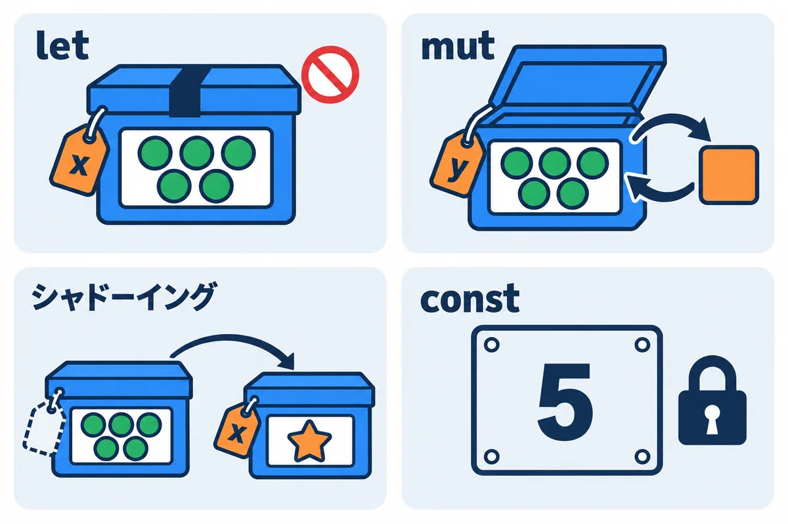
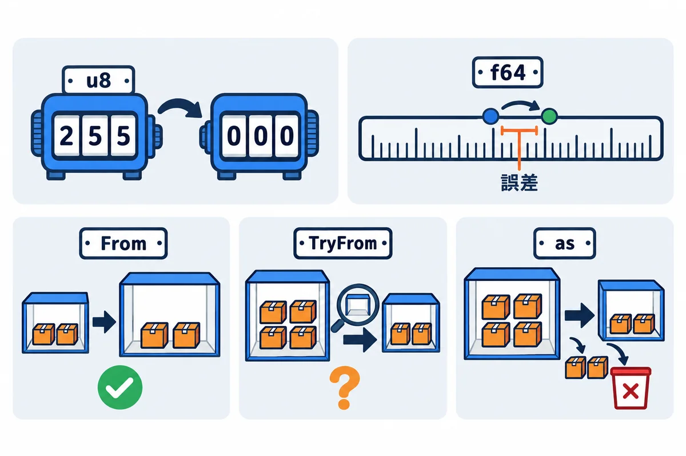
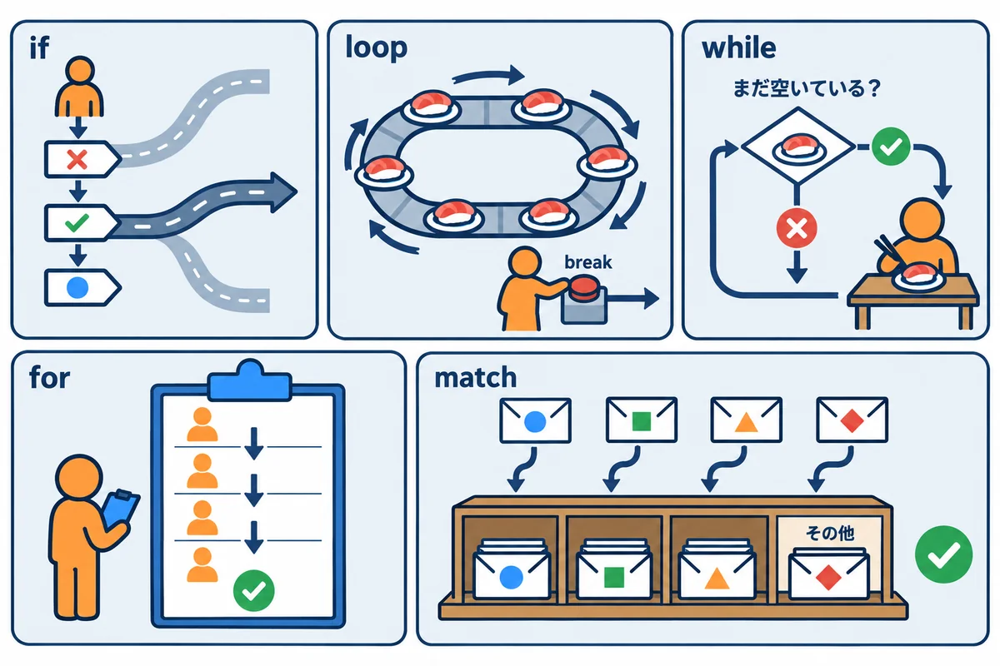
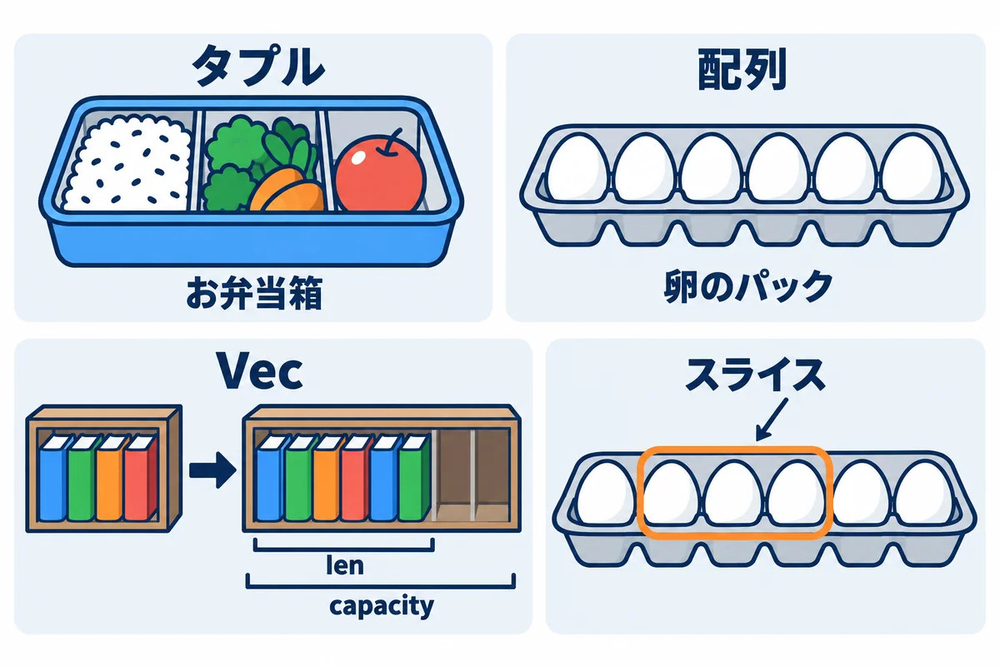
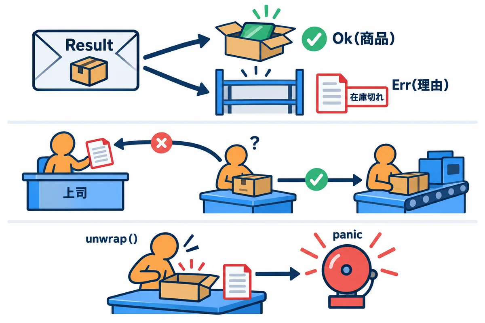

VOLUME 02 / RUST BACKEND MASTERY
Rust基礎 — 値・型・制御・データ構造
変数と型から文字列・コレクション・エラー処理まで、小さなコードを実際に動かして Rust の文法の土台を固める
色の付いた枠のコードの、右上の「コピー」ボタンを押してください。コピーしたら、ブラウザーの「戻る」で PDF に戻れます。
第1巻で Rust の開発環境が整いました。この巻では、いよいよ Rust の文法の土台を学びます。値に名前を付ける方法から始めて、数や文字列の扱い、条件分岐とくり返し、データをまとめる型、そして「失敗するかもしれない処理」の書き方まで、バックエンド開発で毎日使う道具をひと通りそろえます。
各単元では、まず数行の小さなコードを動かし、その出力を確かめてから、1行ずつ意味を読み解きます。わざとエラーを出して、コンパイラのメッセージの読み方も練習します。Rust のコンパイラは、間違いの場所と直し方をとても丁寧に教えてくれる「先生」です。エラーを怖がらずに、たくさん出して読んでみましょう。
この巻を終えると、次のことができるようになります。
mut やシャドーイングを意図どおりに使えるif・loop・for・match で処理の流れを組み立てられ、「式」と「文」の違いを説明できるlen() と chars().count() の違い）Vec・HashMap を目的に応じて使い分けられるstruct と enum で自分の型を作り、impl でメソッドを付けられるOption、「失敗するかもしれない」を Result で表し、? で失敗を伝えられるpub でコードを整理できるNoteTitle::parse と、メモリ上で動くミニ版 CLI を自分で書ける| 単元 | 内容 | RustNote との接続 |
|---|---|---|
| UNIT 01 | 変数・mut・シャドーイング・const |
タイトルの上限 MAX_TITLE_CHARS = 80 |
| UNIT 02 | 整数・小数・bool・char と型の変換 |
?page= のページ番号を安全に数へ |
| UNIT 03 | 関数・文と式・戻り値 | タイトルの文字数チェックを小さな関数に |
| UNIT 04 | if・loop・while・for・match |
「前へ／次へ」リンクの出し分け |
| UNIT 05 | String・&str・UTF-8 |
日本語タイトルを chars().count() で数える |
| UNIT 06 | タプル・配列・スライス・Vec |
一覧の表示と完了件数の集計 |
| UNIT 07 | struct・impl・関連関数・メソッド |
Note 構造体、NoteId / UserId |
| UNIT 08 | enum・Option・パターン |
検索語 ?q= を Option で扱う |
| UNIT 09 | Result・? 演算子・エラー型 |
NoteTitle::parse と TitleError |
| UNIT 10 | HashMap・イテレータ・クロージャ・モジュール |
メモリ上で動く RustNote ミニ版 CLI |
rustup と cargo のインストール、VS Code と rust-analyzer の準備、cargo new / cargo run / cargo fmt の使い方。1. 練習用のプロジェクトを1つ作る
この巻のコードは、すべて同じ1つのプロジェクトで試せます。最初に1回だけ、次のコマンドを実行してください。
# 好きな作業フォルダで実行する
cargo new basics
cd basics
以後は、例が出てくるたびに src/main.rs の中身をすべてその例のコードに置き換えて、cargo run で実行します（UNIT 10 の RustNote ミニ版だけは、別のプロジェクト rustnote_mini を作ります）。
2. 予想 → 実行 → 観察 → 1か所変える
; を消す、mut を外す、なども良い練習です。3. 実行結果の読み方
cargo run は、プログラムの出力の前に次の3行を表示します。本書の「▼ 実行結果」では、この3行を省略してプログラム自身の出力だけを載せています。 Compiling basics v0.1.0 (C:\Users\...\basics)
Finished `dev` profile [unoptimized + debuginfo] target(s) in 0.30s
Running `target\debug\basics.exe`
Compiling の行から全文を載せています。フォルダの場所は (.../basics) のように伏せています。src\main.rs、macOS / Linux / WSL では src/main.rs と表示されます。thread 'main' (12345) の数字は、実行のたびに変わります。4. 各単元の組み立て
どの単元も、「この単元のゴール → たとえ話 → 図 → まず動かす最小コード → もう一歩（実務に近い形）→ よくあるエラーと読み方 → RustNote ではここで使う → 練習問題と解答 → まとめ」の順に並んでいます。急ぐときは、ゴールと図と最小コードだけ先に読み、あとで戻ってきてもかまいません。
ヒント: コードを書いたら
cargo fmtで見た目を整え、cargo clippyで「もっと良い書き方」の提案を確かめる習慣を付けましょう（第1巻）。本書のコードはすべてcargo fmtで整えた形で載せています。
| 項目 | この巻での前提 |
|---|---|
| Rust | 1.99 以上（本書の実行結果は rustc 1.99.0 で取りました。1.99.1 でも同じ表示になることを確かめています。エラーの中の rustc のソースの場所の番号は、1.99.1 のものにしています） |
| エディション | 2024（cargo new で作ると Cargo.toml に edition = "2024" と書かれる） |
| 外部クレート | 使わない（標準ライブラリだけ） |
| OS・端末 | Windows 11 + PowerShell を主に説明（WSL / macOS / Linux でも同じコードが動く） |
| エディタ | VS Code + rust-analyzer |
手元の版は、次のコマンドで確かめられます。
rustc --version
cargo --version
1.99 より古いと表示されたら、rustup update で更新してください。本書と全く同じ版で試したいときは、プロジェクトのフォルダ（Cargo.toml と同じ場所）に rust-toolchain.toml というファイルを作り、次のように書きます。そのフォルダの中では、指定した版が自動で使われます（初回は自動でダウンロードされます）。
[toolchain]
channel = "1.99.1"
注意: エラーメッセージの細かい言い回しは、Rust の版によって少し変わることがあります。本書と完全に同じでなくても、
error[E0384]のようなエラー番号と、^^^が指す場所が同じなら、内容は同じです。
let で値に名前を付け、println! で表示できるmut を付けられるmut による書き換えの違いを説明できるconst（定数）で書ける
変数は「箱に貼った名札」だと考えてください。
let x = 5; は、5 を入れた箱を用意して「x」という名札を貼り、ふたをテープで閉じることです。中身を見ることはできますが、入れ替えはできません。let mut y = 5; の mut（ミュート：mutable ＝ 変更可能 の略）は、「ふたを開けたままにしておく」という宣言です。あとから中身を入れ替えられます。const（コンスト：constant ＝ 定数）は、金属のプレートに刻印した値です。プログラムを作る（コンパイルする）時点で決まっていて、二度と変わりません。なぜ「ふたが閉じている」のが基本なのでしょうか。大きなプログラムでは、「この値はどこかで書き換えられていないか？」を疑いながら読むのはとても疲れます。Rust は変えない値を標準にし、変える値にだけ mut という目印を付けさせることで、読む人が安心できるようにしています。
4つの書き方を表にまとめます。
| 書き方 | 中身の入れ替え | 型を変える | いつ使うか |
|---|---|---|---|
let x = 5; |
できない | できない | ほとんどの値（まずはこれ） |
let mut x = 5; |
できる | できない | 数を数える、少しずつ組み立てるなど、本当に変わる値 |
let x = x + 1;（シャドーイング） |
新しい箱を作る | できる | 「文字列 → 空白除去 → 数」のように段階的に変換するとき |
const MAX: u32 = 80; |
できない | できない | プログラム全体で共有する決まった値（上限・既定値） |
この巻のコードは、すべて次の手順で動かせます（詳しくは巻頭の「この巻の進め方」）。
# 最初に1回だけ: 練習用プロジェクトを作って中に入る
cargo new basics
cd basics
# 以後は src/main.rs の中身を例のコードに置き換えて実行する
cargo run
▼ このコードがやること（先に日本語で）: 文字と数にそれぞれ名前を付けて、画面に表示します。
println!の中の{}が「ここに値を差し込む」印です。
fn main() {
// title という名前に、文字列 "Rust入門" を結び付ける
let title = "Rust入門";
// count という名前に、数 3 を結び付ける
let count = 3;
// {} の位置に、後ろに書いた値が入って表示される
println!("タイトル: {}", title);
// {count} のように、波かっこの中へ変数名を直接書いてもよい
println!("ノートの数: {count}");
}
cargo run
▼ 実行結果
タイトル: Rust入門
ノートの数: 3
fn main() { ... }fn main() {
// ここに書いた文が上から順に実行される
}
fn（エフエヌ：function ＝ 関数 の略）は「ひとまとまりの処理を作る」キーワードです。main という名前の関数は特別で、プログラムを起動すると最初に呼ばれる入口です。{ }（波かっこ）の中が関数の中身です。関数については UNIT 03 で詳しく学びます。let 名前 = 値;let title = "Rust入門";
let count = 3;
let（レット）は「この値に名前を付ける」宣言です。この「名前と値を結び付けること」を束縛（バインディング）とも呼びます。"..." で囲んだものは文字列、3 は数です。どちらも型（値の種類）を書いていませんが、Rust が右側の値から自動で決めます。これを型推論（かたすいろん）と呼びます。;（セミコロン）を付けます。用語: 型（かた） … 値の種類のこと。「整数」「文字列」「真偽値」などがあります。Rust はすべての値の型をコンパイルの時点で決めます。
println! と {}println!("タイトル: {}", title);
println!("ノートの数: {count}");
println!（プリントライン）は画面に1行表示する命令です。名前の最後の ! は、これが関数ではなくマクロ（コードを自動で組み立てる仕組み）であることを表します。今は「表示するときは println!」と覚えれば十分です。{} は「ここに値を差し込む」穴です。後ろに , title と書いた値が入ります。{count} のように、穴の中へ変数名を直接書くこともできます。本書ではこちらを多く使います。▼ このコードがやること（先に日本語で）: 完了したノートの数を数える変数を作り、1を足したり2を足したりして、そのたびに表示します。数が変わる変数なので
mutを付けます。
▶ 書く所と動かし方: 練習用のプロジェクト basicsの src\main.rs を開き、中身を全部消してから下のコードを貼り付けて保存します。PowerShell で basics のフォルダにいることを確かめて、cargo run を実行します。
fn main() {
// mut を付けると、あとから中身を入れ替えられる変数になる
let mut done_count = 0;
println!("はじめ: {done_count}");
// 今の値に 1 を足して、同じ変数へ入れ直す
done_count = done_count + 1;
println!("1件完了: {done_count}");
// += は「自分に足して入れ直す」の短い書き方
done_count += 2;
println!("さらに2件完了: {done_count}");
}
▼ 実行結果
はじめ: 0
1件完了: 1
さらに2件完了: 3
let mutlet mut done_count = 0;
mut を付けた変数だけが、あとから = で別の値を入れ直せます。これを再代入（さいだいにゅう）と呼びます。mut は「この値はこの先変わります」という読む人へのお知らせでもあります。+=done_count = done_count + 1;
done_count += 2;
done_count に入れる」という意味です。数学の「等しい」ではなく「入れる」です。+= は done_count = done_count + 2 の短縮形です。-= *= /= も同じように使えます。cargo clippy を実行すると、1行目の書き方には「done_count += 1 と書けます」という提案が出ます。ここでは仕組みを見せるために、あえて長い形で書いています。▼ このコードがやること（先に日本語で）: 画面から届いたような「前後に空白のある文字列」を、空白を取り除き、さらに数へ変換します。3段階とも
inputという同じ名前を使い、そのたびに新しい変数を作り直しています。
▶ 書く所と動かし方: 練習用のプロジェクト basicsの src\main.rs を開き、中身を全部消してから下のコードを貼り付けて保存します。PowerShell で basics のフォルダにいることを確かめて、cargo run を実行します。
fn main() {
// 段階1: 画面から受け取った文字列（前後に空白がある）
let input = " 42 ";
println!("[{input}]");
// 段階2: 同じ名前で「前後の空白を取り除いた版」を作り直す
let input = input.trim();
println!("[{input}]");
// 段階3: さらに同じ名前で「数（u32 型）に変換した版」を作り直す
let input: u32 = input.parse().expect("数字ではありません");
// 数になったので足し算ができる
println!("{}", input + 1);
}
▼ 実行結果
[ 42 ]
[42]
43
▶ ここで初めて出てくるコード
.expect()（エラー処理）:OptionやResultから中身を取り出すメソッド。中身が無い（失敗した）時は、かっこの中の文を表示して、その場でプログラムが止まります（パニック）。unwrap()と同じですが、止まった理由が分かる文を付けられるので、unwrap()よりこちらがおすすめです。
let を書くと「新しい変数」になるlet input = " 42 ";
let input = input.trim();
input は「1つ目の input」、左側の input は「2つ目の input」です。右側を先に計算してから、新しい箱に名札を貼ります。mut を付けていないのにエラーにならないのは、書き換えではなく新しく作っているからです（図1-2）。.trim()（トリム）は文字列の前後の空白を取り除いた結果を返します。表示の [ ] は空白が見えるように付けた飾りです。let input: u32 = input.parse().expect("数字ではありません");
: u32 は「この変数の型は u32（0以上の整数）です」という型注釈（かたちゅうしゃく）です。.parse()（パース：解析する）は文字列を別の型に変換します。どの型にするかを : u32 から読み取ります。.expect("...") は「変換に失敗したらこのメッセージを出してプログラムを止める」という意味です。失敗の扱い方は UNIT 09 で丁寧に学びます。mut の再代入ではこれはできません。▼ このコードがやること（先に日本語で）:
{ }で囲んだ範囲の中でだけ同じ名前の変数を作り直し、範囲を出たら元の値が見えることを確かめます。
▶ 書く所と動かし方: 練習用のプロジェクト basicsの src\main.rs を開き、中身を全部消してから下のコードを貼り付けて保存します。PowerShell で basics のフォルダにいることを確かめて、cargo run を実行します。
fn main() {
let level = 1;
{
// このブロック { } の中だけで有効な、新しい level を作る
let level = level * 10;
println!("ブロックの中: {level}");
}
// ブロックを出ると、新しい level は消え、元の level が見える
println!("ブロックの外: {level}");
}
▼ 実行結果
ブロックの中: 10
ブロックの外: 1
let で作った変数は、それを囲む { } の終わりまで有効です。level は } で消えます。すると、隠れていた1つ目の level（値は 1）がまた見えるようになります。level は一度も書き換えられていません。だから mut は不要です。▼ このコードがやること（先に日本語で）: タイトルの最大文字数やセッションの日数など、プログラム全体で変わらない値を定数にして使います。定数同士の計算もしてみます。
▶ 書く所と動かし方: 練習用のプロジェクト basicsの src\main.rs を開き、中身を全部消してから下のコードを貼り付けて保存します。PowerShell で basics のフォルダにいることを確かめて、cargo run を実行します。
// 定数はファイルのどこからでも使える。型の注釈（: usize など）が必須
const MAX_TITLE_CHARS: usize = 80;
// 定数の値は、コンパイルするときに計算できる式なら書ける
const SECONDS_PER_DAY: u64 = 24 * 60 * 60;
const SESSION_DAYS: u64 = 30;
fn main() {
println!("タイトルは最大 {MAX_TITLE_CHARS} 文字");
let session_seconds = SESSION_DAYS * SECONDS_PER_DAY;
println!("セッションの有効期限: {session_seconds} 秒");
// 数字の中の _ は読みやすくするための区切りで、値は変わらない
let big = 1_000_000;
println!("百万: {big}");
}
▼ 実行結果
タイトルは最大 80 文字
セッションの有効期限: 2592000 秒
百万: 1000000
▶ ここで初めて出てくるコード
const（変数）: ずっと変わらない値（定数）に名前を付ける書き方。const MAX_TITLE_CHARS: usize = 80;。名前は大文字と_で書き、型（usizeなど）を必ず書きます。プログラムのどこからでも使えます。
const の決まりごとconst MAX_TITLE_CHARS: usize = 80;
MAX_TITLE_CHARS）で書くのが Rust の習慣です。変数は小文字（done_count）なので、見ただけで区別できます。: usize のような型注釈が必須です。let と違い、定数では型を省略できません。fn main() の外（ファイルの一番上）に書けるので、どの関数からでも使えます。mut は付けられません。値はコンパイルの時点で決まり、実行中に変わることはありません。用語: usize / u64 … どちらも「0以上の整数」の型です。
usizeは長さや個数、u64は大きな数に使います。整数の型は UNIT 02 で詳しく学びます。
ヒント:
constによく似たstatic（スタティック）もあります。staticは「プログラムの実行中ずっと同じ場所に1つだけ存在する値」です。初心者のうちは、決まった値にはconstを使えば困りません。
バックエンドでは、「環境変数などから文字列で届いた設定値を、空白を取り除き、数に変換し、失敗したら既定値を使う」という処理がよく出てきます。段階的な変換はシャドーイング、変化する状態（試行回数）だけを mut、決まった値は const にします。
▼ このコードがやること（先に日本語で）: 文字列のポート番号を数へ変換します。数字でなかったときは既定値 8080 を使います。最後に、接続を3回まで試すふりをして、試行回数を数えます。
▶ 書く所と動かし方: 練習用のプロジェクト basicsの src\main.rs を開き、中身を全部消してから下のコードを貼り付けて保存します。PowerShell で basics のフォルダにいることを確かめて、cargo run を実行します。
// 設定値の「既定値」と「上限」は定数にしておく
const DEFAULT_PORT: u16 = 8080;
const MAX_RETRIES: u32 = 3;
fn main() {
// 環境変数などから届いた「文字列の」ポート番号を想定する
let port = " 3000 ";
// 段階1: 空白を取り除く（文字列のまま）
let port = port.trim();
// 段階2: 数（u16）へ変換する。変換に失敗したら既定値を使う
let port: u16 = port.parse().unwrap_or(DEFAULT_PORT);
println!("待ち受けポート: {port}");
// 数字ではない文字列だった場合も試す
let broken = "abc";
let broken: u16 = broken.trim().parse().unwrap_or(DEFAULT_PORT);
println!("壊れた設定のときのポート: {broken}");
// 変化する状態（試行回数）だけを mut にする
let mut attempts = 0;
while attempts < MAX_RETRIES {
attempts += 1;
println!("{attempts} 回目の接続を試みます");
}
println!("上限の {MAX_RETRIES} 回に達しました");
}
▼ 実行結果
待ち受けポート: 3000
壊れた設定のときのポート: 8080
1 回目の接続を試みます
2 回目の接続を試みます
3 回目の接続を試みます
上限の 3 回に達しました
▶ ここで初めて出てくるコード
while（くり返し）: 条件がtrueの間、くり返す書き方。while 条件 { … }。条件が最初からfalseなら、1 回も動きません。
unwrap_or(既定値)let port: u16 = port.parse().unwrap_or(DEFAULT_PORT);
.parse() は成功することも失敗することもあります。.unwrap_or(DEFAULT_PORT) は「成功したらその値、失敗したら DEFAULT_PORT」を選びます。"abc" は数にできないので、2つ目の結果は 8080 になりました。プログラムは止まりません。この「成功か失敗か」の仕組み（Result）は UNIT 09 で学びます。mut は狭い範囲に閉じ込めるlet mut attempts = 0;
while attempts < MAX_RETRIES {
attempts += 1;
}
while は「条件が成り立つ間くり返す」構文です（UNIT 04 で詳しく）。attempts だけなので、mut もこれだけに付けます。port は一度決まったら変えないので mut は付けません。「変わるものが少ない」ほど、プログラムは読みやすく、間違いにくくなります。fn main() {
let count = 1;
println!("{count}");
count = 2;
println!("{count}");
}
Compiling basics v0.1.0 (.../basics)
error[E0384]: cannot assign twice to immutable variable `count`
--> src\main.rs:4:5
|
2 | let count = 1;
| ----- first assignment to `count`
3 | println!("{count}");
4 | count = 2;
| ^^^^^^^^^ cannot assign twice to immutable variable
|
help: consider making this binding mutable
|
2 | let mut count = 1;
| +++
For more information about this error, try `rustc --explain E0384`.
error: could not compile `basics` (bin "basics") due to 1 previous error
error[E0384] がエラーの番号と要約です（「不変の変数 count に2回代入することはできません」）。--> src\main.rs:4:5 は「src\main.rs の4行目5文字目」という場所です。^^^^ の下線が問題の箇所、----- が関係する箇所（最初の代入）を指しています。mut を付けずに作った count に、count = 2; で入れ直そうとしました。help: の提案どおり let mut count = 1; にします。または「入れ直す」のではなく「作り直す」意味でよければ let count = 2;（シャドーイング）にします。rustc --explain E0384 を実行すると、このエラーの詳しい説明（英語）が読めます。fn main() {
let mut input = " 42 ";
input = input.trim();
input = input.parse::<u32>().expect("数字ではありません");
println!("{input}");
}
Compiling basics v0.1.0 (.../basics)
error[E0308]: mismatched types
--> src\main.rs:4:13
|
2 | let mut input = " 42 ";
| ------ expected due to this value
3 | input = input.trim();
4 | input = input.parse::<u32>().expect("数字ではありません");
| ^^^^^^^^^^^^^^^^^^^^^^^^^^^^^^^^^^^^^^^^^^^^^^^^^ expected `&str`, found `u32`
For more information about this error, try `rustc --explain E0308`.
error: could not compile `basics` (bin "basics") due to 1 previous error
mismatched types は「型が合っていません」。expected &str, found u32 は「&str（文字列）が来るはずなのに u32（数）が来た」です。expected due to this value が、型が決まった場所（2行目の " 42 "）を指しています。mut は「中身を入れ替えてよい」だけで、型は変えられません。input は2行目で文字列型に決まっています。let input: u32 = input.parse().expect("数字ではありません"); にしてシャドーイングします。そうすると mut も不要になります。const MAX_TITLE_CHARS = 80;
fn main() {
println!("{MAX_TITLE_CHARS}");
}
Compiling basics v0.1.0 (.../basics)
error: missing type for `const` item
--> src\main.rs:1:22
|
1 | const MAX_TITLE_CHARS = 80;
| ^ help: provide a type for the constant: `: i32`
error: could not compile `basics` (bin "basics") due to 1 previous error
const には型注釈が必須です。help は : i32 を提案していますが、これは「とりあえずの案」です。文字数の上限なら長さを表す usize が適切なので、const MAX_TITLE_CHARS: usize = 80; と書きます。提案をそのまま貼るのではなく、意味を考えて型を選びましょう。fn main() {
let mut name = "RustNote";
println!("{name}");
}
warning: variable does not need to be mutable
--> src\main.rs:2:9
|
2 | let mut name = "RustNote";
| ----^^^^
| |
| help: remove this `mut`
|
= note: `#[warn(unused_mut)]` (part of `#[warn(unused)]`) on by default
warning: `basics` (bin "basics") generated 1 warning (run `cargo fix --bin "basics" -p basics` to apply 1 suggestion)
warning（警告）はエラーではないので、プログラムは実行されます（RustNote と表示されます）。mut は不要です」という意味です。不要な mut は読む人を「どこで変わるの？」と迷わせるので、help: remove this mut に従って消しましょう。つまずきポイント: 「とりあえず全部
mutにしておけばエラーが出ない」と考えがちですが、逆効果です。まずmutなしで書き、E0384 が出たところで「本当に変わる値か？」を考えてから付けるのが Rust 流です。
この教材で作るメモアプリ RustNote では、ノートのタイトルを「1〜80文字」に制限します。上限 80 はプログラム全体で共有する決まった値なので const にします。また、フォームから届いたタイトルは前後に空白が付いていることがあるので、シャドーイングで「整えた版」を作り直します。
▼ このコードがやること（先に日本語で）: 空白付きのタイトルを整え、その文字数を上限と並べて表示します。
▶ 書く所と動かし方: 練習用のプロジェクト basicsの src\main.rs を開き、中身を全部消してから下のコードを貼り付けて保存します。PowerShell で basics のフォルダにいることを確かめて、cargo run を実行します。
const MAX_TITLE_CHARS: usize = 80;
fn main() {
// フォームから届いたタイトル（前後に空白がついている）
let title = " 牛乳を買う ";
// 前後の空白を取り除いた版を、同じ名前で作り直す（シャドーイング）
let title = title.trim();
// 文字数を数える（日本語も 1 文字を 1 と数える方法。UNIT 05 で詳しく）
let chars = title.chars().count();
println!("タイトル「{title}」は {chars} 文字です（上限 {MAX_TITLE_CHARS} 文字）");
}
▼ 実行結果
タイトル「牛乳を買う」は 5 文字です（上限 80 文字）
この「整える → 数える → 上限と比べる」の流れは、UNIT 05 で文字数の数え方を、UNIT 09 で「範囲外ならエラーを返す」書き方を足して、NoteTitle::parse という検証関数に育てていきます。
問題1. 次のコードは E0384 になります。（a）mut を使う方法、（b）シャドーイングを使う方法の2通りで直してください。
fn main() {
let count = 1;
println!("{count}");
count = 2;
println!("{count}");
}
問題2. let price = "1200"; から始めて、シャドーイングを使って数（u32）に変換し、10% の税を足した金額 税込み: 1320 円 を表示してください。
問題3. 次のコードを実行すると何が表示されるでしょうか。実行する前に予想してください。
fn main() {
let x = 5;
let x = x + 1;
{
let x = x * 2;
println!("内側: {x}");
}
println!("外側: {x}");
}
解答1.
// (a) mut を使う方法
fn main() {
let mut count = 1;
println!("{count}");
count = 2;
println!("{count}");
}
// (b) シャドーイングを使う方法
fn main() {
let count = 1;
println!("{count}");
let count = 2;
println!("{count}");
}
▼ 実行結果（どちらも同じ）
1
2
解答2.
fn main() {
let price = "1200";
// 文字列を数に変換し、同じ名前で作り直す
let price: u32 = price.parse().expect("数字ではありません");
// 10% の税を足す（整数のまま計算するため、先に 110 を掛けてから 100 で割る）
let price = price * 110 / 100;
println!("税込み: {price} 円");
}
▼ 実行結果
税込み: 1320 円
price / 100 * 110 の順だと端数が失われることがあります。先に掛けてから割るのが整数計算のコツです（UNIT 02）。解答3.
内側: 12
外側: 6
x は 6 の新しい箱になります。ブロックの中では x * 2 = 12 の箱が作られますが、} で消えるので、外側では 6 が表示されます。let は値に名前を付ける。既定では変更できないので、変わる値にだけ mut を付ける。const（大文字の名前）にする。i32 u8 u64 usize など）を「符号の有無」と「ビット幅」で読み分けられるchecked_add などで安全に扱えるf64）に誤差があること、真偽値（bool）と文字（char）の性質を説明できるas による強制変換と、From / TryFrom による安全な変換を使い分けられる
整数の型は「桁数の決まったメーター」です。
999999 の次に 000000 へ戻ってしまうように、決まった桁数のメーターには表せる最大の数があります。Rust の u8 は「0〜255 まで数えられるメーター」です。u は unsigned（アンサインド：符号なし ＝ マイナスなし）、i は integer（インテジャー：整数。マイナスもあり）、数字の 8 32 64 はメーターの大きさ（ビット数）です。f64）は「定規の目盛り」に似ています。目盛りの間にある値はいちばん近い目盛りに寄せて記録されるので、ほんのわずかなズレ（誤差）が出ます。From）。大きな部屋から小さな部屋へは、入りきらないかもしれないので「入るか確かめてから運ぶ」（TryFrom）のが安全です。as は「入りきらない分は捨てて運ぶ」乱暴な引っ越しです。▼ このコードがやること（先に日本語で）: 整数・小数・真偽値・文字の値を作って表示し、いくつかの整数型の「最小値と最大値」と、文字型が使うバイト数を調べます。
▶ 書く所と動かし方: 練習用のプロジェクト basicsの src\main.rs を開き、中身を全部消してから下のコードを貼り付けて保存します。PowerShell で basics のフォルダにいることを確かめて、cargo run を実行します。
fn main() {
// 整数: 型を書かなければ i32 になる
let temperature = -5;
// 型を書いて決める。u8 は 0〜255 の整数
let level: u8 = 200;
// 数字の後ろに型名を付けて決める書き方もある
let big = 3_000_000_000u64;
// 小数: 型を書かなければ f64 になる
let ratio = 0.75;
// 真偽値: true か false のどちらか
let done = false;
// 文字: シングルクォート ' で1文字だけを囲む
let mark = 'あ';
println!("{temperature} {level} {big} {ratio} {done} {mark}");
// 型ごとの最小値と最大値
println!("i32: {} 〜 {}", i32::MIN, i32::MAX);
println!("u8 : {} 〜 {}", u8::MIN, u8::MAX);
println!("u64 の最大: {}", u64::MAX);
// その型が何バイトを使うか
println!("char は {} バイト", std::mem::size_of::<char>());
}
▶ ここで初めて出てくるコード
MIN（数）: 数の型が持っている「いちばん小さい値」。i32::MINは -2147483648。u8::MINは 0 です。MAX（数）: 数の型が持っている「いちばん大きい値」。i32::MAXは 2147483647、u8::MAXは 255 です。これより大きくなる計算は「あふれ（オーバーフロー）」になります。
cargo run
▼ 実行結果
-5 200 3000000000 0.75 false あ
i32: -2147483648 〜 2147483647
u8 : 0 〜 255
u64 の最大: 18446744073709551615
char は 4 バイト
let temperature = -5;
let ratio = 0.75;
i32、小数なら f64 になります。迷ったらこの2つで十分です。3_000_000_000u64 のように数字の後ろに型名を付けても型を決められます（_ は読みやすさのための区切り）。30億は i32 の最大（約21億）を超えるので、大きな型が必要です。i32::MIN と u8::MAXprintln!("u8 : {} 〜 {}", u8::MIN, u8::MAX);
型名::MIN 型名::MAX で、その型が表せる最小値・最大値が分かります。::（コロン2つ）は「その型に属するもの」を取り出す記号です。u、気温や差分のようにマイナスもある値は i を選びます。| 型 | 使いどころの例 |
|---|---|
i32 |
特に理由がないときの整数（既定） |
u8 |
0〜255 に収まる小さな値（色の濃さ、年齢など） |
u16 |
ポート番号（0〜65535） |
u32 / u64 |
件数、金額（円）、大きな ID |
i64 |
データベース（SQLite / libSQL）の整数列。マイナスも入る |
usize |
長さ・個数・何番目か（Vec や文字列の長さはこの型） |
f64 |
小数（割合、平均値など） |
char は4バイトprintln!("char は {} バイト", std::mem::size_of::<char>());
char（キャラ：character ＝ 文字）は Unicode（ユニコード：世界中の文字に番号を振った規格）の文字1つを表し、英字でも日本語でもいつも4バイトです。String）の中では1文字が1〜4バイトに詰めて保存されます。この違いは UNIT 05 で大事になります。▼ このコードがやること（先に日本語で）: 0〜255 しか入らない
u8の 255 に 1 を足して、はみ出したらどうなるかを確かめます。
▶ 書く所と動かし方: 練習用のプロジェクト basicsの src\main.rs を開き、中身を全部消してから下のコードを貼り付けて保存します。PowerShell で basics のフォルダにいることを確かめて、cargo run を実行します。
fn main() {
// 文字列から作った値（コンパイルの時点では中身が分からない値）
let stock: u8 = "255".parse().unwrap();
println!("在庫: {stock}");
// u8 の最大は 255。1 を足すと入りきらない
let next = stock + 1;
println!("次: {next}");
}
▼ 実行結果（画面に出る全文）
在庫: 255
thread 'main' (22628) panicked at src\main.rs:6:16:
attempt to add with overflow
note: run with `RUST_BACKTRACE=1` environment variable to display a backtrace
error: process didn't exit successfully: `target\debug\basics.exe` (exit code: 101)
attempt to add with overflow は「足し算がはみ出そうとした」という意味、src\main.rs:6:16 は止まった場所（6行目16文字目）です。thread 'main' の後ろのかっこ内の数はスレッド（処理の流れ）の番号で、実行のたびに変わります。cargo run で作られる開発用ビルド（debug）では、はみ出しを検出して止めてくれます。cargo run --release のリリースビルドでは検査を省くため、止まらずに黙って一周します（このコードなら 次: 0 と表示されました）。どちらにしても、はみ出しは「起きないように書く」か「起きたら気づけるように書く」べきものです。"255".parse().unwrap() と書いたのかlet stock: u8 = 255; と直接書くと、Rust はコンパイルの時点で stock + 1 がはみ出すことに気づき、エラーにしてくれます。実行時の panic を見せるために、わざと「実行するまで中身が分からない値」にしました。▼ このコードがやること（先に日本語で）: 250 に 10 を足す計算を、「一周する」「失敗を知らせる」「上限で止める」など4通りのやり方で行い、結果を見比べます。
fn main() {
let stock: u8 = 250;
// wrapping_add: はみ出したら 0 に戻って数え直す（時計の針のように一周する）
println!("wrapping_add: {}", stock.wrapping_add(10));
// checked_add: はみ出したら None（計算できなかった）を返す
println!("checked_add: {:?}", stock.checked_add(10));
println!("checked_add(5): {:?}", stock.checked_add(5));
// saturating_add: はみ出したら最大値で止める
println!("saturating_add: {}", stock.saturating_add(10));
// overflowing_add: 一周した結果と「はみ出したかどうか」の両方を返す
println!("overflowing_add: {:?}", stock.overflowing_add(10));
}
▼ 実行結果
wrapping_add: 4
checked_add: None
checked_add(5): Some(255)
saturating_add: 255
overflowing_add: (4, true)
▶ ここで初めて出てくるコード
.wrapping_add()（数）: 足し算をして、型に入りきらない時は、0（いちばん小さい値）に戻って数え直すメソッド。時計の針が 12 を過ぎて 1 に戻るのと同じです（255u8.wrapping_add(1)は 0）。.checked_add()（数）: 足し算をして、型に入りきらない時はNone（計算できなかった）を返すメソッド。入りきればSome(結果)。お金の合計など、あふれると困る所で使います。.saturating_add()（数）: 足し算をして、型に入りきらない時は、いちばん大きい値で止めるメソッド（250u8.saturating_add(10)は 255）。.overflowing_add()（数）: 足し算の結果（あふれたら一周した値）と、「あふれたかどうか」の両方を、組(値, true/false)で返すメソッド。
| メソッド | はみ出したとき | 向いている場面 |
|---|---|---|
wrapping_add |
一周する（260 − 256 = 4） | ハッシュ計算など、一周が仕様のとき |
checked_add |
None を返す |
外から来た値の計算（いちばんよく使う） |
saturating_add |
最大値（255）で止まる | 回数や音量など「上限で止まればよい」とき |
overflowing_add |
(結果, true) を返す |
はみ出したかどうかも知りたいとき |
checked_sub checked_mul などがそろっています。{:?} と Some / Noneprintln!("checked_add: {:?}", stock.checked_add(10));
checked_add の結果は「値がある（Some(255)）」か「値がない（None）」のどちらかです。この型を Option と呼びます（UNIT 08 で詳しく）。{:?} は「プログラマー向けの表示」です。{} では表示できない Option なども {:?} なら中身ごと表示できます。▼ このコードがやること（先に日本語で）: 300 を
u8に、-1 をu32に、3.99 を整数に変換してみます。asだと数が化けてしまうこと、TryFromなら「入らない」ことを教えてくれることを確かめます。
▶ 書く所と動かし方: 練習用のプロジェクト basicsの src\main.rs を開き、中身を全部消してから下のコードを貼り付けて保存します。PowerShell で basics のフォルダにいることを確かめて、cargo run を実行します。
fn main() {
// as: 型を強制的に変換する。入りきらない分は黙って捨てられる
let big: i32 = 300;
let small = big as u8;
println!("300 as u8 = {small}");
let minus: i32 = -1;
println!("-1 as u32 = {}", minus as u32);
// 小数 → 整数は、小数点以下が切り捨てられる
println!("3.99 as i32 = {}", 3.99_f64 as i32);
// From: 必ず成功する変換（小さい型 → 大きい型）
let level: u8 = 200;
let wide = u32::from(level);
println!("u32::from(200u8) = {wide}");
// TryFrom: 失敗するかもしれない変換。結果は Ok(値) か Err(理由)
println!("u8::try_from(300) = {:?}", u8::try_from(big));
println!("u8::try_from(100) = {:?}", u8::try_from(100_i32));
}
▼ 実行結果
300 as u8 = 44
-1 as u32 = 4294967295
3.99 as i32 = 3
u32::from(200u8) = 200
u8::try_from(300) = Err(TryFromIntError(PosOverflow))
u8::try_from(100) = Ok(100)
▶ ここで初めて出てくるコード
as（数）: 型を変える書き方。x as f64は整数を小数に、300 as u8は 300 を u8 に変えます。入りきらない分は黙って切り捨てられるので（300 → 44）、範囲が分からない時はtry_fromを使います。
as は黙って数を変えてしまう300 as u8 が 44 になったのは、300 − 256 = 44 と一周した分だけが残ったからです。-1 as u32 は u32 の最大値になりました。どちらもエラーは出ません。as は手軽ですが、外から来た値に使うと気づかないうちに数が化ける危険があります。From と TryFromu32::from(level) … u8 → u32 のように「必ず入る」変換は From で書けます。必ず成功するので結果をそのまま使えます。u8::try_from(big) … 入らないかもしれない変換は TryFrom です。成功なら Ok(値)、失敗なら Err(理由) が返ります（PosOverflow は「プラス側にはみ出した」）。この Ok / Err の型 Result は UNIT 09 で学びます。ヒント: 変換の選び方は「必ず入るなら
From、入らないかもしれないならTryFrom、文字列からならparse」。asは「小数を整数に切り捨てたい」「平均を出すために整数を小数にしたい」など、結果を理解しているときだけ使います。
▼ このコードがやること（先に日本語で）: 0.1 + 0.2 がぴったり 0.3 にならないことを確かめ、誤差を許した比べ方と、表示の丸め方を試します。整数と小数の割り算の違いも見ます。
▶ 書く所と動かし方: 練習用のプロジェクト basicsの src\main.rs を開き、中身を全部消してから下のコードを貼り付けて保存します。PowerShell で basics のフォルダにいることを確かめて、cargo run を実行します。
fn main() {
// 型を f64 と書いておく（書かないと .abs() が使えない。下の「よくあるエラー」参照）
let a: f64 = 0.1;
let b: f64 = 0.2;
// 0.1 + 0.2 は、ぴったり 0.3 にはならない
println!("0.1 + 0.2 = {}", a + b);
println!("0.1 + 0.2 == 0.3 ? {}", a + b == 0.3);
// 小さな誤差を許して比べる
let close = (a + b - 0.3).abs() < 1e-9;
println!("ほぼ等しい ? {close}");
// 表示だけ小数点以下2桁にそろえる
println!("表示を丸める: {:.2}", a + b);
// 整数どうしの割り算は、小数点以下を切り捨てる
println!("7 / 2 = {}", 7 / 2);
// % は割り算の余り
println!("7 % 2 = {}", 7 % 2);
// 小数どうしなら、小数の答えになる
println!("7.0 / 2.0 = {}", 7.0 / 2.0);
// 小数を 0 で割ってもエラーにならず「無限大」になる
println!("1.0 / 0.0 = {}", 1.0_f64 / 0.0);
}
▼ 実行結果
0.1 + 0.2 = 0.30000000000000004
0.1 + 0.2 == 0.3 ? false
ほぼ等しい ? true
表示を丸める: 0.30
7 / 2 = 3
7 % 2 = 1
7.0 / 2.0 = 3.5
1.0 / 0.0 = inf
▶ ここで初めて出てくるコード
.abs()（数）: 絶対値（マイナスを取った値）を返すメソッド。(-5).abs()は 5。小数に使う時は、値の型がf64などと決まっている必要があります。
(差).abs() < 1e-9（差の絶対値がとても小さいか）で比べる。②お金のように誤差が許されない値は、小数を使わず整数（円）で持つ。{:.2} と整数の割り算{:.2} は「小数点以下2桁で表示する」書式です。値そのものは変わらず、表示だけが丸まります。7 / 2 が 3 になるのは、整数どうしの割り算は小数点以下を捨てるからです。余りは % で求めます。inf（infinity：無限大）になります。▼ このコードがやること（先に日本語で）: ログイン状態を表す真偽値を組み合わせて判定し、文字を番号に変換したり、文字の種類を調べたりします。
▶ 書く所と動かし方: 練習用のプロジェクト basicsの src\main.rs を開き、中身を全部消してから下のコードを貼り付けて保存します。PowerShell で basics のフォルダにいることを確かめて、cargo run を実行します。
fn main() {
let logged_in = true;
let is_owner = false;
// && は「かつ」、|| は「または」、! は「ではない」
println!("編集できる: {}", logged_in && is_owner);
println!("閲覧できる: {}", logged_in || is_owner);
println!("ログアウト中: {}", !logged_in);
// char は Unicode の1文字。番号（コードポイント）に変換できる
let c = 'あ';
println!("'{c}' の番号: {} (16進数で {:X})", c as u32, c as u32);
// 番号から char に戻す（存在しない番号もあるので、結果は Some か None）
println!("0x41 は {:?}", char::from_u32(0x41));
// 数字の文字を数に変換する
println!("'7' を数に: {:?}", '7'.to_digit(10));
// 文字の種類を調べる
println!("'A' は英字? {}", 'A'.is_alphabetic());
println!("'あ' は ASCII の英数字? {}", 'あ'.is_ascii_alphanumeric());
}
▼ 実行結果
編集できる: false
閲覧できる: true
ログアウト中: false
'あ' の番号: 12354 (16進数で 3042)
0x41 は Some('A')
'7' を数に: Some(7)
'A' は英字? true
'あ' は ASCII の英数字? false
▶ ここで初めて出てくるコード
.to_digit()（文字）: 1 文字（char）を、その文字が表す数に変えるメソッド。'7'.to_digit(10)はSome(7)（10 は「10 進数で」という意味）。数字でない文字ならNoneです。.is_alphabetic()（文字）: その文字が「文字（英字・かな・漢字など）」ならtrueを返すメソッド。.is_ascii_alphanumeric()（文字）: その文字が、ASCII（半角）の英字か数字（A〜Z・a〜z・0〜9）ならtrueを返すメソッド。'あ'はfalseです。char::from_u32()（文字）: 番号（文字コード）から 1 文字を作る関数。char::from_u32(0x41)はSome('A')。文字に無い番号ならNoneです。
bool（ブール）は true（真）か false（偽）の2つだけの型です。&&（かつ）・||（または）・!（ではない）で組み合わせます。'あ' の番号は 12354（16進数で 3042）です。Unicode の表では U+3042 と書きます。{:X} は「16進数の大文字で表示する」書式です。char::from_u32(0x41) は番号 0x41（65）の文字 'A' を返します。番号によっては文字が存在しないので、結果は Some か None です。'7'.to_digit(10) は「10進数の数字として読むと 7」です。'x' のように数字でない文字なら None になります。お金の計算と、データベースから来た ID の変換です。どちらも「はみ出し」と「不正な値」を見逃さないことが大切です。
▼ このコードがやること（先に日本語で）: 単価（円）×個数を、はみ出しを検出しながら計算します。続いて、データベースから届いた
i64の ID を、マイナスなら拒否しながらu64へ変換します。
▶ 書く所と動かし方: 練習用のプロジェクト basicsの src\main.rs を開き、中身を全部消してから下のコードを貼り付けて保存します。PowerShell で basics のフォルダにいることを確かめて、cargo run を実行します。
fn main() {
// 金額は小数ではなく「円（整数）」で持つ
let unit_price: u32 = 1_250;
// 個数はフォームから u16 で届いたとする
let quantity: u16 = 3;
// u16 → u32 は必ず成功するので From を使う
let quantity = u32::from(quantity);
// 掛け算がはみ出したら None になる checked_mul を使う
match unit_price.checked_mul(quantity) {
Some(total) => println!("合計: {total} 円"),
None => println!("金額が大きすぎます"),
}
// 極端に大きな個数も試す
let huge: u32 = 4_000_000;
match unit_price.checked_mul(huge) {
Some(total) => println!("合計: {total} 円"),
None => println!("金額が大きすぎます"),
}
// データベースの ID は i64 で届くことが多い。負の値は ID として不正
for raw_id in [42_i64, -7] {
match u64::try_from(raw_id) {
Ok(id) => println!("ID {id} を使います"),
Err(e) => println!("ID {raw_id} は使えません: {e}"),
}
}
}
▼ 実行結果
合計: 3750 円
金額が大きすぎます
ID 42 を使います
ID -7 は使えません: number too small to fit in target type
▶ ここで初めて出てくるコード
.checked_mul()（数）: 掛け算をして、型に入りきらない時はNoneを返すメソッド（checked_addの掛け算版）。
match で「成功」と「失敗」に分けるmatch unit_price.checked_mul(quantity) {
Some(total) => println!("合計: {total} 円"),
None => println!("金額が大きすぎます"),
}
match（マッチ）は「結果の形ごとに処理を分ける」構文です（UNIT 04・08 で詳しく）。Some(total) なら中の値を total という名前で取り出して表示し、None なら警告を表示します。u32 の最大（約43億）を超えるので None になりました。panic せず、きちんと「大きすぎる」と伝えられています。try_from の Err を表示するu64::try_from(-7) は失敗し、Err(e) の e に理由が入ります。{e} で表示すると number too small to fit in target type（数が小さすぎて変換先の型に入らない）という説明になります。大きすぎるときは number too large to fit in target type です。for raw_id in [42_i64, -7] は「42 と -7 で1回ずつ同じ処理をくり返す」書き方です（UNIT 04）。fn main() {
let count: i32 = 10;
let total: i64 = 1_000;
let sum = count + total;
println!("{sum}");
}
Compiling basics v0.1.0 (.../basics)
error[E0308]: mismatched types
--> src\main.rs:4:23
|
4 | let sum = count + total;
| ^^^^^ expected `i32`, found `i64`
error[E0277]: cannot add `i64` to `i32`
--> src\main.rs:4:21
|
4 | let sum = count + total;
| ^ no implementation for `i32 + i64`
|
= help: the trait `Add<i64>` is not implemented for `i32`
help: the following other types implement trait `Add<Rhs>`
--> /rustc/58cf8f9c35b355199727627d07ae34a4e2846d67/library\core\src\ops\arith.rs:98:8
|
= note: `i32` implements `Add`
::: /rustc/58cf8f9c35b355199727627d07ae34a4e2846d67/library\core\src\ops\arith.rs:113:0
|
= note: in this macro invocation
--> /rustc/58cf8f9c35b355199727627d07ae34a4e2846d67/library\core\src\internal_macros.rs:22:8
|
= note: `&i32` implements `Add<i32>`
::: /rustc/58cf8f9c35b355199727627d07ae34a4e2846d67/library\core\src\internal_macros.rs:33:8
|
= note: `i32` implements `Add<&i32>`
::: /rustc/58cf8f9c35b355199727627d07ae34a4e2846d67/library\core\src\internal_macros.rs:44:8
|
= note: `&i32` implements `Add`
= note: this error originates in the macro `add_impl` (in Nightly builds, run with -Z macro-backtrace for more info)
Some errors have detailed explanations: E0277, E0308.
For more information about an error, try `rustc --explain E0277`.
error: could not compile `basics` (bin "basics") due to 2 previous errors
expected i32, found i64（i32 が来るはずが i64 が来た）と cannot add i64 to i32（i32 に i64 は足せない）。後半の help: は「i32 に足せる型の一覧」なので、慣れるまでは読み飛ばしてかまいません。i32 と i64 のように型が違う数どうしの計算を自動ではしません。他の言語のように勝手にそろえないことで、意図しないはみ出しや切り捨てを防いでいます。From で変換します: let sum = i64::from(count) + total;fn main() {
let level: u8 = 256;
println!("{level}");
}
Compiling basics v0.1.0 (.../basics)
error: literal out of range for `u8`
--> src\main.rs:2:21
|
2 | let level: u8 = 256;
| ^^^
|
= note: the literal `256` does not fit into the type `u8` whose range is `0..=255`
= note: `#[deny(overflowing_literals)]` on by default
error: could not compile `basics` (bin "basics") due to 1 previous error
256 は u8 の範囲 0..=255（0以上255以下）に入りません。直接書いた数（リテラル）なら、コンパイラが事前に見つけてくれます。let level: u16 = 256;）。fn main() {
let stock: u32 = -1;
println!("{stock}");
}
Compiling basics v0.1.0 (.../basics)
error[E0600]: cannot apply unary operator `-` to type `u32`
--> src\main.rs:2:22
|
2 | let stock: u32 = -1;
| ^^ cannot apply unary operator `-`
|
= note: unsigned values cannot be negated
help: you may have meant the maximum value of `u32`
|
2 - let stock: u32 = -1;
2 + let stock: u32 = u32::MAX;
|
For more information about this error, try `rustc --explain E0600`.
error: could not compile `basics` (bin "basics") due to 1 previous error
u32 は 0 以上しか表せないので、-（マイナス記号）が使えません。help は「最大値のつもりでしたか？」と推測していますが、多くの場合の正解はマイナスも入る型（i32 など）にすることです。fn main() {
let total = 7;
let half = total / 2.0;
println!("{half}");
}
Compiling basics v0.1.0 (.../basics)
error[E0277]: cannot divide `{integer}` by `{float}`
--> src\main.rs:3:22
|
3 | let half = total / 2.0;
| ^ no implementation for `{integer} / {float}`
|
= help: the trait `Div<{float}>` is not implemented for `{integer}`
= help: the following other types implement trait `Div<Rhs>`:
`&f128` implements `Div<f128>`
`&f128` implements `Div`
`&f16` implements `Div<f16>`
`&f16` implements `Div`
`&f32` implements `Div<f32>`
`&f32` implements `Div`
`&f64` implements `Div<f64>`
`&f64` implements `Div`
and 62 others
For more information about this error, try `rustc --explain E0277`.
error: could not compile `basics` (bin "basics") due to 1 previous error
{integer}）と小数（{float}）は混ぜて計算できません。{integer} は「まだ i32 か u8 かは決まっていないが、整数のどれか」という意味です。let half = total as f64 / 2.0; とすると 3.5 が表示されます（整数 → 小数の as は意味が分かっているので安全な使い方です）。例5で型を書かずに .abs() を呼ぶと、エラーになります。
fn main() {
let a = 0.1;
let b = 0.2;
let diff = (a + b - 0.3).abs();
println!("{diff}");
}
Compiling basics v0.1.0 (.../basics)
error[E0689]: can't call method `abs` on ambiguous numeric type `{float}`
--> src\main.rs:4:30
|
4 | let diff = (a + b - 0.3).abs();
| ^^^
For more information about this error, try `rustc --explain E0689`.
error: could not compile `basics` (bin "basics") due to 1 previous error
{float} は「f32 か f64 か、まだ決まっていない小数」です。型が決まらないと、どの型の abs を呼べばよいか分かりません。let a: f64 = 0.1; のように型を書きます。RustNote のノート一覧は1ページに20件ずつ表示し、URL の ?page=3 のような文字列でページ番号を受け取ります。ここでは「数でない」「0」「マイナス」などのおかしな値でも、安全に1ページ目へ倒す処理を書きます。
▼ このコードがやること（先に日本語で）: いろいろな
?page=の値をu32に変換し、そのページで「先頭から何件を飛ばすか」を計算します。
▶ 書く所と動かし方: 練習用のプロジェクト basicsの src\main.rs を開き、中身を全部消してから下のコードを貼り付けて保存します。PowerShell で basics のフォルダにいることを確かめて、cargo run を実行します。
// 1ページに表示するノートの件数
const PER_PAGE: u32 = 20;
fn main() {
// URL の ?page= に入ってくる文字列をいくつか試す
for raw in ["1", "3", "0", "-2", "abc"] {
// 数（u32）にできなければ 1 ページ目とみなす
let page: u32 = raw.parse().unwrap_or(1);
// 0 ページ目は存在しないので、最低でも 1 にそろえる
let page = page.max(1);
// 先頭から何件を飛ばして表示するか
let offset = (page - 1) * PER_PAGE;
println!("?page={raw} → {page} ページ目, {offset} 件飛ばす");
}
}
▼ 実行結果
?page=1 → 1 ページ目, 0 件飛ばす
?page=3 → 3 ページ目, 40 件飛ばす
?page=0 → 1 ページ目, 0 件飛ばす
?page=-2 → 1 ページ目, 0 件飛ばす
?page=abc → 1 ページ目, 0 件飛ばす
u32 で受け取ると、-2 は数への変換の時点で失敗するので、マイナスのページが紛れ込みません。型を選ぶことが、そのまま入力チェックになっています。page.max(1) は「page と 1 の大きい方」です。これで 0 を 1 にそろえ、page - 1 がマイナス（u32 のはみ出し）になるのを防いでいます。done: bool、データベースの ID を i64 で扱います。問題1. let x: u8 = 200; のとき、x.checked_add(100)、x.wrapping_add(100)、x.saturating_add(100) はそれぞれ何になるでしょうか。予想してから実行して確かめてください。
問題2. 設定ファイルから i64 で届いたポート番号 8080、70000、-1 を、u16::try_from で u16 に変換し、成功・失敗をそれぞれ表示してください。
問題3. 3人の点数 80, 95, 72（u32）の平均を、小数点以下1桁まで 平均: 82.3 点 のように表示してください。
解答1.
fn main() {
let x: u8 = 200;
println!("{:?}", x.checked_add(100));
println!("{}", x.wrapping_add(100));
println!("{}", x.saturating_add(100));
}
▼ 実行結果
None
44
255
checked_add は None、wrapping_add は 300 − 256 = 44、saturating_add は上限の 255 です。解答2.
fn main() {
for raw in [8080_i64, 70000, -1] {
match u16::try_from(raw) {
Ok(port) => println!("{raw}: ポート {port} を使います"),
Err(e) => println!("{raw}: 使えません（{e}）"),
}
}
}
▼ 実行結果
8080: ポート 8080 を使います
70000: 使えません（number too large to fit in target type）
-1: 使えません（number too small to fit in target type）
u16 は 0〜65535 なので、70000 も -1 も入りません。as u16 を使っていたら 70000 は 4464 に化けて、別のポートで起動してしまうところでした。解答3.
fn main() {
let a: u32 = 80;
let b: u32 = 95;
let c: u32 = 72;
// 合計は整数のまま計算する
let sum = a + b + c;
// 割る直前に f64 へ変換する
let average = sum as f64 / 3.0;
println!("平均: {average:.1} 点");
}
▼ 実行結果
平均: 82.3 点
sum / 3 のまま割ると整数の割り算で 82 になってしまいます。割る直前に as f64 で小数にするのがポイントです。{average:.1} は「小数点以下1桁」の書式です。i/u（マイナスの有無）＋ビット幅」。範囲を超える計算は debug で panic、release で一周するので、外からの値には checked_* を使う。char は Unicode の1文字で4バイト。From、入らないかもしれないなら TryFrom、文字列からなら parse」。as は結果を理解しているときだけ。fn で関数を定義し、引数の型と戻り値の型を書けるreturn で早めに関数を抜ける書き方（早期リターン）を使える関数は「自動販売機」です。
もう1つ、「文」と「式」のたとえです。
3 + 4 は 7 という答え（値）になります。let x = 7; は「x を作れ」という指示で、それ自体は答えを持ちません。;（セミコロン）を付けると、その式は文になり、答えは捨てられます。セミコロンは「答えをゴミ箱に入れる」記号だと思ってください。用語: ()（ユニット） … 「意味のある値はありません」を表す、中身が空の値です。型の名前も
()です。何も返さない関数は、実は()を返しています。
▼ このコードがやること（先に日本語で）: 2つの数を足して返す関数
addと、あいさつを表示するだけの関数greetを作り、mainから呼び出します。
▶ 書く所と動かし方: 練習用のプロジェクト basicsの src\main.rs を開き、中身を全部消してから下のコードを貼り付けて保存します。PowerShell で basics のフォルダにいることを確かめて、cargo run を実行します。
// 2つの整数を受け取り、その合計を返す関数
fn add(a: i32, b: i32) -> i32 {
// 最後の行にセミコロンを付けないと、その値が戻り値になる
a + b
}
// 何も返さない関数（-> 戻り値の型 を書かない）
fn greet(name: &str) {
println!("こんにちは、{name}さん");
}
fn main() {
let total = add(3, 4);
println!("3 + 4 = {total}");
greet("Rust");
// 関数の呼び出し結果を、そのまま別の関数の引数にしてもよい
println!("入れ子: {}", add(add(1, 2), add(3, 4)));
}
cargo run
▼ 実行結果
3 + 4 = 7
こんにちは、Rustさん
入れ子: 10
fn add(a: i32, b: i32) -> i32 {
a: i32 は「a という名前で i32 の値を受け取る」です。let と違い、関数の引数の型は必ず書きます。-> i32 は「i32 の値を返す」です。矢印 -> の後ろが戻り値の型です。 a + b
}
a + b には ; がありません。これが「この値を返す」という意味です（図3-2 の左側と同じ）。return a + b; と書くこともできますが、Rust では最後の式で返すのがふつうの書き方です。&strfn greet(name: &str) {
println!("こんにちは、{name}さん");
}
-> を書かない関数は、意味のある値を返しません（正確には () を返します）。表示だけする関数などがこの形です。&str は「文字列を借りて読む」ための型です。関数で文字列を受け取るときの基本形で、UNIT 05 で詳しく学びます。println!("入れ子: {}", add(add(1, 2), add(3, 4)));
add(1, 2) は値（3）になる式なので、そのまま別の関数の引数に書けます。内側から順に add(3, 7) = 10 と計算されます。▼ このコードがやること（先に日本語で）:
{ }で囲んだブロックの計算結果や、ifの結果を変数に入れます。最後が文で終わるブロックの値が()になることも確かめます。
▶ 書く所と動かし方: 練習用のプロジェクト basicsの src\main.rs を開き、中身を全部消してから下のコードを貼り付けて保存します。PowerShell で basics のフォルダにいることを確かめて、cargo run を実行します。
fn main() {
// { } のブロックも「値になる式」。最後の行の値がブロック全体の値になる
let area = {
let width = 3;
let height = 4;
width * height
};
println!("面積: {area}");
// if も式なので、結果をそのまま変数に入れられる
let size = if area >= 10 { "大" } else { "小" };
println!("大きさ: {size}");
// 最後が「文」（セミコロン付き）のブロックは、() という「空の値」になる
let nothing = {
println!("ブロックの中で表示だけする");
};
println!("nothing の中身: {nothing:?}");
}
▼ 実行結果
面積: 12
大きさ: 大
ブロックの中で表示だけする
nothing の中身: ()
let area = {
let width = 3;
let height = 4;
width * height
};
width と height は、面積を計算するためだけの変数です。ブロックを出ると消えるので、外の名前とぶつかりません。width * height の値（12）がブロックの値になり、area に入ります。}; の ; は let area = ...; という文の終わりのセミコロンです。if 式let size = if area >= 10 { "大" } else { "小" };
if も値を返す式です。条件が成り立てば { "大" } の値、そうでなければ { "小" } の値になります。条件 ? A : B）」の役目を、Rust では if 式が担います。() が返るブロックprintln!(...); は文なので、このブロックには最後の式がありません。値がないブロックは () になります。{nothing:?} で表示すると () と出ます。x + 1; のように計算結果を捨てる文を書くと、Rust は次の警告で「その値、使わなくていいの？」と教えてくれます。warning: unused arithmetic operation that must be used
--> src\main.rs:4:9
|
4 | x + 1;
| ^^^^^ the arithmetic operation produces a value
▼ このコードがやること（先に日本語で）: 合計点と人数から平均点を計算します。人数が 0 のときは割り算ができないので、計算する前に 0 を返して関数を終えます。
// 平均点を返す。人数が 0 のときは割り算できないので、先に 0 を返して終わる
fn average(total: u32, count: u32) -> u32 {
if count == 0 {
// return は「ここで関数を終えて、この値を返す」
return 0;
}
total / count
}
fn main() {
println!("{}", average(270, 3));
println!("{}", average(0, 0));
}
▼ 実行結果
90
0
return 0; は、その場で関数を終えて 0 を返します。後ろの total / count は実行されません。だから 0 での割り算（panic）が起きません。return を、ふつうの戻り値には最後の式を使う、という使い分けが Rust の慣習です。▼ このコードがやること（先に日本語で）: 表示するだけの関数の戻り値をあえて変数に受け取り、中身が
()であることを確かめます。
▶ 書く所と動かし方: 練習用のプロジェクト basicsの src\main.rs を開き、中身を全部消してから下のコードを貼り付けて保存します。PowerShell で basics のフォルダにいることを確かめて、cargo run を実行します。
fn log(message: &str) {
println!("[log] {message}");
}
fn main() {
// 戻り値の型を書かない関数は、実は () という値を返している
let result = log("起動しました");
println!("log の戻り値: {result:?}");
}
▼ 実行結果
[log] 起動しました
log の戻り値: ()
fn log(message: &str) は fn log(message: &str) -> () と同じ意味です。-> () は省略するのが決まりです。cargo clippy は「() を変数に入れても意味がありません」と警告します（例2の nothing も同じです）。ここでは中身を確かめるために、わざと受け取っています。実際のプログラムでは、1つの大きな関数に全部書くのではなく、名前の付いた小さな関数に分けて組み合わせます。関数名がそのまま説明になり、1つずつテストもしやすくなります。
▼ このコードがやること（先に日本語で）: 「税込みにする」「送料を決める」「総額を出す」の3つの関数を作り、組み合わせて支払い総額を計算します。税込み 5,000 円以上なら送料無料です。
▶ 書く所と動かし方: 練習用のプロジェクト basicsの src\main.rs を開き、中身を全部消してから下のコードを貼り付けて保存します。PowerShell で basics のフォルダにいることを確かめて、cargo run を実行します。
// 税率（%）、送料無料になる金額、送料
const TAX_RATE_PERCENT: u32 = 10;
const FREE_SHIPPING_THRESHOLD: u32 = 5_000;
const SHIPPING_FEE: u32 = 500;
// 税込みの金額を返す
fn with_tax(price: u32) -> u32 {
price * (100 + TAX_RATE_PERCENT) / 100
}
// 合計金額に応じた送料を返す。if の結果がそのまま戻り値になる
fn shipping_fee(subtotal: u32) -> u32 {
if subtotal >= FREE_SHIPPING_THRESHOLD {
0
} else {
SHIPPING_FEE
}
}
// 小さな関数を組み合わせて、支払い総額を計算する
fn total(price: u32, quantity: u32) -> u32 {
let subtotal = with_tax(price * quantity);
subtotal + shipping_fee(subtotal)
}
fn main() {
println!("1,000円 × 2個 = {} 円", total(1_000, 2));
println!("1,000円 × 5個 = {} 円", total(1_000, 5));
}
▼ 実行結果
1,000円 × 2個 = 2700 円
1,000円 × 5個 = 5500 円
fn shipping_fee(subtotal: u32) -> u32 {
if subtotal >= FREE_SHIPPING_THRESHOLD {
0
} else {
SHIPPING_FEE
}
}
if 式の値が、そのまま戻り値になります。0 にも SHIPPING_FEE にもセミコロンを付けないのがポイントです。if と else のどちらの枝も u32 を返しているので、型がそろっています（そろっていないとエラーになります。UNIT 04）。fn total(price: u32, quantity: u32) -> u32 {
let subtotal = with_tax(price * quantity);
subtotal + shipping_fee(subtotal)
}
total の中身は「税込みにして、送料を足す」と日本語のように読めます。計算の細かい部分は、それぞれの関数の中に隠れています。with_tax（と定数）だけ、送料の規則が変わったら shipping_fee だけを直せば済みます。fn add(a: i32, b: i32) -> i32 {
a + b;
}
fn main() {
println!("{}", add(1, 2));
}
Compiling basics v0.1.0 (.../basics)
error[E0308]: mismatched types
--> src\main.rs:1:27
|
1 | fn add(a: i32, b: i32) -> i32 {
| --- ^^^ expected `i32`, found `()`
| |
| implicitly returns `()` as its body has no tail or `return` expression
2 | a + b;
| - help: remove this semicolon to return this value
For more information about this error, try `rustc --explain E0308`.
error: could not compile `basics` (bin "basics") due to 1 previous error
expected i32, found () は「i32 を返すと約束したのに、() が返っている」。implicitly returns () as its body has no tail or return expression は「本体に最後の式も return もないので、() を返していることになる」という意味です。a + b; のセミコロンで値が捨てられました（図3-2 の右側）。help: remove this semicolon to return this value（この値を返すにはセミコロンを消してください）のとおり、a + b にします。初心者がいちばんよく出会うエラーの1つです。fn add(a: i32, b: i32) {
a + b
}
fn main() {
println!("{}", add(1, 2));
}
Compiling basics v0.1.0 (.../basics)
error[E0308]: mismatched types
--> src\main.rs:2:5
|
1 | fn add(a: i32, b: i32) {
| - help: try adding a return type: `-> i32`
2 | a + b
| ^^^^^ expected `()`, found `i32`
error[E0277]: `()` doesn't implement `std::fmt::Display`
--> src\main.rs:6:20
|
6 | println!("{}", add(1, 2));
| -- ^^^^^^^^^ `()` cannot be formatted with the default formatter
| |
| required by this formatting parameter
|
= help: the trait `std::fmt::Display` is not implemented for `()`
= note: in format strings you may be able to use `{:?}` (or `{:#?}` for pretty-print) instead
Some errors have detailed explanations: E0277, E0308.
For more information about an error, try `rustc --explain E0277`.
error: could not compile `basics` (bin "basics") due to 2 previous errors
-> がないので「() を返す関数」とみなされ、最後の式 a + b（i32）と食い違いました。2つ目の E0277 は、その () を {} で表示しようとしたために出た連鎖のエラーです。help: try adding a return type: -> i32 のとおり、fn add(a: i32, b: i32) -> i32 にします。1つ目を直せば2つ目も消えます。ヒント: エラーが複数出たときは、いちばん上のエラーから直しましょう。後ろのエラーは、最初のエラーの巻き添えで出ていることがよくあります。
fn double(x) -> i32 {
x * 2
}
fn main() {
println!("{}", double(4));
}
Compiling basics v0.1.0 (.../basics)
error: expected one of `:`, `@`, or `|`, found `)`
--> src\main.rs:1:12
|
1 | fn double(x) -> i32 {
| ^ expected one of `:`, `@`, or `|`
|
help: if this is a parameter name, give it a type
|
1 | fn double(x: TypeName) -> i32 {
| ++++++++++
help: if this is a type, explicitly ignore the parameter name
|
1 | fn double(_: x) -> i32 {
| ++
error: could not compile `basics` (bin "basics") due to 1 previous error
expected one of :, @, or |, found ) は「x の後ろには : などが来るはずなのに ) が来た」という文法のエラーです。エラー番号がないのは、型を調べる前の「文の形」の段階で止まったからです。help（引数名なら型を付けてください）に従い、fn double(x: i32) -> i32 と書きます。TypeName は「ここに型名を書く」という意味の仮の名前です。fn add(a: i32, b: i32) -> i32 {
a + b
}
fn main() {
println!("{}", add(1));
}
Compiling basics v0.1.0 (.../basics)
error[E0061]: this function takes 2 arguments but 1 argument was supplied
--> src\main.rs:6:20
|
6 | println!("{}", add(1));
| ^^^--- argument #2 of type `i32` is missing
|
note: function defined here
--> src\main.rs:1:4
|
1 | fn add(a: i32, b: i32) -> i32 {
| ^^^ ------
help: provide the argument
|
6 | println!("{}", add(1, /* i32 */));
| +++++++++++
For more information about this error, try `rustc --explain E0061`.
error: could not compile `basics` (bin "basics") due to 1 previous error
argument #2 of type i32 is missing は「2番目の i32 の引数がない」。note: function defined here が関数の定義の場所を教えてくれます。add(1, 2) のように2つ渡します。Rust には「引数の省略」や「既定値付きの引数」はありません。UNIT 01 で作った「タイトルの文字数チェック」を、名前の付いた小さな関数に分けます。RustNote の検証処理は、最終的にこの形を NoteTitle::parse という1つの入口にまとめたものになります（UNIT 09）。
▼ このコードがやること（先に日本語で）: タイトルの空白を取り除き、文字数を数え、1〜80文字の範囲かどうかを判定して、結果を文章で返します。空白だけのタイトルと、81文字のタイトルも試します。
▶ 書く所と動かし方: 練習用のプロジェクト basicsの src\main.rs を開き、中身を全部消してから下のコードを貼り付けて保存します。PowerShell で basics のフォルダにいることを確かめて、cargo run を実行します。
const MAX_TITLE_CHARS: usize = 80;
// 前後の空白を取り除いた版を返す
fn normalize(raw: &str) -> &str {
raw.trim()
}
// 文字数を数える（日本語も 1 文字を 1 と数える）
fn char_count(text: &str) -> usize {
text.chars().count()
}
// 1 以上 80 以下なら true を返す
fn is_valid_length(len: usize) -> bool {
(1..=MAX_TITLE_CHARS).contains(&len)
}
// 判定結果を、人が読める文にして返す
fn describe(raw: &str) -> String {
let title = normalize(raw);
let len = char_count(title);
if is_valid_length(len) {
format!("OK: 「{title}」（{len}文字）")
} else {
format!("NG: {len}文字は 1〜{MAX_TITLE_CHARS} 文字の範囲外です")
}
}
fn main() {
println!("{}", describe(" 買い物リスト "));
println!("{}", describe(" "));
// "あ" を 81 回くり返した文字列で試す
let long = "あ".repeat(81);
println!("{}", describe(&long));
}
▼ 実行結果
OK: 「買い物リスト」（6文字）
NG: 0文字は 1〜80 文字の範囲外です
NG: 81文字は 1〜80 文字の範囲外です
(1..=MAX_TITLE_CHARS) は「1 以上 80 以下」という範囲を表します（..= は「終わりも含む」）。.contains(&len) は「その範囲に len が入っているか」を true / false で返します。& は「値を貸す」記号で、第3巻で詳しく学びます。format! は println! と同じ書き方で、表示する代わりに文字列（String）を作って返すマクロです。describe(&long) の & も「貸す」記号です。repeat で作った String を、&str を受け取る関数へ渡すときに付けます（UNIT 05）。問題1. 次の関数はコンパイルエラーになります。何が原因かを説明して、直してください。
fn square(x: i32) -> i32 {
x * x;
}
問題2. 摂氏（℃）を華氏（℉）に変換する関数 fn fahrenheit(celsius: f64) -> f64 を書き、0℃、36.5℃、100℃ を変換して表示してください。式は「℉ = ℃ × 9 ÷ 5 + 32」です。
問題3. 次のプログラムが表示する値を予想してください。
fn main() {
let a = 10;
let b = {
let t = a * 2;
t + 1
};
let c = if b > 20 { b - 20 } else { 0 };
println!("{a} {b} {c}");
}
解答1. 最後の x * x; のセミコロンで値が捨てられ、関数が () を返すことになるため E0308 になります。セミコロンを消します。
fn square(x: i32) -> i32 {
x * x
}
fn main() {
println!("{}", square(7));
}
▼ 実行結果
49
解答2.
// 摂氏（℃）を華氏（℉）に変換する
fn fahrenheit(celsius: f64) -> f64 {
celsius * 9.0 / 5.0 + 32.0
}
fn main() {
println!("0℃ = {}℉", fahrenheit(0.0));
println!("36.5℃ = {:.1}℉", fahrenheit(36.5));
println!("100℃ = {}℉", fahrenheit(100.0));
}
▼ 実行結果
0℃ = 32℉
36.5℃ = 97.7℉
100℃ = 212℉
f64 どうしの計算なので、9 ではなく 9.0 のように小数で書きます（celsius * 9 だと UNIT 02 のエラー4と同じ E0277 になります）。解答3.
10 21 1
b のブロックは t = 20 を作り、最後の式 t + 1 = 21 が値になります。c は 21 > 20 なので 21 - 20 = 1 です。fn 名前(引数: 型) -> 戻り値の型 { 本体 }。引数と戻り値の型は省略できない。return で早めに抜け、本来の処理は最後の式で返す。if / else if / else で条件分岐を書け、if を式として値を受け取れるloop / while / for の3つのくり返しを使い分けられ、break と continue を使えるmatch で値を「形」ごとに振り分けられ、範囲・|・_・ガードを使えるmatch がすべての場合を網羅しているかをコンパイラが調べる理由を説明できる
break）まで、ずっと回り続けます。_）を用意します。▼ このコードがやること（先に日本語で）: 点数に応じて3通りのメッセージを出し分けます。続いて、
ifの結果を変数に入れて「偶数か奇数か」を表示します。
▶ 書く所と動かし方: 練習用のプロジェクト basicsの src\main.rs を開き、中身を全部消してから下のコードを貼り付けて保存します。PowerShell で basics のフォルダにいることを確かめて、cargo run を実行します。
fn main() {
let score = 72;
// 条件を上から順に調べ、最初に当てはまった枝だけを実行する
if score >= 80 {
println!("よくできました");
} else if score >= 60 {
println!("合格です");
} else {
println!("もう一歩です");
}
// if は式なので、結果を変数に入れられる（どの枝も同じ型を返す）
let parity = if score % 2 == 0 { "偶数" } else { "奇数" };
println!("{score} は{parity}");
}
cargo run
▼ 実行結果
合格です
72 は偶数
if score >= 80 {
println!("よくできました");
} else if score >= 60 {
println!("合格です");
} else {
println!("もう一歩です");
}
>= 80 に当てはまらず、>= 60 に当てはまったので「合格です」だけが表示されました。当てはまった時点で残りは調べません。( ) は不要です（付けると警告が出ます）。一方、{ } は1行でも省略できません。==（等しい）、!=（等しくない）、< <= > >= です。let parity = if score % 2 == 0 { "偶数" } else { "奇数" };
score % 2 は2で割った余りです。0なら偶数です。if を式として使うときは、すべての枝が同じ型の値を返す必要があります（ここではどちらも文字列）。また、値を受け取るなら else も必須です（下の「よくあるエラー」で確かめます）。▼ このコードがやること（先に日本語で）: 1 から始めて2倍をくり返し、100 を超えた最初の数を見つけます。見つけた数を
breakで持ち帰ります。
▶ 書く所と動かし方: 練習用のプロジェクト basicsの src\main.rs を開き、中身を全部消してから下のコードを貼り付けて保存します。PowerShell で basics のフォルダにいることを確かめて、cargo run を実行します。
fn main() {
let mut n = 1;
// loop は break するまで、いつまでもくり返す
let result = loop {
n *= 2;
// 100 を超えたら、その値を持って loop を抜ける
if n > 100 {
break n;
}
};
println!("100 を超えた最初の 2 の累乗: {result}");
}
▼ 実行結果
100 を超えた最初の 2 の累乗: 128
break 値loop { ... } は、break に出会うまで中身を何度でもくり返します。break n; は「ループを抜け、n を loop 式全体の値にする」という意味です。だから let result = loop { ... }; と受け取れます。2, 4, 8, 16, 32, 64, 128 と進み、128 で抜けました。▼ このコードがやること（先に日本語で）: 残り回数を表示しながら1ずつ減らし、0 になったらくり返しを終えて「発射！」と表示します。
▶ 書く所と動かし方: 練習用のプロジェクト basicsの src\main.rs を開き、中身を全部消してから下のコードを貼り付けて保存します。PowerShell で basics のフォルダにいることを確かめて、cargo run を実行します。
fn main() {
let mut remaining = 3;
// while は「条件が true の間」くり返す
while remaining > 0 {
println!("残り {remaining}");
remaining -= 1;
}
println!("発射！");
}
▼ 実行結果
残り 3
残り 2
残り 1
発射！
remaining > 0 を調べます。最初から条件が false なら一度も実行されません。remaining）を中で変えないと、永遠に終わらないので注意しましょう（止めるときは Ctrl + C）。▼ このコードがやること（先に日本語で）: 数の範囲を順番に、逆順に、飛ばしながら取り出して表示します。最後に配列の果物を1つずつ表示します。
▶ 書く所と動かし方: 練習用のプロジェクト basicsの src\main.rs を開き、中身を全部消してから下のコードを貼り付けて保存します。PowerShell で basics のフォルダにいることを確かめて、cargo run を実行します。
fn main() {
// 0..3 は 0, 1, 2（終わりの 3 は含まない）
for i in 0..3 {
println!("i = {i}");
}
// 1..=3 は 1, 2, 3（= を付けると終わりも含む）
for i in 1..=3 {
// print! は改行しない表示
print!("{i} ");
}
// 改行だけを出す
println!();
// .rev() で逆順にし、.step_by(3) で 3 つおきに取り出す
for i in (0..10).rev().step_by(3) {
print!("{i} ");
}
println!();
// 配列の要素を先頭から1つずつ取り出す
let fruits = ["りんご", "みかん", "ぶどう"];
for fruit in fruits {
println!("{fruit}");
}
}
▼ 実行結果
i = 0
i = 1
i = 2
1 2 3
9 6 3 0
りんご
みかん
ぶどう
▶ ここで初めて出てくるコード
.rev()（イテレーター）: 並びを逆の順番で取り出すメソッド。(1..=3).rev()は 3, 2, 1 の順です。.step_by()（イテレーター）: 並びから、決めた数おきに取り出すメソッド。(0..10).step_by(3)は 0, 3, 6, 9。
0..3 と 1..=30..3 は「0 から 3 の手前まで」（0, 1, 2）、1..=3 は「1 から 3 まで」（1, 2, 3）です。= の有無で終わりを含むかが変わります。0..n、「1 から n まで」なら 1..=n と覚えると迷いません。.rev() と .step_by()(0..10).rev() は 9, 8, …, 0 の逆順、.step_by(3) は「3つおき」です。組み合わせると 9, 6, 3, 0 になりました。. で加工をつなげられます。この仕組み（イテレータ）は UNIT 10 で詳しく学びます。for fruit in fruits は、配列の要素を先頭から1つずつ fruit に入れてくり返します。添え字（何番目か）を自分で数える必要がないので、数え間違いによるバグが起きません。while で添え字を数えるより for を使うのが基本です。▼ このコードがやること（先に日本語で）: HTTP のステータスコード（サーバーの返事の番号）を、意味を表す日本語に振り分けます。1つの値・複数の値・範囲・それ以外の4種類の書き方を使います。
▶ 書く所と動かし方: 練習用のプロジェクト basicsの src\main.rs を開き、中身を全部消してから下のコードを貼り付けて保存します。PowerShell で basics のフォルダにいることを確かめて、cargo run を実行します。
fn main() {
for code in [200, 202, 301, 404, 418, 503, 999] {
// match は値を上から順に比べ、最初に合った「腕」を実行する
let label = match code {
// 1つの値
200 => "成功",
// | は「または」
201 | 202 => "受け付けました",
// ..= は範囲（300 以上 399 以下）
300..=399 => "リダイレクト",
404 => "見つかりません",
400..=499 => "リクエストの誤り",
500..=599 => "サーバーの誤り",
// _ は「ここまでのどれにも当てはまらない、それ以外すべて」
_ => "不明なコード",
};
println!("{code}: {label}");
}
}
▼ 実行結果
200: 成功
202: 受け付けました
301: リダイレクト
404: 見つかりません
418: リクエストの誤り
503: サーバーの誤り
999: 不明なコード
let label = match code {
200 => "成功",
201 | 202 => "受け付けました",
300..=399 => "リダイレクト",
_ => "不明なコード",
};
パターン => 値, の1行を腕（アーム）と呼びます。match は上から順に比べ、最初に合った腕の値が match 全体の値になります（図4-2）。201 | 202 は「201 または 202」、300..=399 は「300 以上 399 以下」、_ は「それ以外すべて」です。404 => に合うので「見つかりません」。その下の 400..=499 にも当てはまりますが、もう調べません。だから細かい条件を上、大まかな条件を下に書きます。418 は 404 に合わず 400..=499 に合いました。_ が必要なのかcode は整数なので、999 のような想定外の値も入り得ます。Rust の match はすべての値がどこかの腕に合うこと（網羅性）を求めるので、最後に _ を置いて「それ以外」を引き受けます。▼ このコードがやること（先に日本語で）: 気温を「氷点下」「真夏日」などに分類します。範囲では書きにくい条件は
ifを添えて書きます。後半は、2重のループの内側から外側のループごと抜け出します。
▶ 書く所と動かし方: 練習用のプロジェクト basicsの src\main.rs を開き、中身を全部消してから下のコードを貼り付けて保存します。PowerShell で basics のフォルダにいることを確かめて、cargo run を実行します。
fn main() {
// match の腕に if（ガード）を付けて、条件を足せる
for temp in [-3, 0, 18, 35] {
let feeling = match temp {
t if t < 0 => "氷点下",
0 => "ちょうど 0 度",
t if t >= 30 => "真夏日",
_ => "過ごしやすい",
};
println!("{temp}度: {feeling}");
}
// 入れ子のループで、外側のループごと抜ける（ラベル付き break）
'outer: for row in 1..=3 {
for col in 1..=3 {
if row * col == 4 {
println!("{row} × {col} = 4 を見つけたので終了");
break 'outer;
}
println!("{row} × {col} = {}", row * col);
}
}
}
▼ 実行結果
-3度: 氷点下
0度: ちょうど 0 度
18度: 過ごしやすい
35度: 真夏日
1 × 1 = 1
1 × 2 = 2
1 × 3 = 3
2 × 1 = 2
2 × 2 = 4 を見つけたので終了
t if 条件t if t < 0 => "氷点下",
t は「どんな値にも合い、その値に t という名前を付ける」パターンです。後ろの if t < 0 が追加の条件（ガード）で、両方が満たされたときだけこの腕が選ばれます。'outer: for row in 1..=3 {
for col in 1..=3 {
if row * col == 4 {
break 'outer;
}
}
}
break はいちばん内側のループだけを抜けます。'outer: のように ' で始まる名前（ラベル）を外側のループに付けておくと、break 'outer; で外側まで一気に抜けられます。continue 'outer; と書くと「外側のループの次の回へ進む」になります。バックエンドでは、外部のサービスへの問い合わせが一時的に失敗することがあります。そのとき「成功するまで、上限回数まで再試行する」処理を、loop と match と continue で書いてみます。
▼ このコードがやること（先に日本語で）: にせ物の問い合わせ関数を最大5回呼びます。503（一時的に使えない）なら再試行、2xx なら成功、それ以外ならあきらめて、最終結果を表示します。
▶ 書く所と動かし方: 練習用のプロジェクト basicsの src\main.rs を開き、中身を全部消してから下のコードを貼り付けて保存します。PowerShell で basics のフォルダにいることを確かめて、cargo run を実行します。
const MAX_ATTEMPTS: u32 = 5;
// サーバーに問い合わせた結果のステータスコードを返す（練習用のにせ物）
fn fake_request(attempt: u32) -> u16 {
match attempt {
1 | 2 => 503,
3 => 200,
_ => 500,
}
}
fn main() {
let mut attempt = 0;
let outcome = loop {
attempt += 1;
let status = fake_request(attempt);
match status {
// 2xx なら成功。結果の文を持って loop を抜ける
200..=299 => break format!("{attempt} 回目で成功（{status}）"),
// 503 は一時的な失敗。回数が残っていれば、もう一度くり返す
503 if attempt < MAX_ATTEMPTS => {
println!("{attempt} 回目: {status} のため再試行します");
continue;
}
// それ以外はあきらめる
_ => break format!("{attempt} 回目で中止（{status}）"),
}
};
println!("{outcome}");
}
▼ 実行結果
1 回目: 503 のため再試行します
2 回目: 503 のため再試行します
3 回目で成功（200）
▶ ここで初めて出てくるコード
continue（くり返し）: くり返しの「今回の残り」を飛ばして、次の回へ進む命令。forやwhileの中で、条件に合わない物を飛ばす時に使います。
200..=299 => break format!("{attempt} 回目で成功（{status}）"),
503 if attempt < MAX_ATTEMPTS => {
println!("{attempt} 回目: {status} のため再試行します");
continue;
}
_ => break format!("{attempt} 回目で中止（{status}）"),
{ } で複数の文も書けます。continue は「この回の残りを飛ばして、次の回へ進む」です。break 文字列 なので、loop 全体の値は String にそろいます。_ の腕（中止）に落ちます。これで無限ループを防いでいます。注意: 本物の再試行では、すぐにやり直すのではなく少し待ち時間を入れます（第5巻の async で扱います）。
fn main() {
let n = 5;
let label = if n > 0 { "正の数" } else { 0 };
println!("{label}");
}
Compiling basics v0.1.0 (.../basics)
error[E0308]: `if` and `else` have incompatible types
--> src\main.rs:3:43
|
3 | let label = if n > 0 { "正の数" } else { 0 };
| -------- ^ expected `&str`, found integer
| |
| expected because of this
For more information about this error, try `rustc --explain E0308`.
error: could not compile `basics` (bin "basics") due to 1 previous error
if と else の型が合いません」。expected because of this が指す "正の数"（文字列）を見て「文字列が来るはずだ」と判断したのに、else 側は整数でした。else { "0以下" } にします。fn main() {
let n = 5;
let label = if n > 0 { "正の数" };
println!("{label}");
}
Compiling basics v0.1.0 (.../basics)
error[E0317]: `if` may be missing an `else` clause
--> src\main.rs:3:17
|
3 | let label = if n > 0 { "正の数" };
| ^^^^^^^^^^^--------^^
| | |
| | found here
| expected `&str`, found `()`
|
= note: `if` expressions without `else` evaluate to `()`
= help: consider adding an `else` block that evaluates to the expected type
For more information about this error, try `rustc --explain E0317`.
error: could not compile `basics` (bin "basics") due to 1 previous error
if に else がないかもしれません」。note にあるとおり、else のない if は、条件が false のとき () になります。すると label が文字列なのか () なのか決まりません。else { "0以下" } を足して、どちらの場合も文字列になるようにします。fn main() {
let code: u16 = 404;
let label = match code {
200..=299 => "成功",
400..=499 => "リクエストの誤り",
500..=599 => "サーバーの誤り",
};
println!("{label}");
}
Compiling basics v0.1.0 (.../basics)
error[E0004]: non-exhaustive patterns: `0_u16..=199_u16`, `300_u16..=399_u16` and `600_u16..=u16::MAX` not covered
--> src\main.rs:3:23
|
3 | let label = match code {
| ^^^^ patterns `0_u16..=199_u16`, `300_u16..=399_u16` and `600_u16..=u16::MAX` not covered
|
= note: the matched value is of type `u16`
help: ensure that all possible cases are being handled by adding a match arm with a wildcard pattern, a match arm with multiple or-patterns as shown, or multiple match arms
|
6 ~ 500..=599 => "サーバーの誤り",
7 ~ 0_u16..=199_u16 | 300_u16..=399_u16 | 600_u16..=u16::MAX => todo!(),
|
For more information about this error, try `rustc --explain E0004`.
error: could not compile `basics` (bin "basics") due to 1 previous error
non-exhaustive patterns（網羅されていないパターン）は「この match では扱われていない値があります」。具体的に 0_u16..=199_u16（0〜199）、300_u16..=399_u16（300〜399）、600_u16..=u16::MAX（600〜最大値）が抜けていると教えてくれています。_ => "その他", を足します。help が提案している todo!() は「あとで書く」という仮置きで、実行してそこに来ると panic します。そのまま残さないようにしましょう。fn main() {
let unread = 3;
if unread {
println!("未読があります");
}
}
Compiling basics v0.1.0 (.../basics)
error[E0308]: mismatched types
--> src\main.rs:3:8
|
3 | if unread {
| ^^^^^^ expected `bool`, found integer
For more information about this error, try `rustc --explain E0308`.
error: could not compile `basics` (bin "basics") due to 1 previous error
if の条件は必ず bool です。if unread > 0 { ... }。つまずきポイント: 「
if xで済むのに面倒」と感じるかもしれません。しかしif countが「0 でない」なのか「存在する」なのかは読む人によって解釈が分かれます。unread > 0と書けば誤解の余地がありません。
RustNote のノート一覧は20件ずつページに分け、ページの下に「← 前へ」「次へ →」のリンクを出します。どちらのリンクを出すかは「前のページがあるか」「次のページがあるか」の2つの bool の組み合わせで決まるので、match で4通りすべてを書き切ります。
▼ このコードがやること（先に日本語で）: ノートが45件あるときのページ数を計算し、各ページにどのページ送りリンクを出すかを表示します。
▶ 書く所と動かし方: 練習用のプロジェクト basicsの src\main.rs を開き、中身を全部消してから下のコードを貼り付けて保存します。PowerShell で basics のフォルダにいることを確かめて、cargo run を実行します。
const PER_PAGE: u32 = 20;
fn main() {
// ノートが全部で 45 件あるとする
let total_notes: u32 = 45;
// 必要なページ数（端数は切り上げ。45 ÷ 20 → 3）
let total_pages = total_notes.div_ceil(PER_PAGE);
for page in 1..=total_pages {
let has_prev = page > 1;
let has_next = page < total_pages;
// 2つの bool の組み合わせで、ページ送りの表示を決める
let nav = match (has_prev, has_next) {
(false, false) => "（ページ送りなし）",
(false, true) => "次へ →",
(true, true) => "← 前へ | 次へ →",
(true, false) => "← 前へ",
};
println!("{page}/{total_pages} ページ: {nav}");
}
}
▼ 実行結果
1/3 ページ: 次へ →
2/3 ページ: ← 前へ | 次へ →
3/3 ページ: ← 前へ
▶ ここで初めて出てくるコード
.div_ceil()（数）: 割り算をして、余りがあれば切り上げるメソッド。23.div_ceil(10)は 3（23 件を 10 件ずつ分けると 3 ページ）。ページ数の計算によく使います。
total_notes.div_ceil(PER_PAGE) は「割り算して、端数を切り上げる」メソッドです。45 ÷ 20 = 2.25 → 3 ページです。(has_prev, has_next) は2つの値を組にしたタプルです（UNIT 06）。match で組のまま比べると、true / false の4通りを表のように並べて書けます。1つでも書き忘れると E0004 で教えてもらえるので、表示の出し忘れが起きません。問題1. 1 から 15 までの数について、3 の倍数なら Fizz、5 の倍数なら Buzz、両方の倍数なら FizzBuzz、それ以外は数そのものを、空白区切りで1行に表示してください。match と (n % 3, n % 5) の組を使ってみましょう。
問題2. 1 + 2 + 3 + … と足していき、合計が初めて 100 以上になるのは何まで足したときかを、loop と break 値 で求めてください。
問題3. 「よくあるエラー」のエラー3のコードを、code が 302 のとき その他 と表示されるように直してください。
解答1.
fn main() {
for n in 1..=15 {
// 3 で割った余りと 5 で割った余りの組で分ける
let text = match (n % 3, n % 5) {
(0, 0) => "FizzBuzz".to_string(),
(0, _) => "Fizz".to_string(),
(_, 0) => "Buzz".to_string(),
_ => n.to_string(),
};
print!("{text} ");
}
println!();
}
▼ 実行結果
1 2 Fizz 4 Buzz Fizz 7 8 Fizz Buzz 11 Fizz 13 14 FizzBuzz
(0, 0) をいちばん上に書くのがポイントです。(0, _) を先に書くと、15 も Fizz になってしまいます。_ は「何でもよい」なので、(0, _) は「3 で割り切れれば、5 の余りは何でもよい」です。.to_string() は数や文字列から String を作るメソッドです。すべての腕を String にそろえるために使っています（UNIT 05）。解答2.
fn main() {
let mut n = 0;
let mut sum = 0;
let answer = loop {
n += 1;
sum += n;
if sum >= 100 {
break n;
}
};
println!("1 から {answer} まで足すと {sum} で、初めて 100 以上になる");
}
▼ 実行結果
1 から 14 まで足すと 105 で、初めて 100 以上になる
解答3. 最後に _ の腕を足します。
fn main() {
let code: u16 = 302;
let label = match code {
200..=299 => "成功",
400..=499 => "リクエストの誤り",
500..=599 => "サーバーの誤り",
_ => "その他",
};
println!("{label}");
}
▼ 実行結果
その他
if は式なので値を返せる。そのときは全部の枝の型をそろえ、else も書く。条件は必ず bool。for、条件で止めるなら while、それ以外は loop（break 値 で結果を返せる）。match は上から順に比べ、最初に合った腕を実行する。すべての場合を網羅する必要があり、書き忘れはコンパイラが E0004 で教えてくれる。String と、文字列を借りて読む &str の違いを説明できる&str で受け取る、という基本形を使えるlen()（バイト数）と chars().count()（文字数）が違う理由を UTF-8 で説明できるs[0] が書けない理由を知り、chars() や get で安全に文字を取り出せるString は「自分のノート」です。自分が持ち主なので、好きなだけページを書き足したり、消したりできます。&str（エスアンド・ストル、または「ストル参照」）は、ノートの一部を囲んだ「のぞき窓」です。窓からは中身を読めますが、窓は持ち主ではないので書き換えられません。ノート全体を囲むことも、1行だけを囲むこともできます。"こんにちは" は、「本に印刷された文」です。プログラムに最初から埋め込まれていて書き換えられないので、&str（のぞき窓）として扱います。もう1つ、UTF-8（ユーティーエフエイト：文字をバイトの並びに変換する決まり）のたとえです。
s[0] のような「○マス目の文字」という取り出し方をさせません。String |
&str |
|
|---|---|---|
| 役割 | 文字列の持ち主 | 文字列を借りて読む窓 |
| 書き足し・変更 | できる（mut が必要） |
できない |
| 作り方の例 | String::from("..")、"..".to_string()、format!(..) |
"..."（リテラル）、&s、&s[0..4] |
| よく使う場所 | 構造体のフィールド、関数の戻り値 | 関数の引数 |
▼ このコードがやること（先に日本語で）: 文字列リテラルから
Stringを作り、後ろに文字列や1文字を書き足して表示します。format!と+で文字列をつなぐ方法も試します。
▶ 書く所と動かし方: 練習用のプロジェクト basicsの src\main.rs を開き、中身を全部消してから下のコードを貼り付けて保存します。PowerShell で basics のフォルダにいることを確かめて、cargo run を実行します。
fn main() {
// 文字列リテラルは &str 型（プログラムに埋め込まれた、書き換えられない文字列）
let greeting: &str = "こんにちは";
// String::from で、書き足せる String を作る
let mut message = String::from(greeting);
// push_str で文字列を後ろに足す
message.push_str("、Rust");
// push で1文字（char）を足す
message.push('！');
println!("{message}");
// to_string でも String を作れる
let name = "さくら".to_string();
// format! は println! と同じ書き方で、表示せずに String を作る
let line = format!("{name}さん、{message}");
println!("{line}");
// + でつなぐこともできる（左側の String は使い切られる）
let a = String::from("Rust");
let b = a + "入門";
println!("{b}");
}
▶ ここで初めて出てくるコード
.push_str()（文字列）:Stringの後ろに文字列を足すメソッド。s.push_str("さん");。sは書きかえるので、let mut sのようにmutが要ります。.push()（Vec（並び））: 後ろに 1 つ足すメソッド。Vecならv.push(10);で 10 を足し、Stringならs.push('!');で 1 文字足します。mutの付いた変数に使います。
cargo run
▼ 実行結果
こんにちは、Rust！
さくらさん、こんにちは、Rust！
Rust入門
&str、作ったものは Stringlet greeting: &str = "こんにちは";
let mut message = String::from(greeting);
"こんにちは" はプログラムの中に埋め込まれた文字列で、型は &str です。書き換えはできません。String::from(...) で、その内容をコピーした自分の String を作ります。書き足すので mut を付けています。push_str と pushmessage.push_str("、Rust");
message.push('！');
push_str は文字列（&str）を、push は1文字（char、シングルクォート）を末尾に足します。String は必要なら本体の置き場所を広げます（図5-1 の cap）。format! と +let line = format!("{name}さん、{message}");
let b = a + "入門";
format! は println! と同じ書き方で、表示する代わりに新しい String を作ります。いくつもの値を組み合わせるときは、これがいちばん読みやすい方法です。+ は「左の String に右の &str を書き足したもの」を返します。このとき左の a は使い切られて、以後は使えなくなります（理由は第3巻の「所有権」で学びます）。迷ったら format! を使いましょう。▼ このコードがやること（先に日本語で）: 英字・ひらがな・絵文字が1つずつ入った文字列で、「バイト数」と「文字数」を比べます。1文字ずつ、何バイトを使っているかも表示します。
▶ 書く所と動かし方: 練習用のプロジェクト basicsの src\main.rs を開き、中身を全部消してから下のコードを貼り付けて保存します。PowerShell で basics のフォルダにいることを確かめて、cargo run を実行します。
fn main() {
let text = "aあ🦀";
// len() は「バイト数」を返す
println!("len(): {}", text.len());
// chars().count() は「文字数」を返す
println!("chars().count(): {}", text.chars().count());
// 1文字ずつ取り出して、それぞれが何バイトかを調べる
for c in text.chars() {
println!("'{c}' は {} バイト", c.len_utf8());
}
// 中身のバイトを16進数で並べて表示する
println!("bytes: {:02X?}", text.as_bytes());
}
▼ 実行結果
len(): 8
chars().count(): 3
'a' は 1 バイト
'あ' は 3 バイト
'🦀' は 4 バイト
bytes: [61, E3, 81, 82, F0, 9F, A6, 80]
▶ ここで初めて出てくるコード
.len_utf8()（文字）: その 1 文字が、UTF-8 で何バイトかを返すメソッド。英数字は 1、日本語の多くは 3 です。
len() はバイト数len() はバイト数を返します。a(1) + あ(3) + 🦀(4) = 8 です（図5-2）。chars().count() を使います。chars() は文字列を char（1文字）の並びとして取り出し、count() はその個数を数えます。{:02X?} でバイトを見るas_bytes() は、文字列の中身をバイトの並びとして見せます。{:02X?} は「16進数・大文字・2桁で、並びとして表示する」書式です。E3 81 82 が「あ」、F0 9F A6 80 が「🦀」（Rust のマスコット、カニの Ferris）です。用語: UTF-8 … Unicode の文字番号を、1〜4バイトのバイト列に変換する決まり。英数字は ASCII（昔からある英語用の文字コード）と同じ1バイトなので、互換性が高く、Web やファイルの標準になっています。Rust の
Stringと&strは必ず正しい UTF-8 であることが保証されています。
▼ このコードがやること（先に日本語で）: 文字列を大文字にして「！」を付ける関数を作り、
Stringと文字列リテラルの両方から呼び出します。
▶ 書く所と動かし方: 練習用のプロジェクト basicsの src\main.rs を開き、中身を全部消してから下のコードを貼り付けて保存します。PowerShell で basics のフォルダにいることを確かめて、cargo run を実行します。
// &str を受け取る関数は、String からも文字列リテラルからも呼べる
fn shout(text: &str) -> String {
format!("{}！", text.to_uppercase())
}
fn main() {
let owned = String::from("rust");
// &owned と書くと、String を &str として「貸す」ことになる
println!("{}", shout(&owned));
// 文字列リテラルは、もともと &str
println!("{}", shout("hello"));
// 貸しただけなので、owned はこのあとも使える
println!("owned はまだ使える: {owned}");
}
▼ 実行結果
RUST！
HELLO！
owned はまだ使える: rust
▶ ここで初めて出てくるコード
.to_uppercase()（文字列）: 英字を大文字にした、新しい文字列を返すメソッド。"abc".to_uppercase()は"ABC"。日本語は変わりません。
&str で受け取ると、どちらからも呼べるfn shout(text: &str) -> String {
&str にしておくと、String は &owned と書いて、リテラルはそのまま渡せます。String を & で貸すと、自動で &str として扱われます。String にすると、リテラルを渡すたびに .to_string() が必要になり、呼び出し側の String も手放すことになります。読むだけの関数は &str で受け取るのが基本です。String です。「受け取りは &str、作って返すなら String」と覚えましょう。▼ このコードがやること（先に日本語で）: 英字と日本語の文字列から、先頭の一部分を取り出します。バイトの位置で切る方法と、文字数で切る方法、切ってよい位置かを確かめる方法を比べます。
▶ 書く所と動かし方: 練習用のプロジェクト basicsの src\main.rs を開き、中身を全部消してから下のコードを貼り付けて保存します。PowerShell で basics のフォルダにいることを確かめて、cargo run を実行します。
fn main() {
let ascii = "Rustacean";
// &文字列[開始..終了] で一部分（スライス）を取り出す。数字は「バイトの位置」
println!("{}", &ascii[0..4]);
let japanese = "日本語のノート";
// 日本語は1文字3バイトなので、0..6 は先頭の2文字
println!("{}", &japanese[0..6]);
// 「文字数」で切り出したいときは chars() を使う
let first_three: String = japanese.chars().take(3).collect();
println!("{first_three}");
// その位置が文字の区切りかどうかを調べられる
println!("2バイト目は文字の区切り? {}", japanese.is_char_boundary(2));
// get は、区切りでない位置なら None を返す（panic しない）
println!("{:?}", japanese.get(0..2));
println!("{:?}", japanese.get(0..3));
}
▼ 実行結果
Rust
日本
日本語
2バイト目は文字の区切り? false
None
Some("日")
▶ ここで初めて出てくるコード
.is_char_boundary()（文字列）: そのバイトの位置が、文字の切れ目かどうかを調べるメソッド。日本語は 1 文字が 3 バイトなので、文字の途中で切ると止まってしまいます。切る前の確かめに使います。
&s[開始..終了] の数字はバイト&ascii[0..4] は「0バイト目から4バイト目の手前まで」で、英字なら4文字です。0..6 と書く必要があります。文字の途中の位置を指定すると panic します（下の「よくあるエラー」）。chars().take(n)let first_three: String = japanese.chars().take(3).collect();
chars() で1文字ずつにして、take(3) で先頭3文字だけを取り、collect() で String に集めます。どんな文字でも安全です。collect() は「何に集めるか」を型注釈（: String）から読み取ります。get は失敗を None で返すjapanese.get(0..2) は、2バイト目が文字の途中なので None（取り出せない）を返しました。0..3 なら Some("日") です。get を使うと安全です。▼ このコードがやること（先に日本語で）: カンマ区切りのタグの文字列を、空白の除去・小文字化・検索・置き換え・分割で加工します。最後に改行を含む文字列の行数を数えます。
▶ 書く所と動かし方: 練習用のプロジェクト basicsの src\main.rs を開き、中身を全部消してから下のコードを貼り付けて保存します。PowerShell で basics のフォルダにいることを確かめて、cargo run を実行します。
fn main() {
let raw = " Rust, Web, DB ";
// trim: 前後の空白を取り除く
println!("[{}]", raw.trim());
// to_lowercase: 小文字にする（to_uppercase なら大文字）
println!("{}", raw.trim().to_lowercase());
// contains / starts_with: 含むか・その文字で始まるか
println!("Web を含む? {}", raw.contains("Web"));
println!("Rust で始まる? {}", raw.trim().starts_with("Rust"));
// replace: 置き換えた新しい String を作る
println!("{}", raw.trim().replace(", ", " / "));
// split: 区切り文字で分ける。各部分の空白も trim で取り除く
for part in raw.split(',') {
println!("- [{}]", part.trim());
}
// lines: 改行で分ける（\n は改行を表す）
let memo = "1行目\n2行目\n3行目";
println!("行数: {}", memo.lines().count());
}
▼ 実行結果
[Rust, Web, DB]
rust, web, db
Web を含む? true
Rust で始まる? true
Rust / Web / DB
- [Rust]
- [Web]
- [DB]
行数: 3
▶ ここで初めて出てくるコード
.to_lowercase()（文字列）: 英字を小文字にした、新しい文字列を返すメソッド。メールアドレスをそろえる時などに使います。.starts_with()（文字列）: その文字（文字列）で始まっていればtrueを返すメソッド。"report.csv".starts_with("report")はtrue。終わりを調べるのは.ends_with()、含むかは.contains()です。.replace()（文字列）: 文字列の中の、ある部分を全部置きかえた、新しい文字列を返すメソッド。"a-b".replace('-', "/")は"a/b"。元の文字列は変わりません。
trim to_lowercase replace などは、元の文字列を書き換えずに、結果を新しく返します。raw は最後まで最初のままです。trim は &str（元の一部をのぞく窓）を、to_lowercase と replace は新しい String を返します。split と linessplit(',') は , で区切った部分を順に取り出します。" DB " のように各部分に空白が残るので、trim() と組み合わせるのが定番です。lines() は改行で区切ります。"\n" は文字列の中で改行を表す書き方（エスケープ）です。| メソッド | 何をするか | 結果の型 |
|---|---|---|
trim() |
前後の空白を除く | &str |
to_lowercase() / to_uppercase() |
小文字 / 大文字にする | String |
contains(x) / starts_with(x) / ends_with(x) |
含むか / 始まるか / 終わるか | bool |
replace(a, b) |
a を b に置き換える | String |
split(x) / lines() / split_whitespace() |
区切って順に取り出す | 部分の並び |
parse::<T>() |
数などへ変換する | 成功か失敗（UNIT 09） |
chars() / chars().count() |
1文字ずつ / 文字数 | 文字の並び / usize |
一覧画面では、長いタイトルを省略して表示したり、入力された余分な空白をまとめたりします。どちらも「文字数」で考えるのがポイントです。
▼ このコードがやること（先に日本語で）: タイトルが10文字を超えていたら10文字で切って「…」を付けます。また、全角スペースやタブを含む連続した空白を、半角スペース1つにまとめます。
▶ 書く所と動かし方: 練習用のプロジェクト basicsの src\main.rs を開き、中身を全部消してから下のコードを貼り付けて保存します。PowerShell で basics のフォルダにいることを確かめて、cargo run を実行します。
// 長いタイトルを max 文字に切り詰め、切ったときは「…」を付ける
fn preview(title: &str, max: usize) -> String {
if title.chars().count() <= max {
return title.to_string();
}
let head: String = title.chars().take(max).collect();
format!("{head}…")
}
// 連続した空白（全角スペースやタブも含む）を、半角スペース1つにまとめる
fn squash_spaces(text: &str) -> String {
text.split_whitespace().collect::<Vec<&str>>().join(" ")
}
fn main() {
println!("{}", preview("短いタイトル", 10));
println!(
"{}",
preview("とても長いタイトルなので一覧では省略したい", 10)
);
println!("[{}]", squash_spaces(" 牛乳 と 卵を\t買う "));
}
▼ 実行結果
短いタイトル
とても長いタイトルな…
[牛乳 と 卵を 買う]
if title.chars().count() <= max {
return title.to_string();
}
let head: String = title.chars().take(max).collect();
len() で比べたり &title[0..max] で切ったりすると、日本語では文字の途中で切れて panic します。比べるのも切るのも chars() にそろえます。String にして返しています。split_whitespace と jointext.split_whitespace().collect::<Vec<&str>>().join(" ")
split_whitespace() は、半角・全角スペースやタブなどあらゆる空白で区切り、空の部分は捨てます。collect::<Vec<&str>>() で部分を Vec（UNIT 06）に集め、join(" ") で半角スペースをはさんで1つの String につなぎます。::<...> は「何に集めるか」を直接指定する書き方です。fn main() {
let s = String::from("hello");
let first = s[0];
println!("{first}");
}
Compiling basics v0.1.0 (.../basics)
error[E0277]: the type `str` cannot be indexed by `{integer}`
--> src\main.rs:3:19
|
3 | let first = s[0];
| ^ string indices are ranges of `usize`
|
= help: the trait `SliceIndex<str>` is not implemented for `{integer}`
= note: you can use `.chars().nth()` or `.bytes().nth()`
for more information, see chapter 8 in The Book: <https://doc.rust-lang.org/book/ch08-02-strings.html#indexing-into-strings>
help: `usize` implements trait `SliceIndex<T>`
--> /rustc/58cf8f9c35b355199727627d07ae34a4e2846d67/library\core\src\slice\index.rs:179:0
|
= note: `SliceIndex<[T]>`
--> /rustc/58cf8f9c35b355199727627d07ae34a4e2846d67/library\core\src\bstr\traits.rs:197:0
|
= note: `SliceIndex<ByteStr>`
= note: required for `String` to implement `Index<{integer}>`
For more information about this error, try `rustc --explain E0277`.
error: could not compile `basics` (bin "basics") due to 1 previous error
str 型は整数で添え字アクセスできません」。string indices are ranges of usize は「文字列の添え字は（1つの数ではなく）範囲です」、note: you can use .chars().nth() or .bytes().nth() は「.chars().nth() か .bytes().nth() を使えます」という提案です。s[0] を禁止しています。s.chars().next()、n番目なら s.chars().nth(n) を使います。結果は「ないかもしれない」ので Option<char> です（UNIT 08）。fn main() {
let title = String::from("日本語");
// 先頭の2バイトを取り出そうとする
let part = &title[0..2];
println!("{part}");
}
▼ 実行結果
thread 'main' (53696) panicked at src\main.rs:4:22:
end byte index 2 is not a char boundary; it is inside '日' (bytes 0..3 of string)
note: run with `RUST_BACKTRACE=1` environment variable to display a backtrace
error: process didn't exit successfully: `target\debug\basics.exe` (exit code: 101)
end byte index 2 is not a char boundary; it is inside '日' (bytes 0..3 of string) は「終わりの位置 2 は文字の区切りではありません。'日'（0〜3バイト目）の途中です」。title.chars().take(2).collect::<String>()、バイト位置が正しいか分からないなら title.get(0..2)（None が返る）を使います。fn main() {
let name: String = "Rust";
println!("{name}");
}
Compiling basics v0.1.0 (.../basics)
error[E0308]: mismatched types
--> src\main.rs:2:24
|
2 | let name: String = "Rust";
| ------ ^^^^^^ expected `String`, found `&str`
| |
| expected due to this
|
help: try using a conversion method
|
2 | let name: String = "Rust".to_string();
| ++++++++++++
For more information about this error, try `rustc --explain E0308`.
error: could not compile `basics` (bin "basics") due to 1 previous error
expected String, found &str。型注釈で String と決めたのに、リテラル（&str）を入れようとしました。help のとおり "Rust".to_string()（または String::from("Rust")）で String を作ります。fn main() {
let full = "Rust" + "入門";
println!("{full}");
}
Compiling basics v0.1.0 (.../basics)
error[E0369]: cannot add `&str` to `&str`
--> src\main.rs:2:23
|
2 | let full = "Rust" + "入門";
| ------ ^ ------ &str
| | |
| | `+` cannot be used to concatenate two `&str` strings
| &str
|
= note: string concatenation requires an owned `String` on the left
help: create an owned `String` from a string reference
|
2 | let full = "Rust".to_owned() + "入門";
| +++++++++++
For more information about this error, try `rustc --explain E0369`.
error: could not compile `basics` (bin "basics") due to 1 previous error
cannot add &str to &str と note: string concatenation requires an owned String on the left（文字列の連結には、左側に持ち主の String が必要）。help の .to_owned()（to_string() と同じく String を作る）でもよいですが、format!("{}{}", "Rust", "入門") と書くほうが読みやすくおすすめです。RustNote のタイトルは「1〜80文字」です。ここで len() を使うと、日本語のタイトルは1文字3バイトなので、27文字（81バイト）になった時点で拒否されてしまいます。必ず chars().count() で数えます。
▼ このコードがやること（先に日本語で）: 「あ」を80文字並べたタイトル（ちょうど上限）について、
len()とchars().count()で判定結果がどう違うかを確かめます。
▶ 書く所と動かし方: 練習用のプロジェクト basicsの src\main.rs を開き、中身を全部消してから下のコードを貼り付けて保存します。PowerShell で basics のフォルダにいることを確かめて、cargo run を実行します。
const MAX_TITLE_CHARS: usize = 80;
// 文字数が 1〜80 の範囲なら true
fn is_valid_title(title: &str) -> bool {
let count = title.chars().count();
(1..=MAX_TITLE_CHARS).contains(&count)
}
fn main() {
// 「あ」を 80 文字並べたタイトル（ちょうど上限）
let title = "あ".repeat(80);
println!("len() = {} バイト", title.len());
println!("chars().count() = {} 文字", title.chars().count());
// もし len() で判定していたら、上限ちょうどの日本語タイトルを拒否してしまう
let by_len = title.len() <= MAX_TITLE_CHARS;
println!("len() で判定: {by_len}");
println!("chars().count() で判定: {}", is_valid_title(&title));
// 前後の空白を取り除いてから判定する
println!("空白だけ: {}", is_valid_title(" ".trim()));
}
▼ 実行結果
len() = 240 バイト
chars().count() = 80 文字
len() で判定: false
chars().count() で判定: true
空白だけ: false
len() で判定すると、規則上は正しい80文字のタイトルを「長すぎる」と誤って拒否してしまいます。CHECK (length(title) BETWEEN 1 AND 80) のように文字数を制限します。SQLite の length() は文字列の文字数を数えるので、Rust 側の chars().count() と同じ基準になります。画面・Rust・データベースで数え方をそろえることが大切です。注意:
chars().count()が数えるのは Unicode の「文字番号」の数です。家族の絵文字のように、見た目は1文字でも複数の番号でできている文字があります。
fn main() {
// 家族の絵文字は、3人の絵文字を「つなぎ文字」でつないだもの
let family = "👨👩👧";
println!("見た目は1文字: {family}");
println!("chars().count() = {}", family.chars().count());
println!("len() = {}", family.len());
}
▼ 実行結果
見た目は1文字: 👨👩👧
chars().count() = 5
len() = 18
見た目どおりの「1文字」（書記素クラスタ）で数えるには
unicode-segmentationという外部クレートが必要です。RustNote では、データベースのlength()とそろえるためにchars().count()を採用します。
問題1. "こんにちは" と "Hello" のそれぞれについて、バイト数と文字数を表示してください。
問題2. 文字列の中に、指定した文字が何回出てくるかを数える関数 fn count_char(text: &str, target: char) -> usize を、for と chars() を使って書いてください。
問題3. "Rust入門" を逆順にした文字列 門入tsuR を作って表示してください（ヒント: chars()、.rev()、collect()）。
解答1.
fn main() {
for text in ["こんにちは", "Hello"] {
println!(
"{text}: {} バイト, {} 文字",
text.len(),
text.chars().count()
);
}
}
▼ 実行結果
こんにちは: 15 バイト, 5 文字
Hello: 5 バイト, 5 文字
解答2.
// text の中に target が何回出てくるかを数える
fn count_char(text: &str, target: char) -> usize {
let mut count = 0;
for c in text.chars() {
if c == target {
count += 1;
}
}
count
}
fn main() {
println!("{}", count_char("あいあいあ", 'あ'));
println!("{}", count_char("Rust", 'x'));
}
▼ 実行結果
3
0
char どうしは == で比べられます。数え上げる変数 count だけを mut にしています。UNIT 10 では、同じ処理を text.chars().filter(|c| *c == target).count() と1行で書く方法を学びます。解答3.
fn main() {
let text = "Rust入門";
// 1文字ずつ取り出し、逆順にして、String に集める
let reversed: String = text.chars().rev().collect();
println!("{reversed}");
}
▼ 実行結果
門入tsuR
chars() で文字単位にしてから .rev() で逆順にすれば安全です。String は書き足せる文字列の持ち主、&str はそれを借りて読む窓。読むだけの関数の引数は &str、作って返すなら String。len()（バイト数）と chars().count()（文字数）は違う。s[0] は書けない。文字は chars() で取り出し、切り出しは文字数（chars().take(n)）か、安全な get で行う。&[T] で並びの一部を借り、配列と Vec の両方を受け取る関数を書けるlen（入っている数）と capacity（確保済みの広さ）の違い、範囲外アクセスの危険と get による安全な取り出しを説明できる
len、棚に入る数が capacity です。| タプル | 配列 [T; N] |
Vec<T> |
スライス &[T] |
|
|---|---|---|---|---|
| 要素の型 | 違ってよい | すべて同じ | すべて同じ | すべて同じ |
| 個数 | 固定 | 固定（型の一部） | 増減できる | 借りた範囲の分 |
| 取り出し | .0 .1 |
[i] / get(i) |
[i] / get(i) |
[i] / get(i) |
| よく使う場面 | 関数から複数の値を返す | 曜日など数が決まった表 | 一覧・検索結果 | 関数の引数（読むだけ） |
▼ このコードがやること（先に日本語で）: ID・タイトル・完了フラグという型の違う3つの値を1つのタプルにまとめ、番号で取り出したり、分解して名前を付けたりします。最後に、関数から2つの値をまとめて返します。
▶ 書く所と動かし方: 練習用のプロジェクト basicsの src\main.rs を開き、中身を全部消してから下のコードを貼り付けて保存します。PowerShell で basics のフォルダにいることを確かめて、cargo run を実行します。
// 小さい方と大きい方を、タプルにまとめて2つ同時に返す
fn min_max(a: i32, b: i32) -> (i32, i32) {
if a <= b { (a, b) } else { (b, a) }
}
fn main() {
// 型の違う値を、決まった個数だけひとまとめにできる
let note: (u64, &str, bool) = (1, "牛乳を買う", false);
// .0 .1 .2 で、何番目かを指定して取り出す
println!("ID: {}, タイトル: {}, 完了: {}", note.0, note.1, note.2);
// 分解して、それぞれに名前を付ける
let (id, title, done) = note;
println!("{id} / {title} / {done}");
let (low, high) = min_max(9, 3);
println!("小さい方: {low}, 大きい方: {high}");
}
cargo run
▼ 実行結果
ID: 1, タイトル: 牛乳を買う, 完了: false
1 / 牛乳を買う / false
小さい方: 3, 大きい方: 9
let note: (u64, &str, bool) = (1, "牛乳を買う", false);
println!("ID: {}, タイトル: {}, 完了: {}", note.0, note.1, note.2);
( ) の中に値を , で並べるとタプルになります。型も (u64, &str, bool) のように、中身の型を順に並べて書きます。.0 .1 .2 と0から数えた番号で取り出します。let (id, title, done) = note;
(id, title, done) を書くと、タプルの中身がそれぞれの名前に入ります。これを分解（デストラクチャリング）と呼びます。.1 より title のほうが、読む人に意味が伝わります。_ で受けて捨てられます（例: let (id, _, _) = note;）。fn min_max(a: i32, b: i32) -> (i32, i32) {
if a <= b { (a, b) } else { (b, a) }
}
(i32, i32) にすると、2つの値を1回で返せます。呼ぶ側は let (low, high) = min_max(9, 3); と分解して受け取ります。▼ このコードがやること（先に日本語で）: 5人分の点数を配列に入れて、先頭・最後・個数を表示します。同じ値を並べた配列の作り方と、要素の書き換えも試します。
▶ 書く所と動かし方: 練習用のプロジェクト basicsの src\main.rs を開き、中身を全部消してから下のコードを貼り付けて保存します。PowerShell で basics のフォルダにいることを確かめて、cargo run を実行します。
fn main() {
// 配列: 同じ型の値を、決まった個数だけ並べる。型は [要素の型; 個数]
let scores: [u32; 5] = [72, 88, 95, 60, 81];
// [ ] の中の数（添え字）は 0 から数える
println!("先頭: {}", scores[0]);
println!("最後: {}", scores[scores.len() - 1]);
println!("個数: {}", scores.len());
// [初期値; 個数] で、同じ値を並べた配列を作れる
let zeros = [0; 4];
// {:?} で配列をまとめて表示する
println!("{zeros:?}");
// mut を付ければ、要素を書き換えられる（個数は変えられない）
let mut week = ["月", "火", "水"];
week[1] = "木";
println!("{week:?}");
}
▼ 実行結果
先頭: 72
最後: 81
個数: 5
[0, 0, 0, 0]
["月", "木", "水"]
let scores: [u32; 5] = [72, 88, 95, 60, 81];
[u32; 5] は「u32 が5個」という型です。個数も型の一部なので、[u32; 5] と [u32; 4] は別の型です。scores[0] のように [ ] に添え字（0から数える位置）を書いて取り出します。最後の要素は scores[scores.len() - 1] です。[値; 個数] と書き換え[0; 4] は「0 を4個並べた配列」です。表や計算用の入れ物を用意するときに便利です。mut を付けると week[1] = "木"; のように要素を書き換えられます。ただし個数は変えられません。個数を増減したいときは Vec を使います。▼ このコードがやること（先に日本語で）: 並びの合計を返す関数を1つ作り、配列全体・配列の一部分・Vec のどれを渡しても動くことを確かめます。
▶ 書く所と動かし方: 練習用のプロジェクト basicsの src\main.rs を開き、中身を全部消してから下のコードを貼り付けて保存します。PowerShell で basics のフォルダにいることを確かめて、cargo run を実行します。
// &[u32] は「u32 の並びを借りて読む」型。配列からも Vec からも受け取れる
fn total(values: &[u32]) -> u32 {
let mut sum = 0;
for v in values {
sum += v;
}
sum
}
fn main() {
let scores = [72, 88, 95, 60, 81];
// 配列全体を貸す
println!("全員の合計: {}", total(&scores));
// 1番目から3番目の手前まで（88 と 95）を貸す
let middle = &scores[1..3];
println!("middle = {middle:?}");
println!("middle の合計: {}", total(middle));
// 先頭から2つ、3番目から最後まで
println!("{:?} {:?}", &scores[..2], &scores[3..]);
// Vec も同じ関数に渡せる
let dynamic = vec![10, 20, 30];
println!("Vec の合計: {}", total(&dynamic));
}
▼ 実行結果
全員の合計: 396
middle = [88, 95]
middle の合計: 183
[72, 88] [60, 81]
Vec の合計: 60
&[u32] は「並びを借りて読む」型fn total(values: &[u32]) -> u32 {
&[u32] は u32 のスライスです。配列 &scores、配列の一部 &scores[1..3]、Vec &dynamic のどれも、この型として渡せます。UNIT 05 の「関数の引数は &str」と同じ考え方で、読むだけの関数は &[T] で受け取るのが基本です。for v in values の v は、要素を借りた &u32 です。sum += v; のように、足し算にはそのまま使えます。| 書き方 | 意味 | scores の場合 |
|---|---|---|
&scores[1..3] |
1 から 3 の手前まで | [88, 95] |
&scores[..2] |
先頭から 2 の手前まで | [72, 88] |
&scores[3..] |
3 から最後まで | [60, 81] |
&scores[..] |
全体 | 5 個全部 |
▼ このコードがやること（先に日本語で）: 空の Vec にタイトルを3つ足し、最後の1つを取り出します。位置を指定した安全な取り出し、並べ替え、検索、削除も試します。
▶ 書く所と動かし方: 練習用のプロジェクト basicsの src\main.rs を開き、中身を全部消してから下のコードを貼り付けて保存します。PowerShell で basics のフォルダにいることを確かめて、cargo run を実行します。
fn main() {
// Vec::new() で空の Vec を作る。後から要素を足すので mut を付ける
let mut titles: Vec<String> = Vec::new();
titles.push(String::from("牛乳を買う"));
titles.push(String::from("Rust の勉強"));
titles.push(String::from("部屋の掃除"));
println!("{titles:?}");
println!("件数: {}", titles.len());
// pop は最後の要素を取り出す（空なら None）
let last = titles.pop();
println!("取り出した: {last:?}");
println!("残り: {titles:?}");
// get は安全な取り出し。範囲外なら None
println!("1番目: {:?}", titles.get(1));
println!("9番目: {:?}", titles.get(9));
// vec! マクロで、最初から中身のある Vec を作る
let mut numbers = vec![5, 3, 8, 1];
numbers.sort();
println!("並べ替え: {numbers:?}");
println!("8 を含む? {}", numbers.contains(&8));
// remove(i) は i 番目を取り除いて、後ろを前に詰める
numbers.remove(0);
println!("先頭を削除: {numbers:?}");
}
▼ 実行結果
["牛乳を買う", "Rust の勉強", "部屋の掃除"]
件数: 3
取り出した: Some("部屋の掃除")
残り: ["牛乳を買う", "Rust の勉強"]
1番目: Some("Rust の勉強")
9番目: None
並べ替え: [1, 3, 5, 8]
8 を含む? true
先頭を削除: [3, 5, 8]
▶ ここで初めて出てくるコード
.pop()（Vec（並び））:Vecの最後の 1 つを取り出すメソッド。空ならNoneを返すので、結果はOptionです。Stringなら最後の 1 文字を取り出します。.sort()（Vec（並び））:Vecの中身を、小さい順（文字なら辞書の順）に並べかえるメソッド。新しいVecは作らず、そのVec自身を並べかえるので、mutが要ります。
Vec<String> と pushlet mut titles: Vec<String> = Vec::new();
titles.push(String::from("牛乳を買う"));
Vec<String> は「String を並べる Vec」です。< > の中に要素の型を書きます。mut が必要です。push は末尾に1つ足します。pop と get は Option を返すpop() は最後の要素を取り出して Some(値) を返します。空なら None です。get(9) は、9番目がないので None を返しました。titles[9] と書くと panic します（下の「よくあるエラー」）。位置が外から来るときは get を使います。| メソッド | 何をするか |
|---|---|
sort() |
小さい順に並べ替える（mut が必要） |
contains(&x) |
x が入っているか（& を付けて渡す） |
remove(i) |
i 番目を取り除き、後ろを詰める |
insert(i, x) |
i 番目に x を差し込む |
is_empty() |
空かどうか |
clear() |
全部消す |
▼ このコードがやること（先に日本語で）: 空の Vec に数を1つずつ足しながら、「入っている数」と「確保済みの広さ」がどう変わるかを表示します。
▶ 書く所と動かし方: 練習用のプロジェクト basicsの src\main.rs を開き、中身を全部消してから下のコードを貼り付けて保存します。PowerShell で basics のフォルダにいることを確かめて、cargo run を実行します。
fn main() {
let mut v: Vec<i32> = Vec::new();
println!("最初: len = {}, capacity = {}", v.len(), v.capacity());
for i in 1..=9 {
v.push(i);
println!(
"push({i}) 後: len = {}, capacity = {}",
v.len(),
v.capacity()
);
}
// 入る数が分かっているなら、最初に広さを確保しておける
let reserved: Vec<i32> = Vec::with_capacity(100);
println!(
"with_capacity(100): len = {}, capacity = {}",
reserved.len(),
reserved.capacity()
);
}
▼ 実行結果
最初: len = 0, capacity = 0
push(1) 後: len = 1, capacity = 4
push(2) 後: len = 2, capacity = 4
push(3) 後: len = 3, capacity = 4
push(4) 後: len = 4, capacity = 4
push(5) 後: len = 5, capacity = 8
push(6) 後: len = 6, capacity = 8
push(7) 後: len = 7, capacity = 8
push(8) 後: len = 8, capacity = 8
push(9) 後: len = 9, capacity = 16
with_capacity(100): len = 0, capacity = 100
▶ ここで初めて出てくるコード
.capacity()（Vec（並び））:Vecが、今の場所のまま入れられる数（容量）を返すメソッド。len()（今入っている数）とは別で、足りなくなると自動で広げられます。Vec::with_capacity()（Vec（並び））: 「これくらい入れる予定」と容量を決めて、空のVecを作る関数。たくさん足すと分かっている時に、広げ直す手間を減らせます。
len は入っている数、capacity は引っ越さずに入る数です。足りなくなると、Vec はより広い場所を確保して中身をコピーします（図6-2）。この広げ方は標準ライブラリの内部の決め方で、型や版によって変わることがあります。Vec::with_capacity(100) で最初に広さを確保しておくと効率的です。len は 0 のままである点に注意しましょう。▼ このコードがやること（先に日本語で）: 3つの価格すべてに10%の税を足して書き換えます。続いて、何番目かの番号と一緒に価格を表示します。
▶ 書く所と動かし方: 練習用のプロジェクト basicsの src\main.rs を開き、中身を全部消してから下のコードを貼り付けて保存します。PowerShell で basics のフォルダにいることを確かめて、cargo run を実行します。
fn main() {
let mut prices = vec![100, 250, 980];
// &mut で借りると、要素を書き換えながら回せる
for price in &mut prices {
// *price は「借りている先の値そのもの」
*price = *price * 110 / 100;
}
println!("{prices:?}");
// 何番目かも一緒に欲しいときは enumerate を使う
for (i, price) in prices.iter().enumerate() {
println!("{i}: {price} 円");
}
}
▼ 実行結果
[110, 275, 1078]
0: 110 円
1: 275 円
2: 1078 円
for price in &mut prices は、要素を書き換えられる形で借りて回します。*price の * は「借りている先の値そのもの」を表す記号です（参照外し。第3巻で詳しく）。prices.iter().enumerate() は、要素に 0, 1, 2, … の番号を付けて (番号, 要素) のタプルで取り出します。一覧画面のページ送りでは、「全件のうち、このページに表示する部分」を取り出します。スライスを使えば、コピーせずに一部分を借りるだけで済みます。
▼ このコードがやること（先に日本語で）: 7件のノートを3件ずつのページに分け、1〜4ページ目に表示する部分を取り出します。件数を超えたページは空になります。
▶ 書く所と動かし方: 練習用のプロジェクト basicsの src\main.rs を開き、中身を全部消してから下のコードを貼り付けて保存します。PowerShell で basics のフォルダにいることを確かめて、cargo run を実行します。
// items のうち、page ページ目（1 始まり）の部分だけを貸して返す
fn page_of(items: &[String], page: usize, per_page: usize) -> &[String] {
let start = (page - 1) * per_page;
// 開始位置が件数以上なら、空のスライスを返す
if start >= items.len() {
return &[];
}
// 終わりの位置は、件数を超えないようにそろえる
let end = (start + per_page).min(items.len());
&items[start..end]
}
fn main() {
let mut notes = Vec::new();
for i in 1..=7 {
notes.push(format!("ノート{i}"));
}
for page in 1..=4 {
println!("{page}ページ目: {:?}", page_of(¬es, page, 3));
}
}
▼ 実行結果
1ページ目: ["ノート1", "ノート2", "ノート3"]
2ページ目: ["ノート4", "ノート5", "ノート6"]
3ページ目: ["ノート7"]
4ページ目: []
▶ ここで初めて出てくるコード
.min()（数）: 2 つのうち小さい方を返すメソッド。(start + per_page).min(items.len())は「どちらか小さい方」。イテレーターに使うと、並びの中でいちばん小さい物をOptionで返します（大きい方は.max()）。
let start = (page - 1) * per_page;
if start >= items.len() {
return &[];
}
let end = (start + per_page).min(items.len());
&items[start..end]
start = 6、end は 9 と件数 7 の小さい方で 7 になります。.min(...) で終わりを切り詰めないと、&items[6..9] は範囲外で panic します。&[] を返します。page は 1 以上であることを前提にしています（0 だと page - 1 がはみ出します）。UNIT 02 で作った「?page= を 1 以上にそろえる処理」と組み合わせて使います。&[String] は、引数 items の一部を借りたものです。新しく Vec を作らないので、件数が多くてもコピーが発生しません。fn main() {
let titles = vec!["A", "B", "C"];
println!("{}", titles[10]);
}
▼ 実行結果
thread 'main' (50600) panicked at src\main.rs:3:26:
index out of bounds: the len is 3 but the index is 10
note: run with `RUST_BACKTRACE=1` environment variable to display a backtrace
error: process didn't exit successfully: `target\debug\basics.exe` (exit code: 101)
index out of bounds: the len is 3 but the index is 10 は「範囲外です。長さは3なのに、添え字は10でした」。titles.get(10) を使い、None の場合の処理を書きます（UNIT 08）。fn main() {
let rgb: [u8; 3] = [255, 0];
println!("{rgb:?}");
}
Compiling basics v0.1.0 (.../basics)
error[E0308]: mismatched types
--> src\main.rs:2:24
|
2 | let rgb: [u8; 3] = [255, 0];
| ------- ^^^^^^^^ expected an array with a size of 3, found one with a size of 2
| |
| expected due to this
|
help: consider specifying the actual array length
|
2 - let rgb: [u8; 3] = [255, 0];
2 + let rgb: [u8; 2] = [255, 0];
|
For more information about this error, try `rustc --explain E0308`.
error: could not compile `basics` (bin "basics") due to 1 previous error
expected an array with a size of 3, found one with a size of 2（3個の配列のはずが、2個だった）。配列では個数も型の一部なので、個数違いは型の違いとして扱われます。[255, 0, 0]）か、本当に2個なら型を [u8; 2] にします。fn main() {
let titles = Vec::new();
titles.push("牛乳を買う");
println!("{titles:?}");
}
Compiling basics v0.1.0 (.../basics)
error[E0596]: cannot borrow `titles` as mutable, as it is not declared as mutable
--> src\main.rs:3:5
|
3 | titles.push("牛乳を買う");
| ^^^^^^ cannot borrow as mutable
|
help: consider changing this to be mutable
|
2 | let mut titles = Vec::new();
| +++
For more information about this error, try `rustc --explain E0596`.
error: could not compile `basics` (bin "basics") due to 1 previous error
cannot borrow titles as mutable, as it is not declared as mutable は「titles は mut と宣言されていないので、書き換えのために借りることができません」。push は Vec の中身を変える操作です。UNIT 01 の「既定は不変」は Vec の中身にも当てはまります。help のとおり let mut titles = Vec::new(); にします。fn main() {
let titles = vec!["A", "B", "C"];
let i: i32 = 1;
println!("{}", titles[i]);
}
Compiling basics v0.1.0 (.../basics)
error[E0277]: the type `[&str]` cannot be indexed by `i32`
--> src\main.rs:4:27
|
4 | println!("{}", titles[i]);
| ^ slice indices are of type `usize` or ranges of `usize`
|
= help: the trait `SliceIndex<[&str]>` is not implemented for `i32`
help: `usize` implements trait `SliceIndex<T>`
--> /rustc/58cf8f9c35b355199727627d07ae34a4e2846d67/library\core\src\slice\index.rs:179:0
|
= note: `SliceIndex<[T]>`
--> /rustc/58cf8f9c35b355199727627d07ae34a4e2846d67/library\core\src\bstr\traits.rs:197:0
|
= note: `SliceIndex<ByteStr>`
= note: required for `Vec<&str>` to implement `Index<i32>`
For more information about this error, try `rustc --explain E0277`.
error: could not compile `basics` (bin "basics") due to 1 previous error
the type [&str] cannot be indexed by i32 と slice indices are of type usize or ranges of usize（添え字の型は usize か、その範囲）。usize と決まっています（UNIT 02）。マイナスの添え字はありえないからです。let i: usize = 1; にします。ほかの型から来た値なら usize::try_from(i) で変換し、失敗（マイナスなど）に備えます。つまずきポイント:
titles[i as usize]と書けばコンパイルは通りますが、iが -1 だとasで巨大な数に化けて（UNIT 02）、結局 panic します。添え字に使う値は、最初からusizeで持つのがいちばん安全です。
本物の RustNote ではノートを構造体（UNIT 07）で表しますが、ここではタプルの Vec で「一覧表示」と「完了件数の集計」の素朴版を作ります。
▼ このコードがやること（先に日本語で）:
(タイトル, 完了したか)の組を3つ並べた Vec から、チェックボックス風の一覧を表示し、完了した件数を数えます。
▶ 書く所と動かし方: 練習用のプロジェクト basicsの src\main.rs を開き、中身を全部消してから下のコードを貼り付けて保存します。PowerShell で basics のフォルダにいることを確かめて、cargo run を実行します。
fn main() {
// (タイトル, 完了したか) のタプルを並べた Vec
let notes: Vec<(&str, bool)> = vec![
("牛乳を買う", true),
("Rust の勉強", false),
("部屋の掃除", false),
];
// 件数は、ループで notes を使い切る前に数えておく
let total = notes.len();
let mut done_count = 0;
for (title, done) in notes {
let mark = if done { "[x]" } else { "[ ]" };
println!("{mark} {title}");
if done {
done_count += 1;
}
}
println!("{total} 件中 {done_count} 件完了");
}
▼ 実行結果
[x] 牛乳を買う
[ ] Rust の勉強
[ ] 部屋の掃除
3 件中 1 件完了
for (title, done) in notes は、Vec の要素（タプル）を1つずつ取り出しながら分解しています。notes を使い切る（中身を取り出し終えると、notes はもう使えない）ので、件数 notes.len() は先に数えておきます。使い切らずに借りて回す書き方（for (title, done) in ¬es）は、第3巻の「借用」で詳しく学びます。.0 が何だったか」を覚えておくのは大変です。次の UNIT 07 では、これを Note { title, done } という名前付きの構造体に置き換えます。問題1. (i32, char) のタプルを受け取り、中身を入れ替えた (char, i32) を返す関数 swap を書いて、swap((7, 'R')) の結果を {:?} で表示してください。
問題2. 空でない &[i32] を受け取り、いちばん大きい値を返す関数 fn largest(values: &[i32]) -> i32 を書いてください。配列と Vec の両方で試しましょう。
問題3. 空の Vec に 1〜5 の2乗を push して表示し、最後の要素を pop で取り出して、取り出した値と残りを表示してください。
解答1.
// タプルの中身を入れ替えて返す
fn swap(pair: (i32, char)) -> (char, i32) {
let (number, letter) = pair;
(letter, number)
}
fn main() {
println!("{:?}", swap((7, 'R')));
}
▼ 実行結果
('R', 7)
解答2.
// 空でない並びから、いちばん大きい値を返す
fn largest(values: &[i32]) -> i32 {
let mut max = values[0];
for v in values {
// v は &i32（借りた値）なので、*v で中の値を取り出して比べる
if *v > max {
max = *v;
}
}
max
}
fn main() {
// 配列を渡す
println!("{}", largest(&[3, 9, -2, 7]));
// Vec を渡す
let mut temps = Vec::new();
temps.push(-5);
temps.push(-1);
temps.push(-8);
println!("{}", largest(&temps));
}
▼ 実行結果
9
-1
max = 0 から始めると、全部マイナスの並び（2つ目の例）で 0 という誤った答えになります。values[0] で panic します。空にも対応するなら、戻り値を Option<i32> にします（UNIT 08）。解答3.
fn main() {
let mut squares = Vec::new();
for n in 1..=5 {
squares.push(n * n);
}
println!("{squares:?}");
let last = squares.pop();
println!("取り出した: {last:?}, 残り: {squares:?}");
}
▼ 実行結果
[1, 4, 9, 16, 25]
取り出した: Some(25), 残り: [1, 4, 9, 16]
.0 や分解で取り出す）、配列は同じ型の決まった数の並び、Vec は増減できる並び（mut が必要）。&[T]（スライス）で受け取れば、配列・配列の一部・Vec のどれでも渡せる。usize。範囲外は panic するので、外から来た位置は get で取り出す。len は入っている数、capacity は確保済みの広さ。struct で名前付きのフィールドを持つ型を定義し、値（インスタンス）を作って読み書きできるimpl ブロックに、関連関数（Note::new のように型から呼ぶ）とメソッド（note.toggle() のように値から呼ぶ）を書ける&self / &mut self / self の違いを説明できる#[derive(Debug)] で中身を表示し、タプル構造体（newtype）で ID の取り違えを防げるNote::new）。まだ用紙がないので、型の名前に向かって頼みます。note.toggle()）。用紙そのもの（self）に対して働きます。&self）、書き込んでもらう（&mut self）、渡してしまう（self）です。UNIT 06 ではノートを (&str, bool) のタプルで表しましたが、.0 が何だったかを覚えておく必要がありました。struct なら note.title と名前で読めます。
▼ このコードがやること（先に日本語で）: ノートを表す
Note型を定義し、1枚のノートを作って、フィールドを1つずつ表示します。最後に、{:?}と{:#?}で中身をまとめて表示します。
▶ 書く所と動かし方: 練習用のプロジェクト basicsの src\main.rs を開き、中身を全部消してから下のコードを貼り付けて保存します。PowerShell で basics のフォルダにいることを確かめて、cargo run を実行します。
// #[derive(Debug)] を付けると、{:?} で中身を表示できるようになる
#[derive(Debug)]
struct Note {
id: u64,
title: String,
body: String,
done: bool,
}
fn main() {
// 「フィールド名: 値」を並べて、Note の値（インスタンス）を作る
let note = Note {
id: 1,
title: String::from("牛乳を買う"),
body: String::from("低脂肪のもの"),
done: false,
};
// 値.フィールド名 で取り出す
println!("#{} {}（完了: {}）", note.id, note.title, note.done);
println!("本文: {}", note.body);
// {:?} は1行で、{:#?} は複数行で見やすく表示する
println!("{note:?}");
println!("{note:#?}");
}
▶ ここで初めて出てくるコード
#[derive]（型とメソッド）: 型に、よく使う機能を自動で付ける印（属性）。#[derive(Debug, Clone, PartialEq)]のように、付けたい機能の名前を並べます（例:Debug→{:?}で表示できる、Clone→.clone()できる）。Debug（型とメソッド）:{:?}で中身を表示できる機能（トレイト）。#[derive(Debug)]を付けた型は、println!("{:?}", 値)で中身を確かめられます。
cargo run
▼ 実行結果
#1 牛乳を買う（完了: false）
本文: 低脂肪のもの
Note { id: 1, title: "牛乳を買う", body: "低脂肪のもの", done: false }
Note {
id: 1,
title: "牛乳を買う",
body: "低脂肪のもの",
done: false,
}
struct Note {
id: u64,
title: String,
body: String,
done: bool,
}
struct 型名 { フィールド名: 型, ... } で、新しい型を作ります。型名は大文字で始めるのが決まりです（Note、NoteList）。&str ではなく String にしています。構造体は自分の中身を自分で持つのが基本だからです（&str は借り物なので、貸し主より長く生きられないという制約が付きます。第3巻で学びます）。let note = Note {
id: 1,
title: String::from("牛乳を買う"),
body: String::from("低脂肪のもの"),
done: false,
};
println!("#{} {}（完了: {}）", note.id, note.title, note.done);
型名 { フィールド名: 値, ... } で値を作ります。すべてのフィールドに値を入れる必要があります（1つでも欠けるとエラー）。並び順は定義と違ってもかまいません。note.title のように .フィールド名 で読み出します。#[derive(Debug)] と {:?} / {:#?}#[derive(Debug)] は「デバッグ用の表示方法を自動で作って」という指示（属性）です。これがあると {:?} で中身を表示できます。{:#?} は、フィールドを1行ずつ字下げして表示します。フィールドが多いときに読みやすくなります。▼ このコードがやること（先に日本語で）: 関数でノートを作り、完了フラグを書き換えます。続いて、既存のノートの一部のフィールドだけを変えた新しいノートを作ります。
▶ 書く所と動かし方: 練習用のプロジェクト basicsの src\main.rs を開き、中身を全部消してから下のコードを貼り付けて保存します。PowerShell で basics のフォルダにいることを確かめて、cargo run を実行します。
#[derive(Debug)]
struct Note {
id: u64,
title: String,
done: bool,
}
// 引数と同じ名前のフィールドは、名前だけ書けばよい（省略記法）
fn make_note(id: u64, title: &str) -> Note {
Note {
id,
title: title.to_string(),
done: false,
}
}
fn main() {
// フィールドを書き換えるので mut を付ける（mut はインスタンス全体に付く）
let mut note = make_note(1, "牛乳を買う");
note.done = true;
println!("{note:?}");
// ..note は「残りのフィールドは note と同じ値にする」（構造体更新記法）
let another = Note {
id: 2,
title: String::from("卵を買う"),
..note
};
println!(
"#{} {}（完了: {}）",
another.id, another.title, another.done
);
}
▼ 実行結果
Note { id: 1, title: "牛乳を買う", done: true }
#2 卵を買う（完了: true）
fn make_note(id: u64, title: &str) -> Note {
Note {
id,
title: title.to_string(),
done: false,
}
}
id, は id: id, の省略形です。引数や変数の名前がフィールド名と同じときに使えます。mut はインスタンス全体に付くlet mut note = ...; とすると、note.done = true; のようにフィールドを書き換えられます。title だけ書き換え可能」のようにフィールドごとに mut を付けることはできません。書き換えを制限したいときは、後で学ぶメソッドと公開範囲（UNIT 10 の pub）で守ります。..notelet another = Note {
id: 2,
title: String::from("卵を買う"),
..note
};
..note は「書かなかったフィールドは note と同じ値にする」という意味です。ここでは done: true が引き継がれました。▼ このコードがやること（先に日本語で）:
Noteに「作る」「1行の要約を返す」「完了を切り替える」「タイトルを取り出す」の4つの機能を付けて、順に使います。
▶ 書く所と動かし方: 練習用のプロジェクト basicsの src\main.rs を開き、中身を全部消してから下のコードを貼り付けて保存します。PowerShell で basics のフォルダにいることを確かめて、cargo run を実行します。
struct Note {
id: u64,
title: String,
done: bool,
}
// impl ブロックに、Note 専用の関数をまとめる
impl Note {
// 関連関数: self を受け取らない。Note::new(...) と呼ぶ。値を「作る」窓口によく使う
fn new(id: u64, title: &str) -> Self {
Self {
id,
title: title.trim().to_string(),
done: false,
}
}
// &self: 読むだけのメソッド
fn summary(&self) -> String {
let mark = if self.done { "[x]" } else { "[ ]" };
format!("{mark} #{} {}", self.id, self.title)
}
// &mut self: 中身を書き換えるメソッド
fn toggle(&mut self) {
self.done = !self.done;
}
// self: インスタンスを使い切って、中身を取り出すメソッド
fn into_title(self) -> String {
self.title
}
}
fn main() {
let mut note = Note::new(1, " 牛乳を買う ");
println!("{}", note.summary());
note.toggle();
println!("{}", note.summary());
let title = note.into_title();
println!("取り出したタイトル: {title}");
}
▼ 実行結果
[ ] #1 牛乳を買う
[x] #1 牛乳を買う
取り出したタイトル: 牛乳を買う
new と Selffn new(id: u64, title: &str) -> Self {
Self {
id,
title: title.trim().to_string(),
done: false,
}
}
self を受け取らない関数が関連関数です。Note::new(1, "...") と型の名前と :: で呼びます。String::from や Vec::new も同じ仕組みです。Self（大文字）は「この impl の型」、ここでは Note の別名です。new という名前は決まりではなく慣習です。作るときに空白を取り除くなど、作る時点で中身を整えるのに向いています。&self と &mut selffn summary(&self) -> String { ... }
fn toggle(&mut self) {
self.done = !self.done;
}
self（その値自身）です。note.summary() と呼ぶと、note が self として渡されます。&self は「読むために借りる」、&mut self は「書き換えるために借りる」です。toggle を呼ぶには、呼ぶ側の note が let mut である必要があります。self.done のように、self. でフィールドに触れます。self を受け取るメソッドfn into_title(self) -> String {
self.title
}
& のない self は、インスタンスそのものを受け取って使い切るメソッドです。note.into_title() の後、note はもう使えません。into_〜）ときに使います。この「使い切る」仕組みは第3巻の所有権で詳しく学びます。▼ このコードがやること（先に日本語で）: 中身はどちらも数の「ノートの ID」と「ユーザーの ID」を、別々の型として作ります。ノートの ID を受け取る関数に、正しい型を渡して呼び出します。
▶ 書く所と動かし方: 練習用のプロジェクト basicsの src\main.rs を開き、中身を全部消してから下のコードを貼り付けて保存します。PowerShell で basics のフォルダにいることを確かめて、cargo run を実行します。
// タプル構造体: フィールドに名前がなく、.0 で取り出す
// 中身は同じ i64 でも型が別なので、取り違えをコンパイラが見つけてくれる
#[derive(Debug, Clone, Copy, PartialEq)]
struct NoteId(i64);
#[derive(Debug, Clone, Copy, PartialEq)]
struct UserId(i64);
fn find_note(id: NoteId) -> String {
format!("ノート {} を探します", id.0)
}
fn main() {
let note_id = NoteId(7);
let user_id = UserId(7);
println!("{}", find_note(note_id));
println!("{note_id:?} と {user_id:?}");
// PartialEq を derive したので == で比べられる
println!("同じ? {}", note_id == NoteId(7));
}
▼ 実行結果
ノート 7 を探します
NoteId(7) と UserId(7)
同じ? true
▶ ここで初めて出てくるコード
Clone（型とメソッド）:.clone()で値を丸ごと複製できる機能（トレイト）。#[derive(Clone)]で付けます。Copy（型とメソッド）: 代入や関数に渡した時に、移る（ムーブ）のではなく、自動で写される機能（トレイト）。数やboolのような小さな値が持っています。#[derive(Clone, Copy)]で自分の型にも付けられます（中身が全部Copyの時だけ）。PartialEq（型とメソッド）:==と!=で比べられる機能（トレイト）。#[derive(PartialEq)]で付けます。
struct NoteId(i64);
id.0 で取り出します。i64）を1つだけ包んで新しい意味の型にする使い方を newtype（ニュータイプ）パターンと呼びます。find_note に UserId を渡すと、コンパイルエラーで止めてくれます（下の「よくあるエラー」）。derive でまとめて機能を付ける#[derive(Debug, Clone, Copy, PartialEq)] は、表示（Debug）、複製（Clone / Copy）、== での比較（PartialEq）を自動で付けます。Copy を付けると、i64 のように代入や関数呼び出しでコピーされる型になり、渡した後も元の変数を使えます。中身が数だけの小さな型に向いています。1枚のノートだけでなく、ノートの一覧と「次に振る ID」をまとめた構造体を作り、追加・切り替え・集計をメソッドにします。データと、それを正しく扱う操作をひとまとめにするのが struct + impl の目的です。
▼ このコードがやること（先に日本語で）: 空の一覧にノートを2件追加し、1件目を完了にします。存在しない ID の切り替えは失敗として
falseを返します。最後に一覧と完了件数を表示します。
▶ 書く所と動かし方: 練習用のプロジェクト basicsの src\main.rs を開き、中身を全部消してから下のコードを貼り付けて保存します。PowerShell で basics のフォルダにいることを確かめて、cargo run を実行します。
struct Note {
id: u64,
title: String,
done: bool,
}
impl Note {
fn summary(&self) -> String {
let mark = if self.done { "[x]" } else { "[ ]" };
format!("{mark} #{} {}", self.id, self.title)
}
}
// ノートの一覧と「次に振る番号」をまとめて持つ構造体
struct NoteList {
notes: Vec<Note>,
next_id: u64,
}
impl NoteList {
fn new() -> Self {
Self {
notes: Vec::new(),
next_id: 1,
}
}
// ノートを足して、振った ID を返す
fn add(&mut self, title: &str) -> u64 {
let id = self.next_id;
self.next_id += 1;
self.notes.push(Note {
id,
title: title.to_string(),
done: false,
});
id
}
// ID が見つかれば完了を切り替えて true、見つからなければ false
fn toggle(&mut self, id: u64) -> bool {
for note in &mut self.notes {
if note.id == id {
note.done = !note.done;
return true;
}
}
false
}
fn done_count(&self) -> usize {
let mut count = 0;
for note in &self.notes {
if note.done {
count += 1;
}
}
count
}
fn print(&self) {
for note in &self.notes {
println!("{}", note.summary());
}
}
}
fn main() {
let mut list = NoteList::new();
let milk = list.add("牛乳を買う");
list.add("Rust の勉強");
list.toggle(milk);
println!("ID 99 の切り替え: {}", list.toggle(99));
list.print();
println!("完了: {} / {}", list.done_count(), list.notes.len());
}
▼ 実行結果
ID 99 の切り替え: false
[x] #1 牛乳を買う
[ ] #2 Rust の勉強
完了: 1 / 2
fn add(&mut self, title: &str) -> u64 {
let id = self.next_id;
self.next_id += 1;
self.notes.push(Note { ... });
id
}
list.add("...") と書くだけで、ID が重ならないことが保証されます。next_id を外から自由に書き換えられると、この保証が崩れます（UNIT 10 の pub で外から隠す方法を学びます）。fn toggle(&mut self, id: u64) -> bool {
for note in &mut self.notes {
if note.id == id {
note.done = !note.done;
return true;
}
}
false
}
for note in &mut self.notes で、Vec の要素を書き換えられる形で1つずつ借ります（UNIT 06 の例6）。見つかったら書き換えて早期リターンします。false を返します。「見つからない」を bool で表すのは素朴な方法で、UNIT 08 の Option、UNIT 09 の Result を使うと、もっと情報を持たせられます。struct Note {
id: u64,
title: String,
done: bool,
}
fn main() {
let note = Note {
id: 1,
title: String::from("牛乳を買う"),
};
println!("{} {} {}", note.id, note.title, note.done);
}
Compiling basics v0.1.0 (.../basics)
error[E0063]: missing field `done` in initializer of `Note`
--> src\main.rs:8:16
|
8 | let note = Note {
| ^^^^ missing `done`
For more information about this error, try `rustc --explain E0063`.
error: could not compile `basics` (bin "basics") due to 1 previous error
missing field done in initializer of Note（Note を作るときに done が足りません）。done: false, を足します。決まった初期値があるなら Note::new のような関連関数にまとめておくと、入れ忘れが起きません。struct Note {
done: bool,
}
impl Note {
fn toggle(&mut self) {
self.done = !self.done;
}
}
fn main() {
let note = Note { done: false };
note.toggle();
println!("{}", note.done);
}
Compiling basics v0.1.0 (.../basics)
error[E0596]: cannot borrow `note` as mutable, as it is not declared as mutable
--> src\main.rs:13:5
|
13 | note.toggle();
| ^^^^ cannot borrow as mutable
|
help: consider changing this to be mutable
|
12 | let mut note = Note { done: false };
| +++
For more information about this error, try `rustc --explain E0596`.
error: could not compile `basics` (bin "basics") due to 1 previous error
note は mut と宣言されていないので、書き換えのために借りることはできません」。指しているのは note.toggle() の note です。let mut note = ...; にします。メソッドが &mut self なら、呼ぶ側にも mut が必要です。struct Note {
title: String,
}
fn main() {
let note = Note {
title: String::from("牛乳を買う"),
};
println!("{note:?}");
}
Compiling basics v0.1.0 (.../basics)
error[E0277]: `Note` doesn't implement `Debug`
--> src\main.rs:9:15
|
9 | println!("{note:?}");
| ^^^^^^^^ `Note` cannot be formatted using `{:?}` because it doesn't implement `Debug`
|
= help: the trait `Debug` is not implemented for `Note`
help: consider annotating `Note` with `#[derive(Debug)]`
|
1 + #[derive(Debug)]
2 | struct Note {
|
For more information about this error, try `rustc --explain E0277`.
error: could not compile `basics` (bin "basics") due to 1 previous error
Note は Debug を実装していないので、{:?} で表示できません」。help が #[derive(Debug)] を付けるよう具体的に提案しています（+ の行が追加する行です）。#[derive(Debug)] を書きます。struct NoteId(i64);
struct UserId(i64);
fn find_note(id: NoteId) -> i64 {
id.0
}
fn main() {
let user_id = UserId(7);
println!("{}", find_note(user_id));
}
Compiling basics v0.1.0 (.../basics)
error[E0308]: mismatched types
--> src\main.rs:10:30
|
10 | println!("{}", find_note(user_id));
| --------- ^^^^^^^ expected `NoteId`, found `UserId`
| |
| arguments to this function are incorrect
|
note: function defined here
--> src\main.rs:4:4
|
4 | fn find_note(id: NoteId) -> i64 {
| ^^^^^^^^^ ----------
For more information about this error, try `rustc --explain E0308`.
error: could not compile `basics` (bin "basics") due to 1 previous error
expected NoteId, found UserId。arguments to this function are incorrect（この関数への引数が正しくありません）。i64 ですが、型が違うので混ぜられません。もし両方とも生の i64 だったら、ユーザー ID でノートを探すバグがそのまま動いてしまうところでした。これが newtype の効き目です。NoteId(7)）を渡します。struct Note {
title: String,
}
impl Note {
fn summary(&self) -> String {
format!("ノート: {}", self.title)
}
}
fn main() {
let note = Note {
title: String::from("牛乳を買う"),
};
println!("{}", note.summery());
}
Compiling basics v0.1.0 (.../basics)
error[E0599]: no method named `summery` found for struct `Note` in the current scope
--> src\main.rs:15:25
|
1 | struct Note {
| ----------- method `summery` not found for this struct
...
15 | println!("{}", note.summery());
| ^^^^^^^
|
help: there is a method `summary` with a similar name
|
15 - println!("{}", note.summery());
15 + println!("{}", note.summary());
|
For more information about this error, try `rustc --explain E0599`.
error: could not compile `basics` (bin "basics") due to 1 previous error
Note に summery というメソッドは見つかりません」。help: there is a method summary with a similar name（似た名前の summary ならあります）と、正しい候補を教えてくれます。- の行が今の行、+ の行が直した後の行です。note.summary() に直します。RustNote の Note の素朴版です。本物はデータベースの notes テーブル（id、user_id、title、body、done など）と対応します。ID は取り違えを防ぐため NoteId / UserId という i64 の newtype にします。「完了の切り替え」（POST /notes/{id}/toggle）と「持ち主の確認」（他人のノートは見せない）をメソッドにしておきます。
▼ このコードがやること（先に日本語で）: alice さんのノートを1件作り、1行の見出しを表示してから完了に切り替えます。alice さんと bob さんのそれぞれについて持ち主かどうかを調べ、最後に中身をすべて表示します。
▶ 書く所と動かし方: 練習用のプロジェクト basicsの src\main.rs を開き、中身を全部消してから下のコードを貼り付けて保存します。PowerShell で basics のフォルダにいることを確かめて、cargo run を実行します。
#[derive(Debug, Clone, Copy, PartialEq)]
struct UserId(i64);
#[derive(Debug, Clone, Copy, PartialEq)]
struct NoteId(i64);
#[derive(Debug)]
struct Note {
id: NoteId,
user_id: UserId,
title: String,
body: String,
done: bool,
}
impl Note {
fn new(id: NoteId, user_id: UserId, title: &str, body: &str) -> Self {
Self {
id,
user_id,
title: title.trim().to_string(),
body: body.to_string(),
done: false,
}
}
// 一覧に出す1行
fn headline(&self) -> String {
let mark = if self.done { "[x]" } else { "[ ]" };
let chars = self.body.chars().count();
format!("{mark} #{} {}（本文 {chars} 文字）", self.id.0, self.title)
}
// POST /notes/{id}/toggle で使う: 完了と未完了を切り替える
fn toggle_done(&mut self) {
self.done = !self.done;
}
// 持ち主かどうか（他人のノートは見せない）
fn is_owned_by(&self, user: UserId) -> bool {
self.user_id == user
}
}
fn main() {
let alice = UserId(1);
let bob = UserId(2);
let mut note = Note::new(NoteId(10), alice, " 牛乳を買う ", "低脂肪のもの");
println!("{}", note.headline());
note.toggle_done();
println!("{}", note.headline());
println!("alice のノート? {}", note.is_owned_by(alice));
println!("bob のノート? {}", note.is_owned_by(bob));
println!("{note:#?}");
}
▼ 実行結果
[ ] #10 牛乳を買う（本文 6 文字）
[x] #10 牛乳を買う（本文 6 文字）
alice のノート? true
bob のノート? false
Note {
id: NoteId(
10,
),
user_id: UserId(
1,
),
title: "牛乳を買う",
body: "低脂肪のもの",
done: true,
}
is_owned_by のように「持ち主かどうか」を型のメソッドとして用意しておくと、画面ごとに比較の書き方がばらつきません。RustNote では、持ち主でなければ「見つかりません（404）」として扱います（第8巻）。NoteId(10) が {:#?} で複数行に分かれて表示されているのは、タプル構造体の中身も字下げして表示するためです。Note も作れてしまいます。UNIT 09 で「検証に通ったタイトルしか入らない型」NoteTitle を作り、この穴をふさぎます。問題1. title: String だけを持つ Note に、タイトルが10文字を超えるなら true を返すメソッド is_long(&self) -> bool を追加してください（日本語でも正しく数えること）。
問題2. 数を数える構造体 Counter（フィールド count: u32）を作り、new()（0 から始める）、increment(&mut self)（1 増やす）、get(&self) -> u32（今の値を返す）を実装して、3回増やした結果を表示してください。
問題3. 「よくあるエラー」のエラー1のコードを、コンパイルできるように直してください。
解答1.
struct Note {
title: String,
}
impl Note {
// タイトルが 10 文字を超えるなら true
fn is_long(&self) -> bool {
self.title.chars().count() > 10
}
}
fn main() {
let short = Note {
title: String::from("牛乳を買う"),
};
let long = Note {
title: String::from("週末にまとめて片付ける部屋の大掃除"),
};
println!("{}: {}", short.title, short.is_long());
println!("{}: {}", long.title, long.is_long());
}
▼ 実行結果
牛乳を買う: false
週末にまとめて片付ける部屋の大掃除: true
chars().count() で数えます。len() だと「牛乳を買う」（15バイト）まで長いと判定されてしまいます。解答2.
struct Counter {
count: u32,
}
impl Counter {
fn new() -> Self {
Self { count: 0 }
}
fn increment(&mut self) {
self.count += 1;
}
fn get(&self) -> u32 {
self.count
}
}
fn main() {
let mut counter = Counter::new();
for _ in 0..3 {
counter.increment();
}
println!("count = {}", counter.get());
}
▼ 実行結果
count = 3
for _ in 0..3 の _ は「回数だけが大事で、番号は使わない」という意味です。count を直接 counter.count += 1 と書き換えることもできますが、メソッドにしておけば「1ずつしか増えない」というルールを守らせやすくなります。解答3.
struct Note {
id: u64,
title: String,
done: bool,
}
fn main() {
let note = Note {
id: 1,
title: String::from("牛乳を買う"),
done: false,
};
println!("{} {} {}", note.id, note.title, note.done);
}
▼ 実行結果
1 牛乳を買う false
struct は名前付きのフィールドを持つ型。インスタンスはすべてのフィールドを埋めて作り、書き換えるなら let mut。impl には、型から :: で呼ぶ関連関数（new など）と、値から . で呼ぶメソッドを書く。&self は読む、&mut self は書き換える、self は使い切る。#[derive(Debug)] で {:?} 表示ができる。struct NoteId(i64); のような newtype で、同じ中身の値の取り違えを型で防ぐ。enum で「いくつかの候補のうち、どれか1つ」を表す型を作れ、候補ごとに違うデータを持たせられるOption<T>（Some(値) か None）で「値がないかもしれない」を表し、match / if let / let else / unwrap_or で取り出せる@、.. を使えるunwrap() が panic する場面と、それを避ける書き方を説明できるSome(値)）」か「空っぽ（None）」のどちらかが入っています。開けて確かめないと中身は使えないのがポイントです。他の言語の null のように、うっかり空っぽの封筒の中身を使ってしまう事故を、Rust は型で防ぎます。▼ このコードがやること（先に日本語で）: 一覧の絞り込み条件「すべて・未完了・完了済み」を enum で表し、それぞれを日本語の表示名に変換します。
▶ 書く所と動かし方: 練習用のプロジェクト basicsの src\main.rs を開き、中身を全部消してから下のコードを貼り付けて保存します。PowerShell で basics のフォルダにいることを確かめて、cargo run を実行します。
// 一覧の絞り込み条件。3つのうち「どれか1つ」の値をとる
#[derive(Debug, Clone, Copy, PartialEq)]
enum Filter {
All,
Open,
Done,
}
// 絞り込み条件を、画面に出す日本語にする
fn label(filter: Filter) -> &'static str {
match filter {
Filter::All => "すべて",
Filter::Open => "未完了",
Filter::Done => "完了済み",
}
}
fn main() {
let current = Filter::Open;
println!("{:?} → {}", current, label(current));
println!("未完了を選んでいる? {}", current == Filter::Open);
for f in [Filter::All, Filter::Open, Filter::Done] {
println!("- {}", label(f));
}
}
▶ ここで初めて出てくるコード
enum（型とメソッド）: 「いくつかの種類のうち、どれか 1 つ」を表す型（列挙型）。enum Filter { All, Active, Done }のように種類を並べ、matchで種類ごとに処理を分けます。種類ごとに違うデータを持たせることもできます（第2巻）。static（変数）: プログラムが動いている間、ずっとある値。&'static strは「プログラムの中に書いた、ずっと消えない文字列」を借りている型です（"回覧中"のような文字列はこの型）。
cargo run
▼ 実行結果
Open → 未完了
未完了を選んでいる? true
- すべて
- 未完了
- 完了済み
enum Filter {
All,
Open,
Done,
}
let current = Filter::Open;
enum 型名 { 候補, 候補, ... } で定義します。候補をバリアントと呼びます。型名::バリアント（Filter::Open）で作ります。Filter 型の値は、この3つ以外になりえません。"open" で状態を持つと、"opne" のようなつづり間違いがそのまま動いてしまいますが、enum ならコンパイラが止めてくれます。fn label(filter: Filter) -> &'static str {
match filter {
Filter::All => "すべて",
Filter::Open => "未完了",
Filter::Done => "完了済み",
}
}
_ は要りません。候補を1つ書き忘れると E0004 になります（下の「よくあるエラー」）。あとで候補を増やしたとき、直すべき match をコンパイラが全部教えてくれるのが enum の強みです。&'static str は「プログラムの終わりまでずっと存在する文字列（リテラル）を貸す」という型です。'static の意味は第3巻で詳しく学びます。#[derive(Debug, Clone, Copy, PartialEq)] で、{:?} 表示（Open と表示された）、コピー、== での比較ができるようになります。label(current) の後も current を使えるのは Copy のおかげです。▼ このコードがやること（先に日本語で）: メモアプリへの操作を「一覧・追加・切り替え・改名・終了」の5種類の enum で表し、それぞれの中身を取り出して説明文を作ります。
▶ 書く所と動かし方: 練習用のプロジェクト basicsの src\main.rs を開き、中身を全部消してから下のコードを貼り付けて保存します。PowerShell で basics のフォルダにいることを確かめて、cargo run を実行します。
// 操作の種類ごとに、持つデータの形が違う
enum Command {
List,
Add(String),
Toggle(u64),
Rename { id: u64, title: String },
Quit,
}
fn describe(cmd: &Command) -> String {
match cmd {
Command::List => String::from("一覧を表示"),
// ( ) の中の値に名前を付けて取り出す
Command::Add(title) => format!("「{title}」を追加"),
Command::Toggle(id) => format!("#{id} の完了を切り替え"),
// { } の形のものは、フィールド名で取り出す
Command::Rename { id, title } => format!("#{id} を「{title}」に改名"),
Command::Quit => String::from("終了"),
}
}
fn main() {
let commands = vec![
Command::Add(String::from("牛乳を買う")),
Command::Toggle(1),
Command::Rename {
id: 1,
title: String::from("低脂肪乳を買う"),
},
Command::List,
Command::Quit,
];
for cmd in &commands {
println!("{}", describe(cmd));
}
}
▼ 実行結果
「牛乳を買う」を追加
#1 の完了を切り替え
#1 を「低脂肪乳を買う」に改名
一覧を表示
終了
enum Command {
List,
Add(String),
Toggle(u64),
Rename { id: u64, title: String },
Quit,
}
Add(String) はタプル構造体のように中身を1つ持つバリアント、Rename { id, title } は構造体のように名前付きのフィールドを持つバリアントです（図8-1）。Command::Add(title) => format!("「{title}」を追加"),
Command::Rename { id, title } => format!("#{id} を「{title}」に改名"),
Command::Add(title) に合うと、中の値が title という名前で使えます。これをパターンによる分解と呼びます。cmd は &Command（借り物）なので、title も借り物の &String として取り出されます。▼ このコードがやること（先に日本語で）: キーワードを含むタイトルの位置を探す関数を作ります。結果は「見つかった位置」か「見つからない」のどちらかです。その結果を5通りのやり方で扱います。
▶ 書く所と動かし方: 練習用のプロジェクト basicsの src\main.rs を開き、中身を全部消してから下のコードを貼り付けて保存します。PowerShell で basics のフォルダにいることを確かめて、cargo run を実行します。
// keyword を含む最初のタイトルの位置を返す。見つからなければ None
fn find_title(titles: &[&str], keyword: &str) -> Option<usize> {
for (i, title) in titles.iter().enumerate() {
if title.contains(keyword) {
return Some(i);
}
}
None
}
fn main() {
let titles = ["牛乳を買う", "Rust の勉強", "部屋の掃除"];
// match で Some と None の両方の場合を書く
match find_title(&titles, "Rust") {
Some(i) => println!("{i} 番目に見つかりました: {}", titles[i]),
None => println!("見つかりません"),
}
// if let: Some のときだけ処理したいとき
if let Some(i) = find_title(&titles, "掃除") {
println!("掃除は {i} 番目");
}
// unwrap_or: None のときに使う代わりの値を決める
let pos = find_title(&titles, "旅行").unwrap_or(999);
println!("旅行の位置（なければ 999）: {pos}");
// map: Some の中身だけを変換する（None は None のまま）
let shown = find_title(&titles, "牛乳").map(|i| i + 1);
println!("1 から数えた位置: {shown:?}");
// is_some: あるかないかだけを調べる
println!("旅行はある? {}", find_title(&titles, "旅行").is_some());
}
▼ 実行結果
1 番目に見つかりました: Rust の勉強
掃除は 2 番目
旅行の位置（なければ 999）: 999
1 から数えた位置: Some(1)
旅行はある? false
▶ ここで初めて出てくるコード
.is_some()（Option）:OptionがSome（値がある）ならtrueを返すメソッド。値そのものは要らず、あるかどうかだけ知りたい時に使います。
fn find_title(titles: &[&str], keyword: &str) -> Option<usize> {
for (i, title) in titles.iter().enumerate() {
if title.contains(keyword) {
return Some(i);
}
}
None
}
Option<usize> は「usize があるかもしれないし、ないかもしれない」型です。標準ライブラリで次のように定義された、ただの enum です。enum Option<T> {
Some(T),
None,
}
T は「何の型でもよい」という置き場所（ジェネリクス。第4巻で学びます）です。見つかったら Some(i)、最後まで見つからなければ None を返します。| 書き方 | 意味 | 使う場面 |
|---|---|---|
match x { Some(v) => …, None => … } |
両方の場合を書く | 両方で処理が違うとき（基本） |
if let Some(v) = x { … } |
Some のときだけ処理 | None なら何もしないとき |
x.unwrap_or(既定値) |
None なら既定値 | 代わりの値が決まっているとき |
x.map(変換する関数) |
Some の中身だけ変換 | 中身を加工して、Option のまま渡すとき |
x.is_some() / x.is_none() |
あるか・ないか | 中身は要らないとき |
x.unwrap() |
Some なら中身、None なら panic | 「絶対に Some」と言い切れるときだけ |
map(|i| i + 1) の |i| i + 1 は「i を受け取って i + 1 を返す」小さな関数（クロージャ）です。UNIT 10 で詳しく学びます。▼ このコードがやること（先に日本語で）:
page= 3のような「名前=値」の文字列から値の部分を取り出します。=がなければ「取り出せない」を返します。
▶ 書く所と動かし方: 練習用のプロジェクト basicsの src\main.rs を開き、中身を全部消してから下のコードを貼り付けて保存します。PowerShell で basics のフォルダにいることを確かめて、cargo run を実行します。
// "key=value" の形の文字列から value を取り出す。形が違えば None
fn value_of(pair: &str) -> Option<&str> {
// split_once は、最初の '=' で2つに分ける。'=' がなければ None
let Some((_key, value)) = pair.split_once('=') else {
return None;
};
Some(value.trim())
}
fn main() {
println!("{:?}", value_of("page= 3"));
println!("{:?}", value_of("page"));
}
▼ 実行結果
Some("3")
None
let パターン = 値 else { ... }; は、パターンに合えば変数を作って先へ進み、合わなければ else の中で関数を抜ける書き方です（else の中は必ず return などで抜ける必要があります）。split_once('=') は最初の = で2つに分けた Some((前, 後)) を返し、= がなければ None を返します。_key の _ は「使わない変数」の印です。? を使うと、同じことを let (_key, value) = pair.split_once('=')?; の1行で書けます（cargo clippy もそう提案します）。let else は、None のときに return None 以外の処理（メッセージを出す、continue するなど）をしたい場面で特に役立ちます。▼ このコードがやること（先に日本語で）: 座標を表す構造体を分解したり、形で場合分けしたりします。範囲に合った値に名前を付ける
@と、パターンに合うかをtrue/falseで返すmatches!も試します。
▶ 書く所と動かし方: 練習用のプロジェクト basicsの src\main.rs を開き、中身を全部消してから下のコードを貼り付けて保存します。PowerShell で basics のフォルダにいることを確かめて、cargo run を実行します。
struct Point {
x: i32,
y: i32,
}
fn main() {
// 構造体を分解して、フィールドの値に名前を付ける
let p = Point { x: 3, y: -2 };
let Point { x, y } = p;
println!("x = {x}, y = {y}");
// match で構造体の「形」を調べる
let points = [
Point { x: 0, y: 0 },
Point { x: 0, y: 5 },
Point { x: 2, y: -1 },
Point { x: 4, y: 4 },
];
for point in points {
let place = match point {
Point { x: 0, y: 0 } => "原点",
// .. は「残りのフィールドは何でもよい」
Point { x: 0, .. } => "y 軸の上",
Point { y, .. } if y < 0 => "x 軸より下",
_ => "その他",
};
println!("{place}");
}
// @ で「範囲に合った値」に名前を付ける
let age = 17;
match age {
n @ 0..=17 => println!("{n} 歳は未成年"),
n => println!("{n} 歳は成年"),
}
// matches! は「パターンに合うか」を true / false で返す
let c = 'の';
println!("ひらがな? {}", matches!(c, 'ぁ'..='ゖ'));
}
▼ 実行結果
x = 3, y = -2
原点
y 軸の上
x 軸より下
その他
17 歳は未成年
ひらがな? true
▶ ここで初めて出てくるコード
matches!（場合分け）: 値が、ある形（パターン）に合うかをtrue・falseで返すマクロ。matches!(filter, Filter::Active | Filter::Done)のように、matchを 1 行で書けます。
Point { x: 0, y: 0 } => "原点",
Point { x: 0, .. } => "y 軸の上",
Point { y, .. } if y < 0 => "x 軸より下",
Point { x: 0, y: 0 } は「x が 0 かつ y が 0」に合います。.. は「残りのフィールドは何でもよい」です。Point { y, .. } は y の値に y という名前を付けます。後ろの if y < 0 は UNIT 04 のガードです。@ と matches!n @ 0..=17 は「0〜17 の範囲に合ったら、その値に n という名前を付ける」です。範囲で調べながら値も使いたいときに便利です。matches!(c, 'ぁ'..='ゖ') は「c がひらがなの範囲に入るか」を調べます。match を短く書いたもので、合えば true を返すので、if の条件に使えます。ヒント: パターンは
matchだけでなく、let（例:let (id, title) = pair;）、if let、let else、for（例:for (i, v) in ...）、関数の引数でも使えます。どこでも「形を合わせて、中身に名前を付ける」という同じ考え方です。
ユーザーが入力した1行の文字列を、enum の命令に変換する「パーサー（解析器）」を作ります。文字列のままだと処理のたびに解釈し直す必要がありますが、入口で enum に変換しておけば、その後の処理は match だけで安全に書けます。UNIT 10 で作る CLI でこの関数を使います。
▼ このコードがやること（先に日本語で）:
list、add タイトル、done 番号、quitの4種類の命令を解釈します。タイトルのないaddや、数でないdone、知らない命令は「解釈できません」とします。
▶ 書く所と動かし方: 練習用のプロジェクト basicsの src\main.rs を開き、中身を全部消してから下のコードを貼り付けて保存します。PowerShell で basics のフォルダにいることを確かめて、cargo run を実行します。
enum Command {
List,
Add(String),
Done(u64),
Quit,
}
// 1行の入力を Command に変換する。解釈できなければ None
fn parse_command(line: &str) -> Option<Command> {
let line = line.trim();
// 最初の空白で「命令」と「残り」に分ける。空白がなければ残りは ""
let (word, rest) = line.split_once(' ').unwrap_or((line, ""));
let rest = rest.trim();
match word {
"list" => Some(Command::List),
"quit" => Some(Command::Quit),
// タイトルが空の add は受け付けない
"add" if !rest.is_empty() => Some(Command::Add(rest.to_string())),
"done" => match rest.parse::<u64>() {
Ok(id) => Some(Command::Done(id)),
Err(_) => None,
},
_ => None,
}
}
fn main() {
let inputs = [
"list",
"add 牛乳を買う",
"add",
"done 1",
"done abc",
"quit",
"hello",
];
for line in inputs {
// Some の中の Command の中まで、一度にパターンで分解する
let text = match parse_command(line) {
Some(Command::List) => String::from("一覧を表示"),
Some(Command::Add(title)) => format!("「{title}」を追加"),
Some(Command::Done(id)) => format!("#{id} を完了にする"),
Some(Command::Quit) => String::from("終了"),
None => String::from("解釈できません"),
};
println!("{line:?} → {text}");
}
}
▼ 実行結果
"list" → 一覧を表示
"add 牛乳を買う" → 「牛乳を買う」を追加
"add" → 解釈できません
"done 1" → #1 を完了にする
"done abc" → 解釈できません
"quit" → 終了
"hello" → 解釈できません
let (word, rest) = line.split_once(' ').unwrap_or((line, ""));
split_once(' ') は最初の空白で Some(("add", "牛乳を買う")) のように分けます。list のように空白がないと None なので、unwrap_or((line, "")) で「全体が命令、残りは空」とみなします。match word {
"list" => Some(Command::List),
"add" if !rest.is_empty() => Some(Command::Add(rest.to_string())),
"done" => match rest.parse::<u64>() {
Ok(id) => Some(Command::Done(id)),
Err(_) => None,
},
_ => None,
}
&str も "list" のような文字列のパターンで match できます。"add" if !rest.is_empty() は「add で、かつタイトルが空でない」ときだけ合います。空なら下の _ に落ちて None です。parse の結果は Ok(値) か Err(理由) です（UNIT 09 で学ぶ Result）。ここでは、失敗の理由は使わないので Err(_) と書いています。Some(Command::Add(title)) => format!("「{title}」を追加"),
enum Filter {
All,
Open,
Done,
}
fn label(filter: Filter) -> &'static str {
match filter {
Filter::All => "すべて",
Filter::Open => "未完了",
}
}
fn main() {
println!("{}", label(Filter::Done));
}
Compiling basics v0.1.0 (.../basics)
error[E0004]: non-exhaustive patterns: `Filter::Done` not covered
--> src\main.rs:8:11
|
8 | match filter {
| ^^^^^^ pattern `Filter::Done` not covered
|
note: `Filter` defined here
--> src\main.rs:1:6
|
1 | enum Filter {
| ^^^^^^
...
4 | Done,
| ---- not covered
= note: the matched value is of type `Filter`
help: ensure that all possible cases are being handled by adding a match arm with a wildcard pattern or an explicit pattern as shown
|
10 ~ Filter::Open => "未完了",
11 ~ Filter::Done => todo!(),
|
For more information about this error, try `rustc --explain E0004`.
error: could not compile `basics` (bin "basics") due to 1 previous error
pattern Filter::Done not covered（Filter::Done が扱われていません）。note で enum の定義の中の Done を指し、help で足すべき腕を示しています。Filter::Done => "完了済み", を足します。_ => で済ませることもできますが、そうすると将来候補を増やしたときに教えてもらえなくなるので、enum では候補をすべて書くのがおすすめです。fn find_title(titles: &[&str], keyword: &str) -> Option<usize> {
for (i, title) in titles.iter().enumerate() {
if title.contains(keyword) {
return Some(i);
}
}
None
}
fn main() {
let titles = ["牛乳を買う", "Rust の勉強"];
let i = find_title(&titles, "旅行").unwrap();
println!("{}", titles[i]);
}
▼ 実行結果
thread 'main' (52428) panicked at src\main.rs:12:41:
called `Option::unwrap()` on a `None` value
note: run with `RUST_BACKTRACE=1` environment variable to display a backtrace
error: process didn't exit successfully: `target\debug\basics.exe` (exit code: 101)
called Option::unwrap() on a None value（None の値に対して unwrap() が呼ばれました）。場所は src\main.rs:12:41 です。None でした。unwrap() は「絶対に Some のはず」という前提で中身を取り出すので、前提が崩れると panic します。match や if let で None の場合を書きます。どうしても unwrap 相当を使うなら、expect("…ので必ず見つかる") となぜ Some と言えるのかをメッセージに書いておくと、万一のときに原因を追いやすくなります。つまずきポイント: 練習中は
unwrap()が手軽で多用しがちですが、サーバーで panic すると、その処理（リクエスト）は異常終了します。外から来たデータに対するunwrap()は書かない、と決めておきましょう。
// 偶数なら半分を返す。奇数なら None
fn half(n: u32) -> Option<u32> {
if n % 2 == 0 { n / 2 } else { None }
}
fn main() {
println!("{:?}", half(10));
}
Compiling basics v0.1.0 (.../basics)
error[E0308]: mismatched types
--> src\main.rs:3:21
|
2 | fn half(n: u32) -> Option<u32> {
| ----------- expected `Option<u32>` because of return type
3 | if n % 2 == 0 { n / 2 } else { None }
| ^^^^^ expected `Option<u32>`, found `u32`
|
= note: expected enum `Option<u32>`
found type `u32`
help: try wrapping the expression in `Some`
|
3 | if n % 2 == 0 { Some(n / 2) } else { None }
| +++++ +
For more information about this error, try `rustc --explain E0308`.
error: could not compile `basics` (bin "basics") due to 1 previous error
expected Option<u32>, found u32。戻り値を Option<u32> と約束したのに、n / 2（u32）を返しています。help: try wrapping the expression in Some のとおり Some(n / 2) にします。Option<u32> と u32 は別の型で、自動では変換されません。fn main() {
let stock: Option<i32> = Some(3);
let next = stock + 1;
println!("{next}");
}
Compiling basics v0.1.0 (.../basics)
error[E0369]: cannot add `{integer}` to `Option<i32>`
--> src\main.rs:3:22
|
3 | let next = stock + 1;
| ----- ^ - {integer}
| |
| Option<i32>
|
note: `Option<i32>` does not implement `Add<{integer}>`
--> /rustc/58cf8f9c35b355199727627d07ae34a4e2846d67/library\core\src\option.rs:598:0
|
= note: `Option<i32>` is defined in another crate
For more information about this error, try `rustc --explain E0369`.
error: could not compile `basics` (bin "basics") due to 1 previous error
cannot add {integer} to Option<i32>（Option<i32> に整数は足せません）。封筒のまま足し算はできない、ということです。stock.unwrap_or(0) + 1、Option のまま結果を返したいなら stock.map(|n| n + 1) です。RustNote の一覧ページの URL には、検索語 ?q= が付いていることも、付いていないこともあります。これはまさに Option<&str> です。さらに「空白だけの検索語」は検索なしとみなすため、受け取った直後に Option<String> へ整えます。
▼ このコードがやること（先に日本語で）: 検索語が「付いていない」「空白だけ」「
Rust」の3通りについて、検索なしで全件表示するか、検索して件数を数えるかを決めます。
▶ 書く所と動かし方: 練習用のプロジェクト basicsの src\main.rs を開き、中身を全部消してから下のコードを貼り付けて保存します。PowerShell で basics のフォルダにいることを確かめて、cargo run を実行します。
// URL の ?q= の値。付いていないこともあるので Option で受け取る
fn search_query(raw: Option<&str>) -> Option<String> {
let Some(text) = raw else {
return None;
};
let text = text.trim();
// 空白だけの検索語は「検索なし」とみなす
if text.is_empty() {
None
} else {
Some(text.to_string())
}
}
fn main() {
let titles = ["牛乳を買う", "Rust の勉強", "Rust で CLI を作る"];
for raw in [None, Some(" "), Some(" Rust ")] {
match search_query(raw) {
None => println!("{raw:?} → 検索なし: {} 件すべて表示", titles.len()),
Some(q) => {
let mut hits = 0;
for title in titles {
if title.contains(q.as_str()) {
hits += 1;
}
}
println!("{raw:?} → 「{q}」で検索: {hits} 件");
}
}
}
}
▼ 実行結果
None → 検索なし: 3 件すべて表示
Some(" ") → 検索なし: 3 件すべて表示
Some(" Rust ") → 「Rust」で検索: 2 件
Some(検索語)）」か「検索なし（None）」に整えておけば、その後は match で2通りを書くだけです。空白だけの検索語がデータベースまで届いて、全件に合ってしまう、といった事故を防げます。match の直し漏れをコンパイラが教えてくれます。問題1. 例1の Filter に Archived（表示名「アーカイブ」）を追加してください。追加しただけでは label がエラーになるので、それも直してください。
問題2. 文字列の最初の1文字を返す関数 fn first_char(text: &str) -> Option<char> を書き、"Rust"、"日本語"、"" で試してください。空文字列のときは「空です」と表示します。
問題3. "all" / "open" / "done" という文字列を Filter に変換する関数 fn parse_filter(text: &str) -> Option<Filter> を書いてください。それ以外の文字列なら None です。
解答1.
enum Filter {
All,
Open,
Done,
Archived,
}
fn label(filter: Filter) -> &'static str {
match filter {
Filter::All => "すべて",
Filter::Open => "未完了",
Filter::Done => "完了済み",
Filter::Archived => "アーカイブ",
}
}
fn main() {
for f in [Filter::All, Filter::Open, Filter::Done, Filter::Archived] {
println!("{}", label(f));
}
}
▼ 実行結果
すべて
未完了
完了済み
アーカイブ
label の match が E0004 で「Filter::Archived が扱われていない」と教えてくれます。これが enum と match の組み合わせの安心感です。解答2.
// 最初の1文字を返す。空文字列なら None
fn first_char(text: &str) -> Option<char> {
text.chars().next()
}
fn main() {
for text in ["Rust", "日本語", ""] {
match first_char(text) {
Some(c) => println!("{text:?} の最初の文字: {c}"),
None => println!("{text:?} は空です"),
}
}
println!("代わりの値: {}", first_char("").unwrap_or('?'));
}
▼ 実行結果
"Rust" の最初の文字: R
"日本語" の最初の文字: 日
"" は空です
代わりの値: ?
chars().next() は「次の1文字」を返し、文字がなければ None です。UNIT 05 の s[0] の代わりになる、安全な書き方です。解答3.
#[derive(Debug)]
enum Filter {
All,
Open,
Done,
}
fn parse_filter(text: &str) -> Option<Filter> {
match text {
"all" => Some(Filter::All),
"open" => Some(Filter::Open),
"done" => Some(Filter::Done),
_ => None,
}
}
fn main() {
for text in ["open", "done", "everything"] {
println!("{text} → {:?}", parse_filter(text));
}
}
▼ 実行結果
open → Some(Open)
done → Some(Done)
everything → None
None が返ったら「不正な指定」として既定値（Filter::All）を使う、などの判断を呼ぶ側で行います。enum は「候補のうちどれか1つ」を表す型。候補ごとに違うデータを持て、match で全候補を網羅して扱う。Option<T> は Some(値) か None。match / if let / let else / unwrap_or / map で、None の場合を必ず考えて取り出す。unwrap() は None で panic する。match だけでなく let や for でも使え、構造体・タプル・enum を入れ子のまま分解できる。Result<T, E>（Ok(値) か Err(理由)）で「失敗するかもしれない処理」を表し、match で扱える? 演算子で、失敗をその場で呼び出し元へ返す（エラー伝播）書き方ができるDisplay で利用者向けのメッセージを付けられるmap_err / ok_or でエラーの型をそろえ、main から Result を返せる。unwrap が panic する理由を説明できる
Ok(商品)）」か「在庫切れのためお届けできません（Err(理由)）」のどちらかが必ず届きます。UNIT 08 の Option（あるか・ないか）と違い、失敗したときに理由が付いてくるのがポイントです。? 演算子は「問題が起きたら、すぐ上司に報告して作業を打ち切る」という職場のルールです。各作業の後に「うまくいった？」と確かめ、だめならその報告書（Err）を持って上司（呼び出し元）のところへ戻ります。うまくいったら、そのまま次の作業へ進みます。unwrap() は「失敗するはずがない」と決めつけて作業を続けることです。もし失敗していたら、その場で工場の非常ベルが鳴ります（panic）。▼ このコードがやること（先に日本語で）: 4つの文字列を整数に変換し、成功したら数を、失敗したら理由を表示します。最後に、失敗の中身をプログラマー向けの形でも表示します。
▶ 書く所と動かし方: 練習用のプロジェクト basicsの src\main.rs を開き、中身を全部消してから下のコードを貼り付けて保存します。PowerShell で basics のフォルダにいることを確かめて、cargo run を実行します。
fn main() {
for raw in ["42", "-7", "abc", ""] {
// parse は Result を返す。成功なら Ok(値)、失敗なら Err(理由)
let result: Result<i32, std::num::ParseIntError> = raw.parse::<i32>();
match result {
Ok(n) => println!("{raw:?} → 数 {n}"),
// {e} で、失敗の理由を人向けの文で表示する
Err(e) => println!("{raw:?} → 失敗: {e}"),
}
}
// {:?} だと、プログラマー向けの詳しい形で表示される
println!("{:?}", "abc".parse::<i32>());
}
▶ ここで初めて出てくるコード
ParseIntError（エラー処理）: 文字列を整数に直す（parse）のに失敗した時のエラーの型。"12a".parse::<i32>()は、この型のErrを返します。
cargo run
▼ 実行結果
"42" → 数 42
"-7" → 数 -7
"abc" → 失敗: invalid digit found in string
"" → 失敗: cannot parse integer from empty string
Err(ParseIntError { kind: InvalidDigit })
Result<T, E>let result: Result<i32, std::num::ParseIntError> = raw.parse::<i32>();
Result<i32, ParseIntError> は「成功なら i32、失敗なら ParseIntError（整数の解析エラー）」という型です。標準ライブラリで次のように定義された enum です。enum Result<T, E> {
Ok(T),
Err(E),
}
std::num::ParseIntError は「標準ライブラリ（std）の num モジュールにある ParseIntError」という、型の住所付きの名前です（モジュールは UNIT 10）。{e} と {:?} の違い{e} は利用者向けの表示（Display）で、invalid digit found in string（数字でない文字があります）、cannot parse integer from empty string（空の文字列は整数にできません）のような文になります。{:?} はプログラマー向けの表示（Debug）で、Err(ParseIntError { kind: InvalidDigit }) のように型の中身がそのまま見えます。ログや調査に向いています。▼ このコードがやること（先に日本語で）: 2つの文字列を数に変換して足す関数を作ります。どちらかの変換に失敗したら、その時点で失敗を返します。
▶ 書く所と動かし方: 練習用のプロジェクト basicsの src\main.rs を開き、中身を全部消してから下のコードを貼り付けて保存します。PowerShell で basics のフォルダにいることを確かめて、cargo run を実行します。
use std::num::ParseIntError;
// 2つの文字列を数にして足す。どちらかが数でなければ、その時点で Err を返す
fn add_strings(a: &str, b: &str) -> Result<i32, ParseIntError> {
// ? は「Ok なら中身を取り出して続ける。Err ならその Err をすぐ返す」
let x: i32 = a.trim().parse()?;
let y: i32 = b.trim().parse()?;
Ok(x + y)
}
fn main() {
println!("{:?}", add_strings("10", " 32 "));
println!("{:?}", add_strings("10", "abc"));
}
▼ 実行結果
Ok(42)
Err(ParseIntError { kind: InvalidDigit })
? がしていることlet x: i32 = a.trim().parse()?;
? は、「Ok(v) なら中身の v を取り出す。Err(e) なら、関数から Err(e) をすぐに返す」という意味です（図9-2）。? を使わずに書くと、次のようになります（実行結果は同じです）。use std::num::ParseIntError;
// ? を使わずに書いた add_strings（中身は同じ動き）
fn add_strings(a: &str, b: &str) -> Result<i32, ParseIntError> {
let x: i32 = match a.trim().parse() {
Ok(v) => v,
Err(e) => return Err(e),
};
let y: i32 = match b.trim().parse() {
Ok(v) => v,
Err(e) => return Err(e),
};
Ok(x + y)
}
fn main() {
println!("{:?}", add_strings("10", " 32 "));
println!("{:?}", add_strings("10", "abc"));
}
match を書くと、本来の処理（足し算）が埋もれてしまいます。このコードに cargo clippy をかけると、まさに「? に置き換えられます」と提案されます。? なら正常な流れだけを上から読めるようになります。use と最後の Ok(...)use std::num::ParseIntError; は、長い名前を ParseIntError だけで書けるようにする宣言です（UNIT 10）。Ok(x + y) で包んで返します。x + y だけだと型が合いません（UNIT 08 の Some の包み忘れと同じです）。▼ このコードがやること（先に日本語で）: タイトルの検証で起こる失敗「空」「長すぎる」を enum で表し、利用者に見せる日本語のメッセージを付けます。3つのタイトルを検証して、結果を表示します。
▶ 書く所と動かし方: 練習用のプロジェクト basicsの src\main.rs を開き、中身を全部消してから下のコードを貼り付けて保存します。PowerShell で basics のフォルダにいることを確かめて、cargo run を実行します。
use std::fmt;
const MAX_TITLE_CHARS: usize = 80;
// タイトルの検証で起こりうる失敗を enum で列挙する
#[derive(Debug, PartialEq)]
enum TitleError {
Empty,
TooLong { max: usize, actual: usize },
}
// 利用者に見せるメッセージを決める（{} で表示できるようになる）
impl fmt::Display for TitleError {
fn fmt(&self, f: &mut fmt::Formatter<'_>) -> fmt::Result {
match self {
TitleError::Empty => write!(f, "タイトルを入力してください"),
TitleError::TooLong { max, actual } => {
write!(
f,
"タイトルは{max}文字以内にしてください（現在{actual}文字）"
)
}
}
}
}
fn check_title(raw: &str) -> Result<String, TitleError> {
let title = raw.trim();
let count = title.chars().count();
if count == 0 {
return Err(TitleError::Empty);
}
if count > MAX_TITLE_CHARS {
return Err(TitleError::TooLong {
max: MAX_TITLE_CHARS,
actual: count,
});
}
Ok(title.to_string())
}
fn main() {
let long = "あ".repeat(81);
for raw in [" 牛乳を買う ", " ", long.as_str()] {
match check_title(raw) {
Ok(title) => println!("OK: {title}"),
Err(e) => println!("NG: {e} / {e:?}"),
}
}
// PartialEq を derive したので、結果を == で比べられる（テストで便利）
println!("{}", check_title("") == Err(TitleError::Empty));
}
▼ 実行結果
OK: 牛乳を買う
NG: タイトルを入力してください / Empty
NG: タイトルは80文字以内にしてください（現在81文字） / TooLong { max: 80, actual: 81 }
true
▶ ここで初めて出てくるコード
write!（文字列）:println!と同じ書き方で、画面ではなく、決めた書き込み先に書くマクロ。Displayを実装する時のwrite!(f, "…")は、「表示する文をfに書く」という意味です。Display（型とメソッド）:{}で表示できる機能（トレイト）。利用者に見せる形を自分で決めたい時に、impl fmt::Display for 型 { fn fmt(…) { … } }と書いて実装します（Debugは開発者向けの表示）。Formatter（型とメソッド）:DisplayやDebugの実装の中で受け取る「書き込み先」。write!(f, "…")で、そこに表示する文を書きます。
enum TitleError {
Empty,
TooLong { max: usize, actual: usize },
}
match で理由ごとに処理を変えられます。「長すぎる」場合には、上限と実際の文字数も一緒に渡せます。impl fmt::Display で利用者向けの表示を決めるimpl fmt::Display for TitleError {
fn fmt(&self, f: &mut fmt::Formatter<'_>) -> fmt::Result {
match self {
TitleError::Empty => write!(f, "タイトルを入力してください"),
...
}
}
}
Display は「{} で表示するときの方法」を決めるトレイト（型に共通の機能を付ける仕組み。第4巻で詳しく学びます）です。今は「この形を書けば {e} で日本語のメッセージが出る」と覚えれば十分です。write!(f, ...) は format! と同じ書き方で、表示する文を書き込みます。Debug（{e:?}）は derive で自動、Display（{e}）は人に見せる文なので自分で書く、という分担です。PartialEq でエラーを比べるcheck_title("") == Err(TitleError::Empty) のように、結果を == で比べられます。テスト（第4巻・第11巻）で「この入力ならこのエラーになる」と確かめるのに使います。▼ このコードがやること（先に日本語で）:
mainの中で?を使います。1つ目の変換は成功し、2つ目で失敗するので、そこでプログラムがエラーを表示して終わります。
▶ 書く所と動かし方: 練習用のプロジェクト basicsの src\main.rs を開き、中身を全部消してから下のコードを貼り付けて保存します。PowerShell で basics のフォルダにいることを確かめて、cargo run を実行します。
use std::num::ParseIntError;
// main も Result を返せる。Err で終わると、エラーを表示して「失敗」として終了する
fn main() -> Result<(), ParseIntError> {
let count: u32 = "12".parse()?;
println!("count = {count}");
let broken: u32 = "12a".parse()?;
println!("ここには来ない: {broken}");
Ok(())
}
▼ 実行結果
count = 12
Error: ParseIntError { kind: InvalidDigit }
error: process didn't exit successfully: `target\debug\basics.exe` (exit code: 1)
fn main() -> Result<(), ParseIntError> と書くと、main の中でも ? が使えます。成功のときは最後に Ok(())（中身のない成功）を返します。main が Err を返すと、Rust は Error: に続けてエラーの Debug 表示を出し、終了コード 1（失敗）で終わります。最後の行は cargo が「プログラムが失敗で終わった」と知らせているものです。panic（終了コード 101）とは違い、想定どおりの失敗として終わっています。設定値の読み込みでは、「値がない（Option）」「数でない（ParseIntError）」「範囲外（TryFromIntError）」と、種類の違う失敗が混ざります。? は関数の戻り値と同じエラー型でないと使えないので、ok_or と map_err で自分のエラー型にそろえます。
▼ このコードがやること（先に日本語で）: ポート番号の設定を検証します。設定がない・数でない・65535 を超える、の3種類の失敗をそれぞれ自分のエラー型で表し、種類ごとにメッセージを出し分けます。
▶ 書く所と動かし方: 練習用のプロジェクト basicsの src\main.rs を開き、中身を全部消してから下のコードを貼り付けて保存します。PowerShell で basics のフォルダにいることを確かめて、cargo run を実行します。
// 設定の読み込みで起こりうる失敗
#[derive(Debug)]
enum ConfigError {
Missing,
NotANumber(String),
OutOfRange(u32),
}
// ポート番号の文字列（ないかもしれない）を検証して u16 にする
fn parse_port(raw: Option<&str>) -> Result<u16, ConfigError> {
// ok_or: None を Err(...) に変える。? で、なければすぐ返す
let text = raw.ok_or(ConfigError::Missing)?;
// map_err: ParseIntError を、自分のエラー型 ConfigError に変える
let value: u32 = text
.trim()
.parse()
.map_err(|_| ConfigError::NotANumber(text.to_string()))?;
// u16 に入らない値（65536 以上）を弾く
u16::try_from(value).map_err(|_| ConfigError::OutOfRange(value))
}
fn main() {
for raw in [Some("8080"), None, Some("abc"), Some("70000")] {
// エラーの種類ごとに、中のデータを使ってメッセージを作る
match parse_port(raw) {
Ok(port) => println!("{raw:?} → ポート {port}"),
Err(ConfigError::Missing) => println!("{raw:?} → 設定がありません"),
Err(ConfigError::NotANumber(text)) => {
println!("{raw:?} → 「{text}」は数ではありません")
}
Err(ConfigError::OutOfRange(n)) => {
println!("{raw:?} → {n} はポート番号の範囲外です")
}
}
}
}
▼ 実行結果
Some("8080") → ポート 8080
None → 設定がありません
Some("abc") → 「abc」は数ではありません
Some("70000") → 70000 はポート番号の範囲外です
▶ ここで初めて出てくるコード
.ok_or()（エラー処理）:OptionをResultに変えるメソッド。Some(値)はOk(値)に、NoneはErr(指定したエラー)になります。?と組み合わせて「無ければエラーで返す」と書けます。.map_err()（エラー処理）:Resultのエラーの方だけを、別の物に変えるメソッド。.map_err(|_| ConfigError::BadPort)で、元のエラーを自分のエラーの型に変えます。成功の値はそのままです。
ok_or で Option を Result にするlet text = raw.ok_or(ConfigError::Missing)?;
ok_or(エラー) は、Some(v) を Ok(v) に、None を Err(エラー) に変えます。その後ろの ? で、なければすぐに Err(ConfigError::Missing) を返します。map_err でエラーの型を変えるlet value: u32 = text
.trim()
.parse()
.map_err(|_| ConfigError::NotANumber(text.to_string()))?;
parse() の失敗は ParseIntError ですが、この関数のエラー型は ConfigError です。map_err は失敗のときだけ中身を変換するメソッドで（Option の map の、エラー版です）、|_| ... は「元のエラーは使わずに、ConfigError::NotANumber(...) を作る」というクロージャです。? を使います。そろえ忘れると、下の「よくあるエラー」の E0277 になります。u16::try_from(value).map_err(|_| ConfigError::OutOfRange(value))
try_from の結果（Result<u16, TryFromIntError>）を map_err で Result<u16, ConfigError> に変え、それをそのまま戻り値にしています。最後なので ? も Ok(...) も要りません。ヒント: エラー型に
Fromという変換を実装しておくと、map_errを書かなくても?が自動で変換してくれます。エラー型の設計（thiserrorなどのクレートも含む）は第4巻で学びます。
fn main() {
let raw = "abc";
let count: u32 = raw.parse().unwrap();
println!("{count}");
}
▼ 実行結果
thread 'main' (49636) panicked at src\main.rs:3:34:
called `Result::unwrap()` on an `Err` value: ParseIntError { kind: InvalidDigit }
note: run with `RUST_BACKTRACE=1` environment variable to display a backtrace
error: process didn't exit successfully: `target\debug\basics.exe` (exit code: 101)
called Result::unwrap() on an Err value: ParseIntError { kind: InvalidDigit }（Err の値に対して unwrap() が呼ばれました。中身は「数字でない文字」のエラーでした）。unwrap() は Ok なら中身を返し、Err なら panic します。外から来た文字列は数とは限らないので、ここで unwrap() を使うのは危険です。match で失敗を扱うか、関数の戻り値を Result にして ? で呼び出し元に任せます。値がなくても進めてよいなら unwrap_or(既定値) も使えます（UNIT 01 の設定値の例）。fn main() {
let count: u32 = "12".parse()?;
println!("{count}");
}
Compiling basics v0.1.0 (.../basics)
error[E0277]: the `?` operator can only be used in a function that returns `Result` or `Option` (or another type that implements `FromResidual`)
--> src\main.rs:2:34
|
1 | fn main() {
| --------- this function should return `Result` or `Option` to accept `?`
2 | let count: u32 = "12".parse()?;
| ^ cannot use the `?` operator in a function that returns `()`
|
help: consider adding return type
|
1 ~ fn main() -> Result<(), Box<dyn std::error::Error>> {
2 | let count: u32 = "12".parse()?;
3 | println!("{count}");
4 + Ok(())
|
For more information about this error, try `rustc --explain E0277`.
error: could not compile `basics` (bin "basics") due to 1 previous error
? 演算子は、Result か Option を返す関数の中でしか使えません」。main は () を返す関数なので、失敗を返す先がありません。help のように main の戻り値を Result にします。Box<dyn std::error::Error> は「どんな種類のエラーでも入る箱」で、いろいろなエラーが混ざる main でよく使われます（第4巻）。ここでは Result<(), ParseIntError> でも十分です（練習問題3）。#[derive(Debug)]
enum ConfigError {
Missing,
}
fn parse_port(raw: Option<&str>) -> Result<u16, ConfigError> {
let text = raw.ok_or(ConfigError::Missing)?;
let port = text.parse::<u16>()?;
Ok(port)
}
fn main() {
println!("{:?}", parse_port(Some("8080")));
}
Compiling basics v0.1.0 (.../basics)
error[E0277]: `?` couldn't convert the error to `ConfigError`
--> src\main.rs:8:35
|
6 | fn parse_port(raw: Option<&str>) -> Result<u16, ConfigError> {
| ------------------------ expected `ConfigError` because of this
7 | let text = raw.ok_or(ConfigError::Missing)?;
8 | let port = text.parse::<u16>()?;
| --------------^ the trait `From<ParseIntError>` is not implemented for `ConfigError`
| |
| this can't be annotated with `?` because it has type `Result<_, ParseIntError>`
|
note: `ConfigError` needs to implement `From<ParseIntError>`
--> src\main.rs:2:1
|
2 | enum ConfigError {
| ^^^^^^^^^^^^^^^^
= note: the question mark operation (`?`) implicitly performs a conversion on the error value using the `From` trait
For more information about this error, try `rustc --explain E0277`.
error: could not compile `basics` (bin "basics") due to 1 previous error
? がエラーを ConfigError に変換できません」。関数は ConfigError を返すと約束しているのに、parse の失敗は ParseIntError です。note は「? は From を使ってエラーを暗黙に変換する」と説明しています。.map_err(|_| ConfigError::NotANumber(text.to_string()))? のように自分で変換します（「もう一歩」のコード）。または ConfigError に From<ParseIntError> を実装します（第4巻）。fn check(raw: &str) -> Result<u32, std::num::ParseIntError> {
raw.parse()
}
fn main() {
check("abc");
println!("チェックしました");
}
warning: unused `Result` that must be used
--> src\main.rs:6:5
|
6 | check("abc");
| ^^^^^^^^^^^^
|
= note: this `Result` may be an `Err` variant, which should be handled
= note: `#[warn(unused_must_use)]` (part of `#[warn(unused)]`) on by default
help: use `let _ = ...` to ignore the resulting value
|
6 | let _ = check("abc");
| +++++++
warning: `basics` (bin "basics") generated 1 warning
Result が使われていません」。note: this Result may be an Err variant, which should be handled（この Result は Err かもしれないので、処理すべきです）。警告なので実行はされ、「チェックしました」と表示されます。Result を無視すると警告するので、エラー処理の書き忘れに気づけます。match や ? で結果を扱います。本当に結果が要らないときだけ、let _ = check("abc"); と書いて「わざと捨てる」ことを明示します。つまずきポイント: 「
unwrap()を書けば警告もエラーも消える」ので多用しがちです。unwrap()はエラーを解決したのではなく、失敗したら止まるようにしただけです。使ってよいのは、テストのコードや、「ここで失敗するならプログラムの前提が壊れている」と言い切れる場所だけにしましょう。
いよいよ RustNote の NoteTitle::parse です。UNIT 01 の定数、UNIT 05 の文字数、UNIT 07 の newtype、この UNIT の Result を組み合わせて、「1〜80文字に収まったタイトルしか入らない型」を作ります。いったん NoteTitle を作れたら、その後の処理は「タイトルが正しいか」を確かめ直す必要がありません。
▼ このコードがやること（先に日本語で）: フォームから届いたタイトルと本文から「新しいノート」を作ります。タイトルが正しければ作成し、空や81文字のときは理由付きの入力エラーにします。
▶ 書く所と動かし方: 練習用のプロジェクト basicsの src\main.rs を開き、中身を全部消してから下のコードを貼り付けて保存します。PowerShell で basics のフォルダにいることを確かめて、cargo run を実行します。
use std::fmt;
const MAX_TITLE_CHARS: usize = 80;
#[derive(Debug, PartialEq)]
enum TitleError {
Empty,
TooLong { max: usize, actual: usize },
}
impl fmt::Display for TitleError {
fn fmt(&self, f: &mut fmt::Formatter<'_>) -> fmt::Result {
match self {
TitleError::Empty => write!(f, "タイトルを入力してください"),
TitleError::TooLong { max, actual } => {
write!(
f,
"タイトルは{max}文字以内にしてください（現在{actual}文字）"
)
}
}
}
}
// 検証に通ったタイトルだけを入れる型
#[derive(Debug)]
struct NoteTitle(String);
impl NoteTitle {
// 1〜80 文字に収まっていれば NoteTitle を作る。そうでなければ理由を返す
fn parse(raw: &str) -> Result<Self, TitleError> {
let title = raw.trim();
let count = title.chars().count();
if count == 0 {
return Err(TitleError::Empty);
}
if count > MAX_TITLE_CHARS {
return Err(TitleError::TooLong {
max: MAX_TITLE_CHARS,
actual: count,
});
}
Ok(Self(title.to_string()))
}
fn as_str(&self) -> &str {
&self.0
}
}
// フォームから届いた「新しいノート」を検証済みの形で持つ
struct NewNote {
title: NoteTitle,
body: String,
}
impl NewNote {
fn from_form(title: &str, body: &str) -> Result<Self, TitleError> {
// タイトルが不正なら、? でその Err をそのまま返す
let title = NoteTitle::parse(title)?;
Ok(Self {
title,
body: body.trim().to_string(),
})
}
}
fn main() {
let long = "長".repeat(81);
let forms = [
(" 牛乳を買う ", "低脂肪のもの"),
("", "本文だけ"),
(long.as_str(), ""),
];
for (title, body) in forms {
match NewNote::from_form(title, body) {
Ok(note) => println!(
"作成: 「{}」（本文 {} 文字）",
note.title.as_str(),
note.body.chars().count()
),
Err(e) => println!("入力エラー: {e}"),
}
}
}
▼ 実行結果
作成: 「牛乳を買う」（本文 6 文字）
入力エラー: タイトルを入力してください
入力エラー: タイトルは80文字以内にしてください（現在81文字）
NoteTitle::parse が返すのは Result<NoteTitle, TitleError> です。成功したときだけ NoteTitle が手に入るので、正しくないタイトルを持った NoteTitle は存在しえません。このように「検証済みであること」を型で表す考え方を、本書では何度も使います。NewNote::from_form の中の NoteTitle::parse(title)? は、タイトルが不正ならその TitleError をそのまま返します。RustNote の画面では、このメッセージ（「タイトルを入力してください」など）をフォームの上に表示します。NoteTitle(String::new()) と直接書けば空のタイトルも作れてしまいます。UNIT 10 のモジュールと pub で、中身を外から触れないようにします。問題1. 年齢の文字列を検証する fn parse_age(raw: &str) -> Result<u8, String> を書いてください。数でなければ「「abc」は 0〜255 の数ではありません」、151 以上なら「200 歳は大きすぎます」のようなメッセージを Err で返します。map_err と ? を使いましょう。
問題2. 「時間」と「分」の文字列から合計の分数を返す fn total_minutes(hours: &str, minutes: &str) -> Result<u32, ParseIntError> を、? を使って書いてください。
問題3. 「よくあるエラー」のエラー2を、main の戻り値を Result<(), ParseIntError> にして直してください。
解答1.
// 年齢の文字列を検証して u8 にする
fn parse_age(raw: &str) -> Result<u8, String> {
let age: u8 = raw
.trim()
.parse()
.map_err(|_| format!("「{raw}」は 0〜255 の数ではありません"))?;
if age > 150 {
return Err(format!("{age} 歳は大きすぎます"));
}
Ok(age)
}
fn main() {
for raw in ["20", "abc", "200", "300"] {
match parse_age(raw) {
Ok(age) => println!("OK: {age} 歳"),
Err(message) => println!("NG: {message}"),
}
}
}
▼ 実行結果
OK: 20 歳
NG: 「abc」は 0〜255 の数ではありません
NG: 200 歳は大きすぎます
NG: 「300」は 0〜255 の数ではありません
u8（0〜255）に入らないので、parse の時点で失敗します。200 は u8 には入るので、2つ目のチェック（151 以上）で弾かれます。型による検査と、規則による検査の2段構えです。解答2.
use std::num::ParseIntError;
// 「時間」と「分」の文字列から、合計の分数を求める
fn total_minutes(hours: &str, minutes: &str) -> Result<u32, ParseIntError> {
let h: u32 = hours.parse()?;
let m: u32 = minutes.parse()?;
Ok(h * 60 + m)
}
fn main() {
println!("{:?}", total_minutes("2", "30"));
println!("{:?}", total_minutes("2", "半"));
}
▼ 実行結果
Ok(150)
Err(ParseIntError { kind: InvalidDigit })
解答3.
use std::num::ParseIntError;
fn main() -> Result<(), ParseIntError> {
let count: u32 = "12".parse()?;
println!("{count}");
Ok(())
}
▼ 実行結果
12
main の最後に Ok(()) を返すのを忘れないようにしましょう。Result<T, E> は Ok(成功の値) か Err(失敗の理由)。{e} は利用者向け、{e:?} はプログラマー向けの表示。? は「Ok なら中身を取り出し、Err ならすぐ return」。使える関数の戻り値は Result（か Option）で、エラーの型は map_err / ok_or でそろえる。Display でメッセージを付ける。unwrap() は失敗で panic するので、外から来たデータには使わない。HashMap でキーから値を引く表を作り、追加・取得・上書き・削除・集計（entry）ができる|x| x * 2）で「処理そのもの」を値として書き、関数に渡せるfilter → map → collect のつながりで、並びを加工・集計できる。「イテレータは怠け者」の意味を説明できるmod / pub / use でコードをモジュールに分け、ファイルを分割できる。pub を付けないことで中身を守れるfilter）→ 加工（map）→ 箱詰め（collect）」と各工程を通ります。コンベアは最後の箱詰め係が「次をください」と言うまで動きません。これが「イテレータは怠け者（lazy）」という意味です。pub）から入れる部屋と、家族だけが入れる部屋を区別します。▼ このコードがやること（先に日本語で）: ノートの ID からタイトルを引く表を作ります。値の取り出し・存在の確認・上書き・削除を試し、最後に ID の順に並べて表示します。
▶ 書く所と動かし方: 練習用のプロジェクト basicsの src\main.rs を開き、中身を全部消してから下のコードを貼り付けて保存します。PowerShell で basics のフォルダにいることを確かめて、cargo run を実行します。
use std::collections::HashMap;
fn main() {
// キー（ID）から値（タイトル）を引く表を作る
let mut titles: HashMap<u64, String> = HashMap::new();
titles.insert(1, String::from("牛乳を買う"));
titles.insert(2, String::from("Rust の勉強"));
titles.insert(3, String::from("部屋の掃除"));
// get は、キーがあれば Some(&値)、なければ None
println!("1: {:?}", titles.get(&1));
println!("9: {:?}", titles.get(&9));
println!("2 はある? {}", titles.contains_key(&2));
// 同じキーで insert すると上書きされ、前の値が Some で返る
let old = titles.insert(2, String::from("Rust の復習"));
println!("上書き前の値: {old:?}");
// remove は、取り除いた値を返す
let removed = titles.remove(&3);
println!("削除: {removed:?}, 残り {} 件", titles.len());
// HashMap の順番は決まっていないので、表示するときはキーで並べ替える
let mut ids: Vec<&u64> = titles.keys().collect();
ids.sort();
for id in ids {
println!("#{id} {}", titles[id]);
}
}
▶ ここで初めて出てくるコード
.contains_key()（HashMap（表））:HashMapに、そのキーがあればtrueを返すメソッド。.keys()（HashMap（表））:HashMapのキーだけを、1 つずつ取り出せる形で返すメソッド。順番は決まっていないので、並べたい時はVecに集めてsortします。
cargo run
▼ 実行結果
1: Some("牛乳を買う")
9: None
2 はある? true
上書き前の値: Some("Rust の勉強")
削除: Some("部屋の掃除"), 残り 2 件
#1 牛乳を買う
#2 Rust の復習
use std::collections::HashMap;HashMap は標準ライブラリの collections（コレクション：データの入れ物）モジュールにあります。Vec や String と違って最初から使える状態ではないので、use で取り込みます（忘れたときのエラーは下の「よくあるエラー」）。HashMap<K, V> と主なメソッド| メソッド | 何をするか | 戻り値 |
|---|---|---|
insert(k, v) |
追加。同じキーがあれば上書き | 前の値（Option<V>） |
get(&k) |
値を借りて取り出す | Option<&V> |
contains_key(&k) |
キーがあるか | bool |
remove(&k) |
取り除く | 取り除いた値（Option<V>） |
len() / is_empty() |
件数 / 空か | usize / bool |
keys() / values() / iter() |
キー / 値 / 組を順に取り出す | イテレータ |
get や remove には &1 のようにキーを借りて渡します。見つからなければ None なので、UNIT 08 の取り出し方がそのまま使えます。titles[id] のように [ ] でも取り出せますが、キーがないと panic します。確実にあるときだけ使います。Vec に集めて sort します。最初から順番が必要なら、次の例の BTreeMap（キーの順に並ぶ表）を使います。▼ このコードがやること（先に日本語で）: タグの並びから、タグごとの出現回数を数えます。最後に、タグ名の順に並べて表示します。
▶ 書く所と動かし方: 練習用のプロジェクト basicsの src\main.rs を開き、中身を全部消してから下のコードを貼り付けて保存します。PowerShell で basics のフォルダにいることを確かめて、cargo run を実行します。
use std::collections::{BTreeMap, HashMap};
fn main() {
let tags = ["rust", "web", "rust", "db", "rust", "web"];
let mut counts: HashMap<&str, u32> = HashMap::new();
for tag in tags {
// entry(キー).or_insert(0) は「なければ 0 を入れて」、その値の場所を返す
*counts.entry(tag).or_insert(0) += 1;
}
println!("rust の件数: {}", counts["rust"]);
// BTreeMap に入れ直すと、キーの順に並ぶ
let sorted: BTreeMap<&str, u32> = counts.into_iter().collect();
println!("{sorted:?}");
}
▼ 実行結果
rust の件数: 3
{"db": 1, "rust": 3, "web": 2}
▶ ここで初めて出てくるコード
.or_insert()（HashMap（表））:map.entry(キー).or_insert(0)の形で、「キーが無ければ 0 を入れる。そして、その値の場所を返す」メソッド。*map.entry(word).or_insert(0) += 1;は「数える」時の決まり文句です。.into_iter()（イテレーター）: 入れ物の中身を、借りずに「もらって」1 つずつ取り出す形にするメソッド。使ったあと、元の入れ物は使えなくなります（.iter()は借りるだけ）。BTreeMap（HashMap（表））: キーの順（小さい順・辞書の順）に並んでいる「キー → 値」の表。使い方はHashMapとほぼ同じで、回すと必ずキーの順に出てきます。
counts.entry(tag).or_insert(0) は「tag の欄がなければ 0 を入れて、その欄（値の場所）を返す」です。先頭の * で欄の中身そのものに += 1 しています。「あれば足す、なければ作る」が1行で書けます。counts.into_iter().collect() で、HashMap の中身を BTreeMap に移し替えています。collect は「何に集めるか」を左辺の型から読み取ります。▼ このコードがやること（先に日本語で）: 2倍にする処理、税込みにする処理をクロージャとして作って呼び出します。続いて「処理を2回くり返す関数」に、いろいろなクロージャを渡します。
▶ 書く所と動かし方: 練習用のプロジェクト basicsの src\main.rs を開き、中身を全部消してから下のコードを貼り付けて保存します。PowerShell で basics のフォルダにいることを確かめて、cargo run を実行します。
// f は「i32 を受け取って i32 を返すもの」なら何でもよい
fn apply_twice(f: impl Fn(i32) -> i32, value: i32) -> i32 {
f(f(value))
}
fn main() {
// クロージャ: |引数| 式 の形で、その場で作る小さな関数
let double = |x: i32| x * 2;
println!("{}", double(21));
// 周りの変数（tax_rate）を取り込んで使える
let tax_rate = 10;
let with_tax = |price: u32| price * (100 + tax_rate) / 100;
println!("{}", with_tax(1_000));
// 関数に「処理そのもの」を渡す
println!("{}", apply_twice(double, 5));
println!("{}", apply_twice(|x| x + 100, 5));
}
▼ 実行結果
42
1100
20
205
▶ ここで初めて出てくるコード
Fn（関数）: 「呼び出せる物（関数やクロージャ）」を表す型の書き方。f: impl Fn(i32) -> i32は「i32を受け取ってi32を返す関数なら何でもよい」という引数です。
let double = |x: i32| x * 2;
|引数| 式 がクロージャです。fn double(x: i32) -> i32 { x * 2 } とほぼ同じ意味ですが、名前を付けずにその場で書け、変数に入れたり関数に渡したりできます。|x| { ... } と波かっこで囲みます。let tax_rate = 10;
let with_tax = |price: u32| price * (100 + tax_rate) / 100;
with_tax の中で、外側の tax_rate を使っています。ふつうの関数（fn）ではできないことで、これがクロージャ（closure：閉じ込める）という名前の由来です。fn apply_twice(f: impl Fn(i32) -> i32, value: i32) -> i32 {
f(f(value))
}
impl Fn(i32) -> i32 は「i32 を受け取って i32 を返す、呼び出せるもの」という型です。クロージャでも、名前付きの関数でも渡せます。filter や map も、この仕組みでクロージャを受け取っています。▼ このコードがやること（先に日本語で）: 1〜6 の数から偶数だけを選んで10倍した Vec を作ります。合計・条件に合う個数・最初に合う値・「1つでも合うか」「全部合うか」も調べます。
▶ 書く所と動かし方: 練習用のプロジェクト basicsの src\main.rs を開き、中身を全部消してから下のコードを貼り付けて保存します。PowerShell で basics のフォルダにいることを確かめて、cargo run を実行します。
fn main() {
let numbers = vec![1, 2, 3, 4, 5, 6];
// 1つずつ取り出す → 偶数だけ残す → 10 倍する → Vec に集める
let result: Vec<i32> = numbers
.iter()
.copied()
.filter(|n| *n % 2 == 0)
.map(|n| n * 10)
.collect();
println!("{result:?}");
// 合計・個数
let sum: i32 = numbers.iter().sum();
let big = numbers.iter().copied().filter(|n| *n > 3).count();
println!("合計 {sum}, 3 より大きいのは {big} 個");
// find は条件に合う最初の1つ（Option）を返す
println!("{:?}", numbers.iter().copied().find(|n| *n > 4));
// any: 1つでも合うか / all: 全部合うか
let any_big = numbers.iter().copied().any(|n| n > 5);
let all_positive = numbers.iter().copied().all(|n| n > 0);
println!("{any_big} {all_positive}");
// 元の Vec は変わらない
println!("{numbers:?}");
}
▼ 実行結果
[20, 40, 60]
合計 21, 3 より大きいのは 3 個
Some(5)
true true
[1, 2, 3, 4, 5, 6]
▶ ここで初めて出てくるコード
.any()（イテレーター）: 並びの中に、条件に合う物が 1 つでもあればtrueを返すメソッド。全部が合うかは.all()で調べます。
let result: Vec<i32> = numbers
.iter()
.copied()
.filter(|n| *n % 2 == 0)
.map(|n| n * 10)
.collect();
iter() で「要素を1つずつ借りて取り出すイテレータ」を作り、copied() で借りた値をコピーして i32 の値そのものにします。filter は条件が true の要素だけを通し、map は各要素を変換し、collect で集めます（図10-2）。filter と find のクロージャには、要素をのぞき見るための参照（&i32）が渡されます。そのため *n と書いて値に戻してから比べます。map・any・all には値そのもの（i32）が渡るので * は要りません。| 種類 | 例 | 役割 |
|---|---|---|
| アダプタ（途中の工程） | filter map enumerate take(n) skip(n) rev copied |
流れを加工して、新しいイテレータを返す |
| 消費メソッド（最後の工程） | collect sum count find any all max min |
流れを最後まで（または見つかるまで）動かして、結果を返す |
numbers 自体は最後まで変わっていません。イテレータは元の Vec を借りて読むだけです。▼ このコードがやること（先に日本語で）:
mapの中に「処理中」と表示する文を入れておき、それがいつ表示されるかを確かめます。
▶ 書く所と動かし方: 練習用のプロジェクト basicsの src\main.rs を開き、中身を全部消してから下のコードを貼り付けて保存します。PowerShell で basics のフォルダにいることを確かめて、cargo run を実行します。
fn main() {
let titles = ["牛乳を買う", "Rust の勉強", "部屋の掃除"];
// map を書いただけでは、まだ何も実行されない
let lengths = titles.iter().map(|t| {
println!(" 「{t}」を処理中");
t.chars().count()
});
println!("まだ何も処理していない");
// collect で取り出し始めたときに、1つずつ処理が流れる
let lengths: Vec<usize> = lengths.collect();
println!("{lengths:?}");
}
▼ 実行結果
まだ何も処理していない
「牛乳を買う」を処理中
「Rust の勉強」を処理中
「部屋の掃除」を処理中
[5, 8, 5]
map(...) を書いた時点では何も表示されず、「まだ何も処理していない」が先に出ました。collect が要素を求めたときに初めて、1つずつ map の中身が実行されています。take(3) のように「最初の3つだけ」を求めれば、残りは処理されずに済みます。逆に、消費メソッドを付け忘れると何も起きません（下の「よくあるエラー」の警告）。▼ このコードがやること（先に日本語で）: タイトルの型
NoteTitleと検証の関数をnoteモジュールにまとめ、外から使ってよいものにだけpubを付けます。mainからはparseを通してしかNoteTitleを作れないことを確かめます。
▶ 書く所と動かし方: 練習用のプロジェクト basicsの src\main.rs を開き、中身を全部消してから下のコードを貼り付けて保存します。PowerShell で basics のフォルダにいることを確かめて、cargo run を実行します。
// mod で、関係するものを1つの部屋（モジュール）にまとめる
mod note {
// pub を付けたものだけが、部屋の外から使える
pub struct NoteTitle(String);
impl NoteTitle {
pub fn parse(raw: &str) -> Option<Self> {
let title = raw.trim();
if is_valid_length(title) {
Some(Self(title.to_string()))
} else {
None
}
}
pub fn as_str(&self) -> &str {
&self.0
}
}
// pub がないので、部屋の外からは呼べない（部屋の中だけの道具）
fn is_valid_length(title: &str) -> bool {
(1..=80).contains(&title.chars().count())
}
}
// use で、長い住所（note::NoteTitle）を短い名前で書けるようにする
use note::NoteTitle;
fn main() {
match NoteTitle::parse(" 牛乳を買う ") {
Some(title) => println!("OK: {}", title.as_str()),
None => println!("NG"),
}
println!("空のタイトルは作れない: {}", NoteTitle::parse("").is_none());
}
▼ 実行結果
OK: 牛乳を買う
空のタイトルは作れない: true
▶ ここで初めて出てくるコード
.is_none()（Option）:OptionがNone（値が無い）ならtrueを返すメソッド。
mod と pubmod note { ... } は note という名前のモジュール（部屋）を作ります。中に書いたものは、何も付けなければ部屋の外から見えません（非公開が既定）。pub（パブリック：公開）を付けます。is_valid_length は部屋の中の道具なので pub を付けていません。pub struct NoteTitle(String);
NoteTitle は pub ですが、中身の String には pub がありません。そのため、部屋の外で note::NoteTitle(String::new()) と直接作ることはできず、NoteTitle::parse を通るしかありません。UNIT 09 で残っていた「空のタイトルも直接作れてしまう」穴が、これでふさがりました。use と住所（パス）note::NoteTitle のように :: でつないだパス（住所）で指します。use note::NoteTitle; と書くと、以後は NoteTitle だけで書けます。std::collections::HashMap も同じ仕組みで、「標準ライブラリ（std）の collections 部屋の HashMap」という住所です。一覧画面の上に出す「集計」を、イテレータとクロージャで書いてみます。for と if で書くこともできますが、「何を選んで、どう変えて、何に集めるか」が1つの流れとして読めるのがイテレータの良さです。
▼ このコードがやること（先に日本語で）: 5件のノートから「未完了のタイトル一覧」「タグごとの件数」「完了率」「『買』を含むタイトルの番号付き一覧」を作って表示します。
▶ 書く所と動かし方: 練習用のプロジェクト basicsの src\main.rs を開き、中身を全部消してから下のコードを貼り付けて保存します。PowerShell で basics のフォルダにいることを確かめて、cargo run を実行します。
use std::collections::BTreeMap;
struct Note {
title: String,
tag: String,
done: bool,
}
impl Note {
fn new(title: &str, tag: &str, done: bool) -> Self {
Self {
title: title.to_string(),
tag: tag.to_string(),
done,
}
}
}
fn main() {
let notes = vec![
Note::new("牛乳を買う", "買い物", true),
Note::new("Rust の勉強", "勉強", false),
Note::new("卵を買う", "買い物", false),
Note::new("Topcoat を調べる", "勉強", false),
Note::new("部屋の掃除", "家事", true),
];
// 未完了のノートのタイトルだけを集める
let open: Vec<&str> = notes
.iter()
.filter(|n| !n.done)
.map(|n| n.title.as_str())
.collect();
println!("未完了: {open:?}");
// タグごとの件数（BTreeMap なのでタグ名の順に並ぶ）
let mut per_tag: BTreeMap<&str, usize> = BTreeMap::new();
for note in ¬es {
*per_tag.entry(note.tag.as_str()).or_insert(0) += 1;
}
println!("タグ別: {per_tag:?}");
// 完了率（%）
let done = notes.iter().filter(|n| n.done).count();
let rate = done as f64 / notes.len() as f64 * 100.0;
println!("完了率: {rate:.0}%（{done}/{} 件）", notes.len());
// 「買」を含むタイトルを、番号付きの文字列にする
let lines: Vec<String> = notes
.iter()
.filter(|n| n.title.contains("買"))
.enumerate()
.map(|(i, n)| format!("{}. {}", i + 1, n.title))
.collect();
println!("{}", lines.join(" / "));
}
▼ 実行結果
未完了: ["Rust の勉強", "卵を買う", "Topcoat を調べる"]
タグ別: {"勉強": 2, "家事": 1, "買い物": 2}
完了率: 40%（2/5 件）
1. 牛乳を買う / 2. 卵を買う
let open: Vec<&str> = notes
.iter()
.filter(|n| !n.done)
.map(|n| n.title.as_str())
.collect();
notes.iter() は &Note（ノートを借りたもの）を順に流します。filter で未完了だけを選び、map でタイトルの &str に変えています。新しい String を作らず、借りたまま集めています。.filter(|n| n.title.contains("買"))
.enumerate()
.map(|(i, n)| format!("{}. {}", i + 1, n.title))
enumerate は (番号, 要素) の組を流します。filter の後に置いているので、番号は「絞り込んだ後の何番目か」になります。順番を入れ替えると結果が変わる点に注意しましょう。|(i, n)| のように、クロージャの引数でもタプルを分解できます（UNIT 08 のパターン）。fn main() {
let mut counts = HashMap::new();
counts.insert("rust", 1);
println!("{counts:?}");
}
Compiling basics v0.1.0 (.../basics)
error[E0433]: cannot find type `HashMap` in this scope
--> src\main.rs:2:22
|
2 | let mut counts = HashMap::new();
| ^^^^^^^ use of undeclared type `HashMap`
|
help: consider importing this struct
|
1 + use std::collections::HashMap;
|
For more information about this error, try `rustc --explain E0433`.
error: could not compile `basics` (bin "basics") due to 1 previous error
cannot find type HashMap in this scope（このスコープで HashMap という型が見つかりません）。help が use std::collections::HashMap; を足す場所（1行目、+ の行）を示しています。use std::collections::HashMap; を書きます。エディタ（rust-analyzer）のクイックフィックスでも自動で追加できます。fn main() {
let numbers = vec![1, 2, 3, 4];
let evens = numbers.iter().filter(|n| **n % 2 == 0).collect();
println!("{evens:?}");
}
Compiling basics v0.1.0 (.../basics)
error[E0283]: type annotations needed
--> src\main.rs:3:9
|
3 | let evens = numbers.iter().filter(|n| **n % 2 == 0).collect();
| ^^^^^ ------- type must be known at this point
|
= note: the type must implement `FromIterator<&i32>`
note: required by a bound in `collect`
--> /rustc/58cf8f9c35b355199727627d07ae34a4e2846d67/library\core\src\iter\traits\iterator.rs:2073:4
help: consider giving `evens` an explicit type
|
3 | let evens: Vec<_> = numbers.iter().filter(|n| **n % 2 == 0).collect();
| ++++++++
For more information about this error, try `rustc --explain E0283`.
error: could not compile `basics` (bin "basics") due to 1 previous error
type annotations needed（型の注釈が必要です）。collect は Vec にも HashMap にも String にも集められるので、どれに集めるのかを決められません。help のように let evens: Vec<_> = ... と書きます。_ は「要素の型は推論に任せる」という意味です。.collect::<Vec<_>>() と書く方法もあります。fn main() {
let titles = ["牛乳を買う", "Rust の勉強"];
titles.iter().map(|t| println!("{t}"));
}
warning: `Iterator::map` call that discard the iterator's values
--> src\main.rs:3:19
|
3 | titles.iter().map(|t| println!("{t}"));
| ^^^^-------------------^
| | |
| | this function returns `()`, which is likely not what you wanted
| | called `Iterator::map` with callable that returns `()`
| after this call to map, the resulting iterator is `impl Iterator<Item = ()>`, which means the only information carried by the iterator is the number of items
|
= note: `Iterator::map`, like many of the methods on `Iterator`, gets executed lazily, meaning that its effects won't be visible until it is iterated
= note: `#[warn(map_unit_fn)]` (part of `#[warn(unused)]`) on by default
help: you might have meant to use `Iterator::for_each`
|
3 - titles.iter().map(|t| println!("{t}"));
3 + titles.iter().for_each(|t| println!("{t}"));
|
warning: unused `Map` that must be used
--> src\main.rs:3:5
|
3 | titles.iter().map(|t| println!("{t}"));
| ^^^^^^^^^^^^^^^^^^^^^^^^^^^^^^^^^^^^^^
|
= note: iterators are lazy and do nothing unless consumed
= note: `#[warn(unused_must_use)]` (part of `#[warn(unused)]`) on by default
help: use `let _ = ...` to ignore the resulting value
|
3 | let _ = titles.iter().map(|t| println!("{t}"));
| +++++++
warning: `basics` (bin "basics") generated 2 warnings
map に、() を返す処理（表示だけ）を渡していますが、たぶん意図と違います」、2つ目は unused Map that must be used（使わなければならない Map が使われていません）と iterators are lazy and do nothing unless consumed（イテレータは怠け者で、消費されない限り何もしません）。map を作っただけで、流す人（消費メソッド）がいないからです。for t in titles.iter() { println!("{t}"); } と書くか、help のとおり for_each を使います。mod note {
pub struct NoteTitle(String);
impl NoteTitle {
pub fn as_str(&self) -> &str {
&self.0
}
}
}
fn main() {
// parse を通さずに、空のタイトルを直接作ろうとする
let title = note::NoteTitle(String::new());
println!("{}", title.as_str());
}
Compiling basics v0.1.0 (.../basics)
error[E0603]: tuple struct constructor `NoteTitle` is private
--> src\main.rs:13:23
|
2 | pub struct NoteTitle(String);
| ------ a constructor is private if any of the fields is private
...
13 | let title = note::NoteTitle(String::new());
| ^^^^^^^^^ private tuple struct constructor
|
note: the tuple struct constructor `NoteTitle` is defined here
--> src\main.rs:2:5
|
2 | pub struct NoteTitle(String);
| ^^^^^^^^^^^^^^^^^^^^^^^^^^^^^
help: consider making the field publicly accessible
|
2 | pub struct NoteTitle(pub String);
| +++
For more information about this error, try `rustc --explain E0603`.
error: could not compile `basics` (bin "basics") due to 1 previous error
tuple struct constructor NoteTitle is private（タプル構造体 NoteTitle の作り方は非公開です）。a constructor is private if any of the fields is private（フィールドが1つでも非公開なら、外からは作れません）。help の「フィールドを pub にする」に従ってはいけません。従うと、検証を通らない空のタイトルが作れてしまいます。正しい直し方は、公開されている入口 NoteTitle::parse(...) を使うことです。エラーメッセージの提案が、いつも設計として正しいとは限りません。つまずきポイント: 「エラーが出たら
pubを付ければ消える」と覚えると、守りたかった決まりまで壊してしまいます。pubは「外に約束する窓口」です。付ける前に「これを外から自由に触らせてよいか」を考えましょう。
この巻のまとめとして、RustNote のミニ版 CLI（コマンドラインで動くアプリ）を作ります。ノートはデータベースではなく HashMap に入れておくので、プログラムを終えると消えますが、「追加・一覧・完了の切り替え・削除・検索」という RustNote の基本の流れがそろっています。第7巻からは、この NoteStore の役目を、データベースを使う NoteRepository に置き換えていきます。
cargo new rustnote_mini で新しいプロジェクトを作り、src の中を次の3つのファイルに分けます。
rustnote_mini/
├─ Cargo.toml
└─ src/
├─ main.rs 入力を読んで命令を実行する（mod note; mod store; で2つを読み込む）
├─ note.rs NoteId・NoteTitle・TitleError・Note（ノート1件とタイトルの検証）
└─ store.rs NoteStore（HashMap にノートを保持する）
Cargo.toml には、本書の基準に合わせて rust-version を書いておきます（外部クレートは使いません）。
[package]
name = "rustnote_mini"
version = "0.1.0"
edition = "2024"
rust-version = "1.99"
[dependencies]
▼ このコードがやること（先に日本語で）:
src/note.rsは、ノート1件の型と「1〜80文字のタイトルしか作れない」NoteTitleをまとめたモジュールです。中身は UNIT 07・09 で作ったものにpubを付けて整理したものです。
▶ 書く所と動かし方: rustnote_mini の src フォルダに、note.rs という名前の新しいファイルを作り、下のコードを貼り付けて保存します（まだ cargo run はしません。3 つのファイルがそろってから動かします）。
// src/note.rs
// ノート1件と、そのタイトルの検証をまとめたモジュール
use std::fmt;
pub const MAX_TITLE_CHARS: usize = 80;
// ノートの ID。中身の i64 は外からも読めるように pub にする
#[derive(Debug, Clone, Copy, PartialEq, Eq, Hash, PartialOrd, Ord)]
pub struct NoteId(pub i64);
// タイトルの検証で起こりうる失敗
#[derive(Debug, PartialEq)]
pub enum TitleError {
Empty,
TooLong { max: usize, actual: usize },
}
impl fmt::Display for TitleError {
fn fmt(&self, f: &mut fmt::Formatter<'_>) -> fmt::Result {
match self {
TitleError::Empty => write!(f, "タイトルを入力してください"),
TitleError::TooLong { max, actual } => {
write!(
f,
"タイトルは{max}文字以内にしてください（現在{actual}文字）"
)
}
}
}
}
// 検証に通ったタイトル。中身の String には pub を付けないので、
// モジュールの外では parse を通らないと作れない
#[derive(Debug, Clone)]
pub struct NoteTitle(String);
impl NoteTitle {
pub fn parse(raw: &str) -> Result<Self, TitleError> {
let title = raw.trim();
let count = title.chars().count();
if count == 0 {
return Err(TitleError::Empty);
}
if count > MAX_TITLE_CHARS {
return Err(TitleError::TooLong {
max: MAX_TITLE_CHARS,
actual: count,
});
}
Ok(Self(title.to_string()))
}
pub fn as_str(&self) -> &str {
&self.0
}
}
// ノート1件
#[derive(Debug)]
pub struct Note {
pub id: NoteId,
pub title: NoteTitle,
pub done: bool,
}
▶ ここで初めて出てくるコード
Eq（型とメソッド）:==の比べ方が、いつも筋が通っている（自分と比べると必ず等しい）ことを表す印（トレイト）。HashMapのキーにする型などに要ります。PartialEqと一緒に#[derive]で付けます。PartialOrd（型とメソッド）:<・>などで大小を比べられる機能（トレイト）。#[derive(PartialOrd)]で付けます。Ord（型とメソッド）: いつでも大小がはっきり決まる比べ方を持つ機能（トレイト）。sortやBTreeMapのキーに使う型に要ります。
▼ このコードがやること（先に日本語で）:
src/store.rsは、ノートを ID をキーにしたHashMapに入れて管理するモジュールです。ID の採番と、追加・切り替え・削除・一覧・検索を担当します。
▶ 書く所と動かし方: 同じ src フォルダに、store.rs という名前の新しいファイルを作り、下のコードを貼り付けて保存します。
// src/store.rs
// ノートをメモリ上の HashMap に保持するモジュール（プログラムを終えると消える）
use std::collections::HashMap;
use crate::note::{Note, NoteId, NoteTitle};
#[derive(Default)]
pub struct NoteStore {
// pub を付けないので、外からは add や toggle を通してしか変えられない
notes: HashMap<NoteId, Note>,
last_id: i64,
}
impl NoteStore {
pub fn new() -> Self {
Self::default()
}
// ノートを追加して、振った ID を返す
pub fn add(&mut self, title: NoteTitle) -> NoteId {
self.last_id += 1;
let id = NoteId(self.last_id);
let note = Note {
id,
title,
done: false,
};
self.notes.insert(id, note);
id
}
// 完了を切り替え、切り替えた後の状態を返す。ID がなければ None
pub fn toggle(&mut self, id: NoteId) -> Option<bool> {
let note = self.notes.get_mut(&id)?;
note.done = !note.done;
Some(note.done)
}
// 削除したノートを返す。ID がなければ None
pub fn remove(&mut self, id: NoteId) -> Option<Note> {
self.notes.remove(&id)
}
// ID の小さい順に並べた一覧
pub fn list(&self) -> Vec<&Note> {
let mut notes: Vec<&Note> = self.notes.values().collect();
notes.sort_by_key(|note| note.id);
notes
}
// タイトルに query を含むノートだけの一覧
pub fn search(&self, query: &str) -> Vec<&Note> {
self.list()
.into_iter()
.filter(|note| note.title.as_str().contains(query))
.collect()
}
}
▶ ここで初めて出てくるコード
crate（モジュール）: 「このプロジェクト（クレート）のいちばん上」を表す言葉。use crate::note::Note;は「このプロジェクトのnoteモジュールのNoteを使う」という意味です。.get_mut()（HashMap（表））:HashMapやVecから、書きかえるために中身を借りるメソッド。キー（番号）が無い時はNoneです。if let Some(n) = map.get_mut("a") { *n += 1; }のように使います。.sort_by_key()（Vec（並び））: 「何で並べるか」を関数で決めて、Vecを並べかえるメソッド。notes.sort_by_key(|note| note.id)は、番号の小さい順にします。Self::default()（型とメソッド）: その型の「初期値」（Defaultの値）を作る書き方。Selfは「今implしている型そのもの」を表します。Default（型とメソッド）: 「初期値（空の値）を作れる」機能（トレイト）。#[derive(Default)]を付けると、数は 0、文字列は""、boolはfalseの初期値を作れます。
▼ このコードがやること（先に日本語で）:
src/main.rsは、キーボードから1行ずつ命令を読み、enum に変換して、NoteStoreの操作を呼び出します。quitか入力の終わりで終了します。
▶ 書く所と動かし方: src\main.rs を開き、中身を全部消してから下のコードを貼り付けて保存します。3 つのファイルがそろったら、rustnote_mini のフォルダで cargo run を実行します。
// src/main.rs
// src/note.rs と src/store.rs を、このクレートのモジュールとして読み込む
mod note;
mod store;
use std::io::{self, Write};
use note::{Note, NoteId, NoteTitle};
use store::NoteStore;
// 利用者が入力できる命令
enum Command {
List,
Add(String),
Done(i64),
Delete(i64),
Search(String),
Help,
Quit,
}
// 1行の入力を命令に変換する。解釈できなければ None
fn parse_command(line: &str) -> Option<Command> {
let line = line.trim();
let (word, rest) = line.split_once(' ').unwrap_or((line, ""));
let rest = rest.trim();
match word {
"list" => Some(Command::List),
"add" => Some(Command::Add(rest.to_string())),
"done" => rest.parse().ok().map(Command::Done),
"del" => rest.parse().ok().map(Command::Delete),
"find" if !rest.is_empty() => Some(Command::Search(rest.to_string())),
"help" => Some(Command::Help),
"quit" => Some(Command::Quit),
_ => None,
}
}
fn print_notes(notes: &[&Note]) {
if notes.is_empty() {
println!("（ノートはありません）");
return;
}
for note in notes {
let mark = if note.done { "[x]" } else { "[ ]" };
println!("{mark} #{} {}", note.id.0, note.title.as_str());
}
}
fn print_help() {
println!("list 一覧を表示");
println!("add タイトル ノートを追加（1〜80文字）");
println!("done 番号 完了／未完了を切り替え");
println!("del 番号 ノートを削除");
println!("find 語 タイトルで検索");
println!("quit 終了");
}
fn prompt() -> io::Result<()> {
print!("> ");
// print! は改行しないので、すぐ画面に出すために flush する
io::stdout().flush()
}
fn main() -> io::Result<()> {
let mut store = NoteStore::new();
println!("RustNote ミニ版です。help で使い方を表示します。");
prompt()?;
// 1行ずつ読む。入力が終わる（Ctrl+Z / Ctrl+D）か quit で抜ける
for line in io::stdin().lines() {
let line = line?;
let Some(command) = parse_command(&line) else {
println!("解釈できません（help で使い方を表示）");
prompt()?;
continue;
};
match command {
Command::List => print_notes(&store.list()),
Command::Add(raw) => match NoteTitle::parse(&raw) {
Ok(title) => {
let id = store.add(title);
println!("#{} を追加しました", id.0);
}
Err(e) => println!("入力エラー: {e}"),
},
Command::Done(id) => match store.toggle(NoteId(id)) {
Some(true) => println!("#{id} を完了にしました"),
Some(false) => println!("#{id} を未完了に戻しました"),
None => println!("#{id} は見つかりません"),
},
Command::Delete(id) => match store.remove(NoteId(id)) {
Some(note) => println!("「{}」を削除しました", note.title.as_str()),
None => println!("#{id} は見つかりません"),
},
Command::Search(query) => print_notes(&store.search(&query)),
Command::Help => print_help(),
Command::Quit => break,
}
prompt()?;
}
println!("終了します");
Ok(())
}
▶ ここで初めて出てくるコード
.flush()（入出力）: ためておいた出力を、すぐに画面やファイルへ書き出すメソッド。print!は改行しないので、すぐ表示されないことがあり、io::stdout().flush()で確実に出します。使うにはuse std::io::Write;が要ります。io::stdout()（入出力）: 標準出力（ふつうの画面への出口）を表す物を返す関数。println!も、ここへ書いています。io::stdin()（入出力）: 標準入力（キーボードからの入口）を表す物を返す関数。io::stdin().read_line(&mut s)で 1 行読み、io::stdin().lines()で 1 行ずつくり返し読めます。
cd rustnote_mini
cargo run
▼ 実行結果（> の後ろが、キーボードから入力した文字です）
RustNote ミニ版です。help で使い方を表示します。
> help
list 一覧を表示
add タイトル ノートを追加（1〜80文字）
done 番号 完了／未完了を切り替え
del 番号 ノートを削除
find 語 タイトルで検索
quit 終了
> add 牛乳を買う
#1 を追加しました
> add Rust の勉強
#2 を追加しました
> add
入力エラー: タイトルを入力してください
> list
[ ] #1 牛乳を買う
[ ] #2 Rust の勉強
> done 1
#1 を完了にしました
> done 9
#9 は見つかりません
> find Rust
[ ] #2 Rust の勉強
> del 2
「Rust の勉強」を削除しました
> list
[x] #1 牛乳を買う
> hello
解釈できません（help で使い方を表示）
> quit
終了します
mod note;
mod store;
main.rs に mod note;（{ } なし）と書くと、Rust は src/note.rs を探して、その中身を note モジュールとして読み込みます。例6の mod note { ... } の中身を、別のファイルに移したのと同じ意味です（図10-3）。store.rs の中の use crate::note::{Note, NoteId, NoteTitle}; の crate は「このプログラム全体の根っこ（main.rs）」です。crate::note で、隣の部屋 note の中のものを指しています。#[derive(Default)]
pub struct NoteStore {
notes: HashMap<NoteId, Note>,
last_id: i64,
}
HashMap<NoteId, Note> のキーに自分の型 NoteId を使うため、note.rs で NoteId に Eq と Hash（等しいかの判定と、棚の番号の計算）を derive しています。sort_by_key で並べ替えるための Ord（大小の比較）も付けています。notes と last_id には pub がないので、main.rs からは add などのメソッドを通してしか変更できません。ID が重なったり、検証していないノートが紛れ込んだりする心配がありません。#[derive(Default)] は「すべてのフィールドを既定値（空の HashMap と 0）で作る」機能を付けます。new() はそれを呼んでいるだけです。? を Option にも使うpub fn toggle(&mut self, id: NoteId) -> Option<bool> {
let note = self.notes.get_mut(&id)?;
note.done = !note.done;
Some(note.done)
}
get_mut は値を書き換えられる形で借りる get です。見つからなければ None です。Option の関数では、? は「None ならすぐ None を返す」という意味になります（UNIT 09 の Result の ? と同じ考え方です）。fn main() -> io::Result<()> {
...
for line in io::stdin().lines() {
let line = line?;
...
}
}
io::stdin().lines() は、キーボード（標準入力）から1行ずつ String を流すイテレータです。読み込みに失敗することもあるので、各行は Result です。main の戻り値を io::Result<()> にして、? で失敗を返しています。print! は改行しないため、画面にすぐ出るとは限りません。prompt の中で io::stdout().flush() を呼び、> を確実に表示してから入力を待ちます。Ctrl + Z を押してから Enter、macOS / Linux なら Ctrl + D です。map を使う"done" => rest.parse().ok().map(Command::Done),
parse() の Result を ok() で Option に変え（失敗の理由は捨てる）、map(Command::Done) で Some(数) を Some(Command::Done(数)) に変えています。enum のバリアント Command::Done は、「数を受け取って Command を作る関数」としても使えます。parse_command と比べて、同じことを短く書いています。どちらの書き方でもかまいません。src/note.rs を、うっかり src/notes.rs という名前で保存すると、次のエラーになります。
Compiling rustnote_mini v0.1.0 (.../rustnote_mini)
error[E0583]: file not found for module `note`
--> src\main.rs:2:1
|
2 | mod note;
| ^^^^^^^^^
|
= help: to create the module `note`, create file "src\note.rs" or "src\note\mod.rs"
= note: if there is a `mod note` elsewhere in the crate already, import it with `use crate::...` instead
For more information about this error, try `rustc --explain E0583`.
error: could not compile `rustnote_mini` (bin "rustnote_mini") due to 1 previous error
file not found for module note（モジュール note のファイルが見つかりません）。help が src\note.rs か src\note\mod.rs を作るように教えてくれています。note.rs にします。問題1. "rust web rust db web rust" に含まれる単語の出現回数を HashMap と entry で数え、単語の順（BTreeMap）に rust: 3 のような形で表示してください。
問題2. 1〜10 のうち奇数だけを2乗して合計した値を、filter → map → sum のイテレータ1本で求めてください。
問題3. 次の関数を text_utils というモジュールの中に移し、main から text_utils::shout("rust") で呼べるようにしてください。
fn shout(text: &str) -> String {
format!("{}！", text.to_uppercase())
}
解答1.
use std::collections::{BTreeMap, HashMap};
fn main() {
let text = "rust web rust db web rust";
let mut counts: HashMap<&str, u32> = HashMap::new();
for word in text.split_whitespace() {
*counts.entry(word).or_insert(0) += 1;
}
let sorted: BTreeMap<&str, u32> = counts.into_iter().collect();
for (word, count) in sorted {
println!("{word}: {count}");
}
}
▼ 実行結果
db: 1
rust: 3
web: 2
split_whitespace() で単語に分け、entry(word).or_insert(0) で数えます。BTreeMap の for では (キー, 値) の組がキーの順に出てきます。解答2.
fn main() {
// 1〜10 のうち奇数だけを2乗して合計する
let total: u32 = (1..=10).filter(|n| n % 2 == 1).map(|n| n * n).sum();
println!("{total}");
}
▼ 実行結果
165
1..=10 はそれ自体がイテレータなので、iter() は不要です。filter のクロージャの n は &u32 ですが、% は参照のままでも計算できます。解答3.
mod text_utils {
// pub を付けて、モジュールの外から呼べるようにする
pub fn shout(text: &str) -> String {
format!("{}！", text.to_uppercase())
}
}
fn main() {
println!("{}", text_utils::shout("rust"));
}
▼ 実行結果
RUST！
pub fn にする必要があります。付け忘れると E0603（function shout is private）になります。HashMap<K, V> はキーから値を引く表（順番は決まっていない）。get は Option、集計は entry(k).or_insert(初期値)。順番が要るなら BTreeMap。|x| 式 は周りの値を取り込める小さな関数。イテレータは filter → map → collect のようにつなぎ、消費メソッドを呼ぶまで動かない。mod でモジュールに分け、外に見せるものだけ pub を付ける。中身を非公開にすれば「検証済みの値しか作れない」型を守れる。mod note; で src/note.rs を読み込む。次の質問に、自分の言葉で答えられるか確かめましょう。答えにつまったら、右の単元に戻って例を動かし直してください。
| 確認すること | 単元 | |
|---|---|---|
| □ | let の変数を書き換えると E0384 になる理由と、mut・シャドーイングでの直し方を説明できる |
01 |
| □ | const に型注釈が必須で、名前を大文字で書く理由を説明できる |
01 |
| □ | u8 と i32 の違い、オーバーフローしたときの debug / release の動きを説明できる |
02 |
| □ | checked_add と as と TryFrom を、外から来た値の変換で使い分けられる |
02 |
| □ | 0.1 + 0.2 == 0.3 が false になる理由と、お金を整数で持つ理由を説明できる |
02 |
| □ | 関数の最後の式にセミコロンを付けると E0308 になる理由を説明できる | 03 |
| □ | return による早期リターンで、異常な場合を先に片付ける関数を書ける |
03 |
| □ | if を式として使うときに、枝の型をそろえて else を書く必要があると説明できる |
04 |
| □ | loop / while / for を使い分け、break 値 で結果を返せる |
04 |
| □ | match が網羅していないと E0004 になる理由と、その利点を説明できる |
04, 08 |
| □ | String と &str の違いと、関数の引数を &str にする理由を説明できる |
05 |
| □ | 日本語の文字列で len() と chars().count() が違う理由を UTF-8 で説明できる |
05 |
| □ | s[0] が書けない理由と、文字を安全に取り出す方法を知っている |
05 |
| □ | 配列と Vec の違い、&[T] で両方を受け取る関数を書ける |
06 |
| □ | len と capacity の違い、範囲外アクセスを get で避ける方法を説明できる |
06 |
| □ | struct を定義し、impl に関連関数とメソッド（&self / &mut self / self）を書ける |
07 |
| □ | newtype（struct NoteId(i64);）で取り違えを防ぐ理由を説明できる |
07 |
| □ | データを持つ enum を作り、match で中身を取り出せる |
08 |
| □ | Option を match / if let / let else / unwrap_or で扱い、unwrap() の危険を説明できる |
08 |
| □ | Result と ? で失敗を呼び出し元に返し、map_err でエラーの型をそろえられる |
09 |
| □ | 自分のエラー型（enum）に Display を実装して、利用者向けのメッセージを出せる |
09 |
| □ | HashMap の get / insert / entry を使い、順番が決まっていないことを知っている |
10 |
| □ | filter → map → collect をクロージャで書け、「イテレータは怠け者」の意味を説明できる |
10 |
| □ | mod / pub / use でファイルを分け、中身を非公開にして正しい値を守れる |
10 |
| 部品 | 役割 | 単元 |
|---|---|---|
MAX_TITLE_CHARS = 80、PER_PAGE = 20 |
プログラム全体で共有する決まった値 | 01, 02 |
| ページ番号の正規化 | ?page= を u32 にし、0 や不正な値は 1 ページ目にする |
02 |
| 文字数のチェック | chars().count() で 1〜80 文字かを調べる（SQLite の length() と同じ基準） |
03, 05 |
Note、NoteId / UserId |
ノート1件と、取り違えを防ぐ ID の型 | 07 |
検索語の Option |
?q= がない・空白だけなら「検索なし」 |
08 |
NoteTitle::parse と TitleError |
検証に通ったタイトルしか作れない型と、理由付きのエラー | 09, 10 |
NoteStore とミニ版 CLI |
HashMap にノートを保持し、追加・一覧・切り替え・削除・検索ができる | 10 |
この巻では、&str と String、&mut self と self、「notes を使い切るので先に件数を数える」など、借りると渡すの違いが何度も顔を出しました。これが Rust のいちばんの特徴である所有権と借用です。第3巻では、この仕組みを図を使ってじっくり学び、「なぜこのコードはエラーになるのか」をコンパイラと同じ目線で読めるようにします。
| 用語 | 読み・別名 | 意味 | 単元 |
|---|---|---|---|
| 変数 | へんすう | 値に付けた名前。let で作る |
01 |
| 束縛 | そくばく（バインディング） | 名前と値を結び付けること | 01 |
mut |
ミュート | 変数の中身を後から入れ替えられるようにする印 | 01 |
| シャドーイング | shadowing | 同じ名前で let を書き、新しい変数を作り直すこと |
01 |
| スコープ | scope | 変数が使える範囲。{ } の終わりまで |
01 |
| 定数 | const |
コンパイル時に決まり、変わらない値。型注釈が必須 | 01 |
| 型 | かた | 値の種類（整数・文字列・真偽値など） | 01 |
| 型推論 | かたすいろん | 型を書かなくても、値や使われ方から型を決める仕組み | 01 |
| 型注釈 | かたちゅうしゃく | : u32 のように型を明示すること |
01 |
| マクロ | macro | println! のように ! が付く、コードを組み立てる仕組み |
01 |
| 符号なし／符号付き | u / i |
マイナスを表せない／表せる整数の型 | 02 |
| オーバーフロー | overflow | 計算結果が型の範囲からはみ出すこと | 02 |
| panic | パニック | 続行できない異常で、プログラムを止めること | 02 |
usize |
ユーサイズ | 長さ・個数・添え字に使う、PC に合わせた幅の整数 | 02, 06 |
f64 |
浮動小数点数 | 小数の型。わずかな誤差がある | 02 |
bool |
ブール | true か false |
02 |
char |
キャラ | Unicode の1文字。4バイト | 02 |
as |
キャスト | 型の強制変換。値が化けることがある | 02 |
From / TryFrom |
フロム／トライフロム | 必ず成功する変換／失敗するかもしれない変換 | 02 |
| 関数 | fn |
引数を受け取り、処理をして戻り値を返すまとまり | 03 |
| シグネチャ | signature | 関数の1行目。名前・引数の型・戻り値の型 | 03 |
| 式 | しき | 評価すると値になるもの | 03 |
| 文 | ぶん | 値を持たない命令。let ...; など |
03 |
() |
ユニット | 「意味のある値がない」ことを表す値と型 | 03 |
| 早期リターン | ガード節 | 異常な場合を先に return で片付ける書き方 |
03 |
| 範囲 | 0..3 / 1..=3 |
終わりを含まない／含む数の並び | 04 |
match |
マッチ | 値を形（パターン）ごとに振り分ける式 | 04 |
| 腕 | アーム | match の パターン => 値 の1つ |
04 |
| 網羅性 | もうらせい | match がすべての値を扱っていること |
04 |
| ガード | match guard | パターンに付け足す if 条件 |
04 |
String |
ストリング | 書き足せる文字列の持ち主 | 05 |
&str |
文字列スライス | 文字列を借りて読むための型 | 05 |
| UTF-8 | ユーティーエフエイト | 文字を1〜4バイトで表す決まり | 05 |
| ヒープ | heap | 大きさが変わるデータを置く、自由に使える記憶領域 | 05 |
| タプル | tuple | 型の違う値の、決まった数の組 | 06 |
| 配列 | [T; N] |
同じ型の値が決まった数だけ並んだもの | 06 |
| スライス | &[T] |
並びの一部（または全部）を借りる枠 | 06 |
Vec |
ベック | 増減できる並び | 06 |
| capacity | キャパシティ | Vec が引っ越さずに入れられる数 |
06 |
| 構造体 | struct |
名前付きのフィールドを持つ自作の型 | 07 |
| フィールド | field | 構造体の中の1つ1つの値 | 07 |
| インスタンス | instance | 型から作った1つの値 | 07 |
impl |
インプル | 型に関数（メソッドなど）を付けるブロック | 07 |
| 関連関数 | associated function | Note::new のように型から呼ぶ関数 |
07 |
| メソッド | method | note.toggle() のように値から呼ぶ関数 |
07 |
derive |
デライブ | Debug などの機能を自動で付ける属性 |
07 |
| newtype | ニュータイプ | 既存の型を包んで別の意味の型にする方法 | 07 |
| 列挙型 | enum |
候補のうちどれか1つの値をとる型 | 08 |
| バリアント | variant | enum の候補の1つ |
08 |
Option |
オプション | Some(値) か None |
08 |
| パターン | pattern | 値の形を合わせて中身に名前を付ける書き方 | 08 |
Result |
リザルト | Ok(値) か Err(理由) |
09 |
? 演算子 |
はてな演算子 | Err / None ならすぐ返し、成功なら中身を取り出す |
09 |
| エラー伝播 | でんぱ | 失敗を呼び出し元へ渡していくこと | 09 |
Display |
ディスプレイ | {} で表示する方法を決めるトレイト |
09 |
| トレイト | trait | 型に共通の機能を付ける仕組み（第4巻） | 09 |
HashMap |
ハッシュマップ | キーから値を引く表。順番は決まっていない | 10 |
BTreeMap |
ビーツリーマップ | キーの順に並ぶ表 | 10 |
| クロージャ | closure | その場で書く小さな関数。周りの変数を取り込める | 10 |
| イテレータ | iterator | 要素を1つずつ流す仕組み。消費されるまで動かない | 10 |
| アダプタ／消費メソッド | map などの途中の工程／collect などの最後の工程 |
10 | |
| モジュール | mod |
コードをまとめる部屋。既定は非公開 | 10 |
pub |
パブ | モジュールの外に公開する印 | 10 |
use |
ユーズ | 長いパスを短い名前で使えるようにする宣言 | 10 |
| クレート | crate | 1つのプログラムやライブラリのまとまり | 10 |